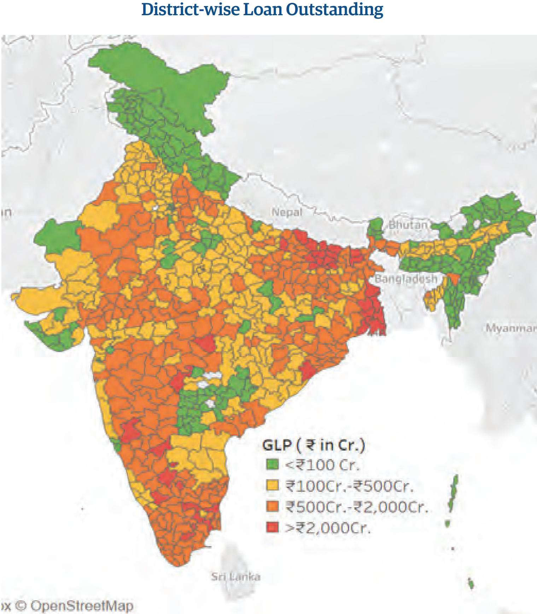

T
he global economy continues to be uncertain and volatile with
geopolitical uncertainties due to conflicts as well as disruption in
shipping routes. The global inflation, while marginally down is still
above the targeted rate. Global growth has shrunk due to tight
monetary policies. This of course affects India and the Indian
economy. While the Indian economy has shown greater resilience, and we
have had a third consecutive year of 7%+ growth in GDP, the inflation
continues to be higher than the targeted band and the monetary policy
approach is not easing. We should look at the inclusive finance space
in the larger picture.
In general, the inclusive finance markets are expected to be inelastic,
insulated from volatility and stable. That is because the loan amounts
are small and therefore might not be very price sensitive. When we say
that the inclusive finance markets are not price sensitive, we allude to
the fact that a few basis points movement in interest rates do not make
an absolute and material difference in the livelihoods and household
economy of the poor, because of the very marginal change this rate would
have on the absolute cost. A reduction of interest rates from 20% per
annum to 19.5% per annum will not make a difference in the weekly or
monthly instalment payment of the poor household if the amount borrowed
is say ₹50,000. At best it would make a difference of about ₹20 on a
monthly instalment.
While global volatility ideally should not have a major impact on the
inclusive finance market, we need to recognise that inflation affects
the poor disproportionately. That is because the poor would have lesser
proportion of their expense as discretionary expenditure and when a
sizeable percentage of the income is spent on non-negotiable essentials,
then, inflation could be killing the poor households. We need to assess
the overall health of the economy in which the poor operate considering
how the volatility of global and domestic markets results in inflation.
The news on inflation is mixed. While there have been positive signs in
reigning in inflation, the Monetary Policy Committee (MPC) has not been
convinced that it is moving southwards fast enough towards target rate
of 4% or even the upper bound limit of 6%. As a result, we see that the
MPC has kept the repo rates constant for over a year, with the voting
being overwhelmingly favouring the stance (see Chart below) (Reserve
Bank of India, 2024).
1 Professor, Centre for Public Policy, Indian Institute of Management
Bangalore.
This is a worrying factor for the poorer segments. This is also worrying
because of food inflation which hurts the poor disproportionately. The
climate events have become regular and erratic. The heat wave during the
first quarter of this fiscal has had some negative impact on the
microfinance sector. The monsoon has been good with more than above
average rainfall across the country. But there are pockets where rains
were deficit and some areas with flooding. There are points of stress
that we see in the buffer stocks of essential grain and pulses and the
ensuing year is likely to be stressful to the poor. While global
volatility may not affect the inclusive finance portfolio, the
inflation, monsoon, other climate events and food prices may result in a
stress on the quality of the loan portfolio of the inclusive finance
institutions which have been having a great run for multiple years
braving many crises.
The redeeming features of the welfare architecture will try to blunt the
negative effects of the larger economic pain points. Increased wage
employment under MGNREGA (increased from ₹60,000 crores in the 2023- 24
Budget estimates to ₹86,000 crores in the 2024-25 budget estimates) will
pump in money to the rural households that makes their cash flows
better. In addition, the supply of free rations under the Right to Food
Act, the reduction of power bills due to roll out of solar panels and
waiver of power bills in some states, the welfare payments made to women
in States like Karnataka and other benefit transfers ensure that the
households either are getting some positive cash flows or there has been
a reduction in cash outflows. These, welfare payments will provide an
insulation for the inclusive finance loans. The challenge for the
inclusive finance sector is to watch out the stress that comes out of
inflation, particularly food inflation and the relief that comes from
direct benefit transfers. Therefore, one would assume that the ensuing
year may not be a year of aggressive growth.
1.2 The changing ecosystem of inclusive finance
The past year was also a year of relief for the inclusive finance sector
and possibly an indication of stability of operations and maturity in
understanding of what the intervention is all about. The intense
political activity due to general elections, the unfavourable climate
impact and some kind over leverage in certain pockets have some negative
on the microfinance and inclusive finance space. Having braved multiple
crises in Kolar, Nizamabad and Krishna districts, and more recently the
Assam crisis, we may assume that the sector has come of age and
stabilised. There were no tensions about the political activity and the
activity continue business-as-usual frame. There were no significant
structural changes, during the past year and there does not seem to be
any fundamental changes soon. How do we read this stability in the
ecosystem, institutional design, product design and delivery of
financial services to the poor and excluded?
It may be time for us to take stock of the situation to understand this
stability and mark the significant events that have led us to this
stage. We also should read the tea leaves to see the possibilities and
fissures of the future.
Let us look at the most significant events in the past and recognise how
the inclusive finance sector has fundamentally changed and what it means
as we go forward in terms of operations. The concept of a solidarity
groups was put to test during the demonetisation phase, when different
members of solidarity groups got affected differently. This was an
inflexion point, which compromised on the group solidarity to getting
individuals to pay their dues. While the trigger was demonetisation, we
also must recognise that the ecosystem had evolved. The group solidarity
was needed because of information asymmetry between the lender and the
borrower. But with credit bureaus emerging effectively, a significant
part of the formal indebtedness of the borrower was now getting
captured. The credit bureau score turned out to be a fairly powerful
weapon that worked in two ways: it helped the lender to take a call
based on the score, and it also helped in recovery – where the lender
could convince the borrower the importance of maintaining a decent
credit score in order to have a continued relationship. But there are
also concerns of some lending done in the same space microfinance is not
getting captured in the credit buraus. The group mechanism, one
fundamental purpose of the group – that of providing round-robin
guarantee was watered down. However, the other fundamental purpose of
the group – the aggregation of transactions and the regularity of the
meeting still continued although in a much diluted manner.
In making this observation it is important to clarify that we are
restricting the note to the JLG type of inclusive finance, while the
self-help groups worked on an ex-ante basis. The SHG architecture has
remained warped in time and embedded in the rural livelihoods
architecture of the State. While it is important to recognise their work
and how they impact the overall ecosystem, in the context of the Bharat
Microfinance Report and the functions undertaken by an organisation like
Sa-Dhan, the details of the SHG ecosystem would not be particularly
important. While there are significant attempts to computerise the SHG
records (with the initiative of NABARD) and to upload the SHG data on to
the credit bureaus, there are still gaps in the journey since the
individual records have not completely been de-duplicated. Moreover, the
SHG bank linkage has been now fully taken over by the DAY-NRLM and it
has been become as the flagship programme for livelihood and enterprises
for poor. This would further get a boost with the implementation of
Lakhpati Didi scheme of GOI, where the women borrowers would be
supported to graduate into larger business activities.
Therefore, the larger shifts that we are discussing is in the context of
the JLG type of inclusive finance.
The second major shift that happened in the design of the JLG system
happened because of the Covid 19 pandemic, where the activity continued,
even without the need for the groups to meet. While in significant parts
of the ecosystem, meetings continue to happen for aggregation of
transactions and regularity, this is no longer the non-negotiable piece
in the design.
With technological advances, it is possible to move to digital payments
and repayments. There are still challenges because of multiple factors:
(a) women may not have smartphones or handsets mapped exclusively to
their account; (b) women are nervous because there is no “touch and
feel” for the transaction. However, this is an area that is open to
significant intervention through literacy and education.
Once the digital payments and repayments become ubiquitous, then the
need for the group meeting would be reduced to (a) socialisation and (b)
regularity of contact with the customer. This change would affect the
way the inclusive finance sector is currently operating. However, these
changes will not be immediate and drastic, but there will be a movement
towards embracing technology. It is important for the players in the
sector to anticipate and make investments not only in hardware and
software, but also in training and awareness programmes.
These are fundamental changes in the operating model of inclusive
finance. As more people get included, it would be important for the
sector to deepen the engagement with the clients. The regulation has
provided for a possibility of increasing the exposure to these families
by increasing the limits in defining microfinance loans and exposures.
However, if the engagement with the customers must be deepened, then it
will have to move towards individual loans. Several organisations
already have individual loans, but these are offered through the
signalling of group mechanisms. The way the deepening of the exposure is
undertaken is through regular increase in exposure limits, based on
credit scores and past performance with the organisation. This is the
weakness in the inclusive finance model. The architecture of assessment
of individual loans through understanding the client cash flows is
limiting. The group model relied on the embedded knowledge of the group
members and their honour to ensure repayments. But as we go to a low
touch, technology enabled, individual model then organisations must be
careful and develop adequate capabilities at the credit officer level on
assessments.
As the level of data improves and recording and codification of
transactions increases, the reliance of embedded knowledge of the groups
would not be as critical and one could continue the relationship based
on extant knowledge and experience. However, the framework under which
this model operates needs a reset in the learnings and lived experience
of credit officers. As we go forward this would be the major challenge
to the inclusive finance organisations. Excessive reliance on data is
also amenable to lending on an involuntary framework. What we mean by
involuntary framework is that the loans would be pushed through offers
based on the models developed based on transaction data. This would be
imperative as more data get captured through digital transactions
including UPI. If this phenomenon picks up, the biggest players in the
market would be FinTech. How the legacy microfinance institutions cope
with the data driven fintech is to be seen. The legacy microfinance
institutions have something that the fintech do not have – presence on
ground and feet on street. The new microfinance model will have to blend
the strength of data with the field presence, to undertake responsible,
need based lending rather than data driven push of loan products.
1.3 Institutional architecture for inclusive finance
Some aspects of the institutional architecture are interesting to note.
There have been no significant fresh players who have been granted the
banking licence either as a small finance bank or universal bank. The
regulatory burden of a bank does not suit the light touch agile model of
MLIs. Even within the first set of microfinance institutions that became
banks, the exuberance is muted, with already one organisation merging
with an SFB that was originally an asset financing NBFC. Even the other
large MLIs have taken the route of being taken over by banks to be used
as non-banking subsidiaries (sourcing loans for the bank balance sheet)
or have become divisions of large NBFCs. This is a phenomenon to note.
The microfinance market has significant headroom to grow – both in terms
of adding new clients and deepening the engagement with existing
clients. This growth needs adequate amount of risk capital which can be
provided by large, listed, well established groups who are taking the
MLIs over as a part of their market expansion and the strategy of not
leaving any white marks.
However, the structure of an SFB which requires the banks to have a
microfinance like portfolio (licencing conditions of priority sector
loans and cap on loan size for 75% of the portfolio) and largely
unsecured, with a bank-level regulatory compliance and capital infusion
that has more stringent levels of capitalisation for unsecured portfolio
and constant benchmarking with other banks. This has created a stress
and a dichotomy in the microfinance (particularly the NBFC-MFI sector).
It may be a good idea for RBI to look at the licencing conditions if
they want more financial institutions to apply in the SFB space.
The biggest play that is emerging is in the Fintech sector.
Organisations like NAVI which looked at infusing digital technology in a
big way to the banking sector was not given a licence. NAVI exited the
inclusive finance space and moved on to be a technology-driven NBFC.
This gives us two important signals: (1) The regulator is not willing to
experiment with radically different models in banking, while happy to be
undertaking incremental changes in the regulatory architecture and (2)
Fintech is not about financial inclusion. While the inclusive customers
could be a subset of Fintech and P2P models, we should assume that those
models have an economic logic of their own and move beyond financial
inclusion. The newly announced Unified Lending Interface (ULI) on the
lines United Payment Interface (UPI) is something to be watched for the
future. But it may take a while to stabilize and get the kind result, we
are looking for.
Therefore, there is still adequate space for the institutions to operate
as NBFC-MFI and other not-for-profit formats as they are. The sector
needs to be updated on the technology-led challenges and competition
emerging from the FinTech, embed closely with the banking sector and
look at leveraging the technology and blending it with the touch they
have with the customers. MLIs would have an advantage over fintech, as
they embrace technology, but still are able to avoid involuntary loan
push models and respond to demand pull models. As the boundaries between
organisational forms break down and delivery models become seamless, it
will be good for customers who will have access to a suite of mainstream
and regulated financial services. It will be a little bit of a problem
for researchers and analysts as data that would emanate from individual
delivery models will not be easily available as they get embedded into
portfolios of larger providers. That is a cost worth paying.
In Conclusion, a few bullets that could be fired:
Inflation, uncertainty in global shipping lines, uncertain local
monsoons would affect the economy, but persistent inflation will
affect the inclusive finance customers and may push the portfolio
towards stress.
Greater amounts of benefit transfers and welfare programmes will blunt
the ill effect of global and domestic headwinds, but it is important
to watch for stress in the client ecosystem.
The fundamental delivery models are gradually changing, and this needs
to be recognised, acknowledged and serious retooling of delivery
models based on risk appetite needs to be re-imagined.
The SHG model needs a significant re-look on how they could be
embedded in the mainstream banking system and credit bureau reporting
system more tightly. The Lakhpati Didi scheme is something which is
giving a hope for the SHG model to take this programme to the next
level.
Technology is on the horizon and is pushing algorithm based
involuntary lending models to the urban middle class and salaried
people and it will not be long before the data of the poor is also
accessed to push loans. This is a red flag for the existing players
with customer touch. Competing with impersonal involuntary push models
and providing voluntary pull products will be a challenge that the
microfinance sector must face.
The institutional architecture debate is settled with openness towards
technology-led models but reservations towards highly regulated
banking models. The element of innovation that is involved requires
light regulation.
The coming year might have two stress points: portfolio level stress
due to inflation and performance of the economy and technology-led
disruption due to fast and unbridled growth of FinTech.
As Sa-Dhan has completed 25 years of existence, we can safely say that
the inclusive finance model has arrived and has been adequately
mainstreamed. The report will reflect that fact.
Box 1.1: Women Entrepreneurship Livelihood Enhancement and Development
(WE-LEAD)
Context
In India, women-led enterprises face several barriers to scaling up,
particularly when it comes to accessing formal finance. While
initiatives like Self-Help Groups (SHGs) and Joint Liability Groups
(JLGs) have provided a foundation, women entrepreneurs still struggle
to transform microenterprises into larger, more sustainable
businesses. Data from the Ministry of MSME shows that only 20.4% of
microenterprises, 5.3% of small enterprises, and 2.7% of medium
enterprises are owned by women, highlighting the need for targeted
interventions that address training, capacity building, and financial
access. The “Women Entrepreneurship Livelihood Enhancement and
Development (WE-LEAD)” project, supported by SIDBI, is a 24-month
comprehensive initiative aimed at empowering women entrepreneurs in
Tamil Nadu and Gujarat. Recognizing the gender disparity within the
MSME sector, where only 20% of MSMEs are owned by women, this project
seeks to close the gap and leverage financial institutions to catalyze
economic growth. By focusing on underrepresented women entrepreneurs,
WE-LEAD strives to move beyond subsistence livelihoods toward
sustainable economic empowerment.
Project Scope
WE-LEAD’s scope is supported by SIDBI and Sa-Dhan to provide training
and handhold support to SHG/JLG members, women-led businesses, a
24-month effort, initially focusing on a baseline survey to assess the
current landscape and identify potential commercial opportunities for
the participants. The project covers Tamil Nadu’s four districts
(Chennai, Coimbatore, Kanyakumari, and Virudhunagar) and Gujarat’s
districts (Ahmedabad, Kutch, Dahod, and Narmada) where Virudhunagar,
Dahod and Narmada being the aspirational districts. Key interventions
involve building entrepreneurial capacity, trade-specific training,
and access to financial and Market linkages, training for women
entrepreneurs in their native languages (English, Tamil, and Gujarati)
and a real-time data collection web portal for continuous monitoring.
The project aims to support 5,200 women entrepreneurs in each state
with comprehensive business training and facilitate credit linkages
with commercial banks and MFIs.
Key Components:
Baseline Survey & Needs Assessment:
Conduct a detailed survey to assess existing economic activities,
identify gaps, and uncover new business opportunities, with a focus on
demographic profiles and credit needs of women entrepreneurs.
Beneficiary Identification & Business Opportunities:
Use psychometric and aptitude tests to identify participants, aligning
their skills and preferences with viable business opportunities to
enhance success rates.
Customized Training Modules:
Develop training modules tailored to the specific needs of
beneficiaries, ensuring relevant content and practical applicability
to their entrepreneurial journeys and practical skills to equip women
for successful entrepreneurship.
Web Portal Development:
Develop a centralized web portal for real-time data collection,
enabling efficient reporting and oversight by SIDBI to track progress
and make data-driven decisions.
Training of Trainers (ToT):
Conduct Training of Trainers (ToT) sessions to equip field teams with
the skills and knowledge to deliver impactful training sessions to
beneficiaries.
Financial Literacy & Market Linkages:
Focus on building financial literacy among beneficiaries and create
strong market linkages to help women scale their businesses.
Small Mart Setup:
Establish a small mart in a key urban location to provide a
marketplace for women entrepreneurs to showcase and sell their
products, enhancing visibility and promoting sustainable market
linkages.
Field Progress and Initiatives:
In Gujarat, the WE-LEAD project has progressed across four districts:
Ahmedabad, Kutch, Dahod, and Narmada, with over 3,416 women
nanopreneurs already onboarded. The project has successfully delivered
EDP (Entrepreneurship Development Program) training to 1430 women and
completed trade-specific training for 692 women across several trades,
such as tailoring, organic soap-making, and dry snack-making.
Additionally, training for 709 women is currently ongoing.
In Tamil Nadu, the WE-LEAD project has progressed across four
districts: Chennai, Coimbatore, Kanyakumari, and Virudhunagar, with
over 1,900 women nanopreneurs already on board and Around 700
beneficiaries trained in EDP and Trade specific training. Training
sessions have been initiated in both states, covering financial
literacy, market access, and digital tools for business management.
Conclusion:
The WE-LEAD project in Gujarat and Tamil Nadu is making significant
strides in addressing the barriers that prevent women-led enterprises
from scaling up. By offering tailored training, financial linkages,
and post- training support, the project is empowering women
entrepreneurs to move beyond subsistence livelihoods toward
sustainable economic growth. In particular, the project’s alignment
with initiatives like Lakhpati Didi, which focuses on enabling SHG
members to achieve sustainable income levels, strengthens its impact.
WE- LEAD contributes to building long-term resilience and economic
empowerment. While notable progress will be made, especially in
mobilizing women entrepreneurs and facilitating credit access,
continuous hand holding, capacity building, and strategic support
remain crucial to fully achieving the project’s goals.
Review of Microfinance
Operations in the country
(based on Credit Bureau data)
T
he Microfinance Industry has become part and parcel of the Indian
financial landscape. It plays a pivotal role in advancing the agenda
of financial inclusion, which aims to bring affordable financial
services to the underserved and unbanked populations, especially in
rural and semi-urban areas who are excluded from the traditional
banking services.
In this chapter the overall position of the microfinance industry, as
captured from one of the leading Credit Information Companies viz. CRIF
Highmark is presented with due analysis to get a more comprehensive and
accurate picture of the overall sector. The data obtained includes all
the micro-lenders (Banks, SFBs NBFC-MFIs, NBFCs and Others) which are
operating in the microfinance space across the country.
Microfinance Industry Snapshot as of 31 March 2024
Indicators
Micro-Lender1
As on 31 March 2024
Micro-Lender Share (in %)
Y-o-Y Growth (in %)
Number of Loan Accounts (in lakhs)
NBFC-MFIs
636
39%
16%
Banks
554
34%
9%
SFBs
244
15%
18%
NBFCs
170
11%
16%
Others
11
1%
13%
Industry
1,613
14%
Loan Outstanding (₹ in Cr.)
NBFC-MFIs
1,73,504
39%
24%
Banks
1,46,909
33%
26%
SFBs
74,712
17%
27%
NBFCs
45,236
10%
46%
Others
2,338
1%
13%
Industry
4,42,700
27%
Micro-Lender
FY 2023-24
Micro-Lender Share (in %)
Y-o-Y Growth (in %)
Amount Disbursed during the FY 2023-24 (₹ in Cr.)
NBFC-MFIs
1,45,827
38%
19%
Banks
1,45,249
37%
22%
SFBs
58,944
15%
11%
NBFCs
36,375
9%
28%
Others
1,479
0.4%
-0.4%
Industry
3,87,874
19%
Source: CRIF Highmark
1 Micro-Lenders Count: NBFC-MFIs: 100, Banks: 13, SFBs: 10, NBFCs: 118
and Others: 169 (Section 8 Companies, Nidhi Companies, Cooperative
Banks, Local Area Banks etc.)
As of 31st March 2024, the combined micro credit portfolio stood at
₹4,42,700 Cr., recording a Y-o-Y growth of 27%. Among the micro-lenders,
the NBFC-MFIs continue to dominate the market share with ₹1,73,504 Cr.
portfolio, holding a market share of 39%, followed by Banks (₹1,46,909
Cr.) at 34%, SFBs (₹74,712 Cr.) at 17%, NBFCs (₹45,236 Cr.) at 8% and
Others (₹2,338 Cr.) at 1% respectively.
Also, the loan amount disbursed during the FY 2023-24 have increased
with a Y-o-Y growth of 19%, contributed largely by NBFC-MFIs (₹1,45,827
Cr.) and Banks (₹1,45,249) whose share was at 38% and 37%, respectively.
This was followed by SFBs (₹58,944 Cr.) at 15%, NBFCs (₹36,375 Cr.) at
9% and Others (₹1,479 Cr.) at 0.4% respectively.
2.1 Geographical Spread of Microfinance
The microfinance operations are spread across 719 districts of 36 States
and Union Territories. The number of districts being served by the
micro-lenders has increased from 715 to 719 districts compared to the
previous financial year FY 2022-23. Banks are lending in 716 districts,
followed by NBFC-MFIs and NBFCs in 707 districts each. The SFBs have
operations in 704 districts and Others have operations in 616 districts
respectively. Some of these districts may not have active presence of
MLIs at present as they may have exited. But they have been able to
reach these districts at one time or other. But the major concentration
of their operations still remains to be around 200 districts or so.
2.2 Number of Loans Accounts and Unique Borrowers (in lakhs)
The total number of loan accounts as reported by the CIC as on 31 March
2024 was at 1,613 lakhs. The NBFC-MFIs (636 lakhs) continue to have the
largest market share at 39%, followed by Banks (554 lakhs) at 34%, while
SFBs (244 lakhs), NBFCs (170 lakhs) and Others (11 lakhs) account for
15%, 11% and 1%, respectively. On a Y-o-Y growth comparison, SFBs have
registered highest growth in loan accounts at 18%, followed by NBFC-MFIs
and NBFCs at 16% each, Others (13%) and Banks (9%) respectively.
The sluggish Y-o-Y growth for Banks, in terms of number of loan accounts
serviced compared to other micro- lenders, may be due to the competitive
growth strategies of NBFCs and NBFCs after the implementation of the new
regulatory framework. Also, the new household income norms and repayment
obligation norms, being applicable to all micro-lenders, including
banks, have put the banks in a disadvantageous position as they have to
look for newer clients elsewhere, as the traditional clients may have
reached the prescribed cap.
2.2.1 State/UT wise No of Loan Accounts (in lakhs)
The Table 2.1 indicates the States and Union Territories wise loan
accounts serviced. On a Y-o-Y comparison, the number of loan accounts of
all States/UTs have increased except for Manipur, Punjab, Andaman &
Nicobar Islands and Himachal Pradesh. Also, the major states which
experienced higher growth in terms of loan accounts are Uttar Pradesh
(27%), Bihar (22%), Karnataka (20%), West Bengal (13%) etc. The de-
growth in Punjab is mainly on account of the ongoing agitation of
farmers and the ‘Karz Mukhti Abhiyaan’ being run by some vested
elements. Also, the ongoing law and order problems in Manipur on account
of ethnic clashes have disrupted the microfinance operations in the
state.
Table 2.1 Loan Accounts (in lakhs) of all micro-lenders across
States/UTs – March 2024 & March 2023 (in descending order of Loan
Accounts)
S. No.
State/UT
March 2024
March 2023
Y-o-Y Growth (in %)
1
Bihar
221.75
181.29
22.32%
2
Tamil Nadu
188.42
174.58
7.93%
3
Uttar Pradesh
163.74
128.66
27.26%
4
Karnataka
143.91
119.96
19.97%
5
West Bengal
132.99
117.26
13.41%
6
Maharashtra
124.70
112.16
11.18%
7
Odisha
98.05
86.85
12.90%
8
Madhya Pradesh
93.46
84.81
10.20%
9
Andhra Pradesh
68.65
61.62
11.41%
10
Rajasthan
67.83
61.94
9.50%
11
Jharkhand
49.15
43.02
14.24%
12
Kerala
48.83
45.64
7.00%
13
Gujarat
46.68
40.51
15.24%
14
Telangana
39.67
36.11
9.85%
15
Chhattisgarh
28.16
26.34
6.91%
16
Assam
25.65
24.89
3.06%
17
Punjab
23.89
24.60
-2.90%
18
Haryana
22.98
22.89
0.35%
19
Uttarakhand
7.30
6.66
9.61%
20
Tripura
7.18
6.61
8.65%
21
Puducherry
2.71
2.56
6.10%
22
Delhi
2.67
2.45
9.28%
23
Others
0.71
0.52
36.73%
24
Goa
0.67
0.52
29.15%
25
Himachal Pradesh
0.64
0.65
-2.00%
26
Meghalaya
0.50
0.43
14.98%
27
Manipur
0.46
0.53
-13.19%
28
Mizoram
0.43
0.35
21.88%
29
Sikkim
0.42
0.39
7.20%
30
Arunachal Pradesh
0.30
0.17
74.74%
31
Jammu & Kashmir
0.28
0.23
22.15%
32
Chandigarh
0.21
0.21
0.50%
33
Nagaland
0.16
0.15
7.00%
34
Andaman & Nicobar Islands
0.05
0.06
-2.05%
35
Daman & Diu
0.05
0.04
22.71%
36
Dadra & Nagar Haveli
0.03
0.02
33.93%
37
Ladakh
0.00
0.00
50.00%
Industry
1,613
1,416
14%
2.2.2 State/UT-wise Unique Active Borrowers (in lakhs)
The State/ UT wise number of unique active borrowers are given in Table
2.2, which shows a Y-o-Y overall growth of 17%. The major reason for the
growth of the unique active borrowers is on account of the new
guidelines which has put cap on repayment obligation for a household,
which applies to all micro-lenders. The micro-lenders have to fetch new
borrowers as their options in the traditional operational areas have
become limited.
Table 2.2 Unique Active Borrowers (in lakhs) of all micro-lenders across
States/UTs - March 2024 & March 2023 (in descending order of Unique
Active Borrowers)
S. No.
State/UT
March 2024
March 2023
Y-o-Y Growth (in %)
1
Bihar
109.35
85.15
28.43%
2
Tamil Nadu
92.73
83.15
11.51%
3
Uttar Pradesh
91.38
69.64
31.21%
4
West Bengal
77.18
69.45
11.13%
5
Karnataka
65.55
52.97
23.76%
6
Maharashtra
65.43
56.74
15.32%
7
Madhya Pradesh
53.66
46.67
14.98%
8
Andhra Pradesh
46.36
41.73
11.10%
9
Odisha
46.16
40.65
13.56%
10
Rajasthan
38.45
33.31
15.44%
11
Telangana
28.86
26.53
8.78%
12
Gujarat
27.34
23.13
18.17%
13
Jharkhand
24.46
20.23
20.88%
14
Kerala
22.18
19.77
12.22%
15
Assam
19.71
18.68
5.49%
16
Chhattisgarh
16.32
14.93
9.29%
17
Punjab
13.25
12.94
2.36%
18
Haryana
13.10
12.35
6.04%
19
Tripura
4.60
4.23
8.72%
20
Uttarakhand
4.28
3.80
12.64%
21
Delhi
2.02
1.82
11.16%
22
Puducherry
1.28
1.15
11.37%
23
Others
0.49
0.36
34.88%
24
Himachal Pradesh
0.42
0.43
-2.33%
25
Manipur
0.42
0.47
-11.52%
26
Meghalaya
0.41
0.37
12.15%
27
Mizoram
0.38
0.31
20.86%
28
Goa
0.36
0.28
26.68%
29
Sikkim
0.32
0.28
14.92%
30
Arunachal Pradesh
0.20
0.13
51.35%
31
Jammu & Kashmir
0.19
0.16
15.59%
32
Nagaland
0.14
0.13
3.55%
33
Chandigarh
0.14
0.12
10.23%
34
Andaman & Nicobar Islands
0.05
0.05
3.26%
35
Daman & Diu
0.02
0.03
-20.99%
36
Dadra & Nagar Haveli
0.01
0.01
-46.83%
37
Ladakh
0.00
0.00
0.00%
Industry
867
742
17%
2.3 Loan Outstanding (₹ in Cr.)
2
2
Off balance sheet (managed, assigned, and business correspondent)
portfolio of NBFC-MFIs, NBFCs, and non-profit MFIs are included under
Bank’s category.
The combined microcredit portfolio outstanding of all micro-lenders
stands at ₹4,42,700 Cr., posting a growth Y-o-Y growth of 27%. All
micro-lenders have posted double digit growth with NBFCs recording
highest growth (46%), followed by SFBs (27%), Banks (26%), NBFC-MFIs
(24%) and Others (13%) respectively.
2.3.1 State/UT-wise Loan Outstanding (₹ in Cr.)
The Loan outstanding across various States and Union territories are
given in Table 2.3. From the table below, it may be seen that the loan
outstanding for states such as Manipur (-18.07%) and Punjab (-3.47%)
have decreased compared to the previous financial year. The reasons for
the de-growth in Manipur is due to the internal issues within the state
with regard to law and order. Similarly, in Punjab the loan waiver
movement has affected the growth of the portfolio.
Table 2.3 Loan Outstanding (₹ in Cr.) of all micro-lenders across
States/UTs - March 2024 & March 2023 (in descending order of Loan
Outstanding)
S. No.
State/UT
March 2024
March 2023
Y-o-Y Growth (in %)
1
Bihar
65,487
49,181
33%
2
Tamil Nadu
58,239
46,403
26%
3
Uttar Pradesh
46,304
33,844
37%
4
Karnataka
42,560
31,588
35%
5
West Bengal
40,328
30,962
30%
6
Maharashtra
33,304
27,453
21%
7
Odisha
25,615
20,444
25%
8
Madhya Pradesh
24,870
20,882
19%
9
Rajasthan
18,144
15,608
16%
10
Kerala
14,159
12,752
11%
11
Jharkhand
13,118
10,680
23%
12
Gujarat
13,107
10,138
29%
13
Andhra Pradesh
8,346
5,903
41%
14
Assam
7,410
5,974
24%
15
Chhattisgarh
7,390
6,205
19%
16
Haryana
6,236
5,801
8%
17
Punjab
5,684
5,889
-3%
18
Telangana
5,015
3,431
46%
19
Tripura
2,314
1,901
22%
20
Uttarakhand
2,077
1,695
23%
21
Puducherry
842
678
24%
22
Delhi
795
650
22%
23
Goa
195
135
45%
24
Himachal Pradesh
182
173
5%
25
Others
172
92
88%
26
Sikkim
133
98
36%
27
Meghalaya
129
100
29%
28
Mizoram
121
95
28%
29
Manipur
104
127
-18%
30
Jammu & Kashmir
83
75
11%
31
Arunachal Pradesh
81
43
87%
32
Nagaland
55
47
17%
33
Chandigarh
54
52
4%
34
Andaman & Nicobar Islands
20
14
43%
35
Daman & Diu
16
13
26%
36
Dadra & Nagar Haveli
9
6
55%
37
Ladakh
0.03
0.02
31%
Industry
4,42,700
3,49,130
27%
The major states in terms of loan outstanding such as Uttar Pradesh has
recorded higher Y-o-Y growth (37%) followed by Karnataka (35%), Bihar
(33%), West Bengal (30%), Gujarat (29%), Tamil Nadu (26%), Odisha (25%)
Maharashtra (21%), Madhya Pradesh (19%), and Rajasthan (16%). The Y-o-Y
growth of the industry as a whole was at 27%.
The two states which hitherto were out of the microfinance fold viz.
Telangana and Andhra Pradesh recorded 46% and 41% Y-o-Y growth
respectively. The reason for this higher growth was due to a lower base
they had in the previous year. The Hon’ble Supreme Court order upholding
the Telangana High Court decision against the State Government Ordinance
issued in 2010 has paved way for MLIs to operate in these states more
freely.
NBFC-MFIs with 39% market share was leading, followed by Banks at 33%.
The SFBs, NBFCs, and Other institutions, accounted for 17%, 10%, 1% of
the market share, respectively. The smaller MLIs had a larger Business
Correspondent (BC) portfolio and the same is reflected in the Banks or
NBFC segment which engaged them.
It can be seen that Banks which had highest share at 42% at the end of
March 2021 have been relegated to the second position with 33%. Whereas
the NBFC-MFIs, which was at 31% three years back has jumped to 39%, now,
and has taken the pole position. This change is largely on account of
the new regulatory norms making the same applicable to all
micro-lenders, thereby reducing the advantage Banks enjoyed earlier.
2.3.2 Average Balance per Loan Account (in ₹)
The Average Balance per Loan Account (in ₹) in the loan account is given
in Table 2.4. There is an increase for major states in terms of
portfolio like Tamil Nadu (16%), West Bengal (15%), Karnataka (12%),
Bihar (9%), Uttar Pradesh (8%) and Madhya Pradesh (8%) over the previous
year. The Telangana (33%) and Andhra Pradesh (27%) have also posted
double-digit growth. Whereas the States/UTs such as Punjab (-1%),
Manipur (-6%), Jammu & Kashmir (-9%), Ladakh (-13%) have registered
negative growth in average balance per loan account.
Table 2.4: Average Balance per Loan Account (in ₹) - March 2024 & March
2023 (in descending order of Average Balance per Loan Account)
S.No
State/UT
March 2024 (in ₹)
March 2023 (in ₹)
Y-o-Y Growth (in %)
1
Andaman & Nicobar Islands
36,859
25,198
46%
2
Nagaland
34,381
31,382
10%
3
Daman & Diu
33,884
33,119
2%
4
Tripura
32,227
28,775
12%
5
Dadra & Nagar Haveli
32,106
27,765
16%
6
Sikkim
31,711
25,048
27%
7
Puducherry
31,006
26,487
17%
8
Tamil Nadu
30,909
26,579
16%
9
West Bengal
30,324
26,404
15%
10
Jammu & Kashmir
30,143
33,132
-9%
11
Delhi
29,738
26,560
12%
12
Karnataka
29,574
26,332
12%
13
Bihar
29,532
27,129
9%
14
Kerala
28,995
27,940
4%
15
Goa
28,939
25,812
12%
16
Assam
28,892
24,002
20%
17
Himachal Pradesh
28,487
26,554
7%
18
Uttarakhand
28,441
25,438
12%
19
Uttar Pradesh
28,279
26,304
8%
20
Mizoram
28,169
26,820
5%
21
Gujarat
28,077
25,027
12%
22
Arunachal Pradesh
27,420
25,592
7%
23
Haryana
27,144
25,338
7%
24
Rajasthan
26,751
25,199
6%
25
Ladakh
26,738
30,716
-13%
26
Maharashtra
26,708
24,477
9%
27
Jharkhand
26,689
24,823
8%
28
Madhya Pradesh
26,610
24,622
8%
29
Chhattisgarh
26,238
23,555
11%
30
Odisha
26,123
23,540
11%
31
Meghalaya
25,998
23,110
12%
32
Chandigarh
25,524
24,627
4%
33
Others
24,192
17,640
37%
34
Punjab
23,796
23,937
-1%
35
Manipur
22,540
23,883
-6%
36
Telangana
12,643
9,502
33%
37
Andhra Pradesh
12,157
9,580
27%
Industry
27,441
24,661
11%
2.3.3 Top States and Districts in terms of Loan
Outstanding
The top ten States and top twenty-five districts in terms of total loan
outstanding at end of the FY 2024 is given in Table 2.5 and Table 2.6,
respectively.
Table 2.5: Top Ten States in terms of Loan Outstanding (₹ in Cr.)
Microfinance Industry – all micro-lenders
State
Loan Outstanding (₹ in Cr.)
Bihar
65,487
Tamil Nadu
58,239
Uttar Pradesh
46,304
Karnataka
42,560
West Bengal
40,328
Maharashtra
33,304
Odisha
25,615
Madhya Pradesh
24,870
Rajasthan
18,144
Kerala
14,159
The top ten states accounted for 83% of share in the industry portfolio,
while the top five states alone accounted for 57% of the industry
portfolio.
Table 2.6: Top Twenty-Five Districts in terms of Loan Outstanding (₹ in
Cr.)
Microfinance Industry – all micro-lenders
State
District
Loan Outstanding (₹ in Cr.)
West Bengal
Murshidabad
4,439
Bihar
East Champaran
4,269
Bihar
Muzaffarpur
4,246
Bihar
Samastipur
4,243
Karnataka
Mysuru
3,954
Bihar
Madhubani
3,614
West Bengal
North 24 Parganas
3,607
Tamil Nadu
Cuddalore
3,341
Bihar
Darbhanga
3,156
Karnataka
Belgaum
3,152
Tamil Nadu
Thanjavur
3,058
West Bengal
South 24 Parganas
2,960
Bihar
Aurangabad
2,809
Bihar
West Champaran
2,789
Bihar
Sitamarhi
2,782
Tamil Nadu
Salem
2,747
Tamil Nadu
Nagapattinam
2,658
Karnataka
Tumakuru
2,652
Bihar
Begusarai
2,632
Tamil Nadu
Madurai
2,621
Uttar Pradesh
Gorakhpur
2,619
Bihar
Purnia
2,591
Karnataka
Bengaluru
2,564
West Bengal
Nadia
2,520
Bihar
Vaishali
2,519
The top 25 districts in terms of loan outstanding, included 11 districts
from Bihar, 5 districts from Tamil Nadu, 4 districts each from Karnataka
and West Bengal, and 1 district from Uttar Pradesh. All the top 25
districts had ₹2,000 plus Cr. loan outstanding and of which 11 districts
had loan outstanding more than ₹3,000 Cr. and 4 districts with more than
₹4,000 Cr. loan outstanding. The top 25 districts accounted for 18% of
share in total industry portfolio and top ten districts accounted for 9%
of the total industry portfolio.
Box 2.1: End to end digital transformation in microfinance lending
Muthoot Microfin Ltd (MML), one of the premier microfinance
institutions, uses advanced technologies to provide financial services
at a scale for its clients across the country. It has developed
platforms to orchestrate digital customer journeys for its clients
easily and transparently.
1. Credit Assessment:
First, in the industry, an application-based scorecard was
implemented to assess the customer’s creditworthiness by
assigning individual credit scores to customers. As a result, it
can risk profile each customer individually based on parameters
such as payment track record, demographics, age, and location.
Profiling has been done for approximately 2.4 million clients
from September 2022 to March 2024.
Template-based cash-flow and income assessment of the customer
and their household to ensure a realistic assessment of the
customer and their household income. The assessment has been
done for
than 2.8 million households from April 2022 to March 2024.
First in the industry, implemented a Socio-Economic Profile
score for customer selection.
0.6 million clients were profiled using the model.
2. KYC Check & Document Verification through a Third Party:
Implemented automated KYC checks with the support of third-party
vendors eliminating the scope of fraud and any error on account
of manual intervention.
Implemented BOT for verification of application details against
the supporting documents.
First in the industry, implemented paperless sourcing and
documentation. All the agreements and documentation are done
through E-Signing ensuring authentication of execution,
error-free, and without any print or paper, ensuring the best in
industry TAT.
Around 2.4 million loans have been processed through E-sign
from April 2023 to March 2024.
Approximately 2 million KYCs have been verified from April 2023 to
March 2024.
3. Loan Processing & Collections:
Front runners in indigenously implementing mobility-based
solutions for sourcing applications, loan processing, and
collections. The same supports both offline and online modes of
operations.
Around 5.3 million applications have been processed and 4.1
million loans have been managed from April 2023 to March 2024.
Mobility-based solution for collection on the field with the
flexibility to operate offline to enable collection taking in
remote locations without any network. Further, receipts are
issued on the field via Bluetooth printers ensuring transparency
and accountability to the customers.
Multiple digital payment options such as QR code, BBPS, Easy
Pay, UPI, website option to pay, SMS link for payment, and
WhatsApp BOT for payment options for customers.
First in the segment usage of BOT to automate reconciliation of
collection against the vouchers.
Approximately 90% of the collections are managed through BOT.
4. Disbursement:
Loan requests are enabled through customer application and
disbursement without branch visits. Around 35K loans amounting
to
₹1,268 million were disbursed through customer applications
from June 2023 to March 2024.
H2H mode of disbursement directly into the bank account to the
customer minimizing manual intervention post disbursement at the
branch.
More than 1.8 million loans were disbursed through H2H mode
from April 2023 to March 2024.
5. Insurance:
First in the industry, launched NATCAT insurance to insure their
livelihood/cash-flows for a limited period as they are quite
vulnerable to natural calamity, and it has a direct impact on
their livelihood and income generation capability.
Around 1.6 million loans have been covered under the scheme
from April 2023 to March 2024.
Also, offer Hospi-Cash Insurance to safeguard their
hospitalization needs to support them in their tough times.
Provide e-clinic facility to their customers at 275 branches,
where customers can consult their health issues with qualified
physicians.
6. Interaction with Clients:
One of its kind and the first in the segment to give the
customer the option to chat via WhatsApp and get loan details
and the option to pay through the link.
Courtesy: Muthoot Microfln Ltd. (MML)
2.4 Delinquency (in %)
Table 2.7: States/UTs wise overall delinquency (in %) under different
buckets (in descending order of Loan Outstanding)
S.No
State/UT
Loan Out- standing (₹ in Cr.)
PAR 31-60 (in %)
PAR 61-90 (in %)
PAR 91-180 (in %)
PAR 180+ (in %)
1
Bihar
65,487
0.3%
0.4%
0.5%
3.6%
2
Tamil Nadu
58,239
0.6%
0.7%
0.9%
6.9%
3
Uttar Pradesh
46,304
0.6%
0.7%
0.9%
4.5%
4
Karnataka
42,560
0.2%
0.2%
0.4%
4.9%
5
West Bengal
40,328
0.3%
0.4%
0.6%
14.7%
6
Maharashtra
33,304
0.4%
0.6%
1.0%
11.9%
7
Odisha
25,615
0.4%
0.6%
0.9%
10.5%
8
Madhya Pradesh
24,870
0.7%
1.0%
1.6%
10.9%
9
Rajasthan
18,144
0.9%
1.0%
1.7%
8.9%
10
Kerala
14,159
1.3%
1.8%
2.0%
10.6%
11
Jharkhand
13,118
0.5%
0.8%
1.0%
6.7%
12
Gujarat
13,107
0.7%
0.8%
1.5%
8.2%
13
Andhra Pradesh
8,346
0.2%
0.2%
0.2%
36.9%
14
Assam
7,410
0.5%
0.5%
0.5%
44.1%
15
Chhattisgarh
7,390
0.5%
0.8%
1.0%
10.6%
16
Haryana
6,236
0.8%
1.2%
1.6%
10.6%
17
Punjab
5,684
2.6%
5.2%
6.0%
15.8%
18
Telangana
5,015
0.1%
0.1%
0.2%
38.9%
19
Tripura
2,314
0.3%
0.6%
0.8%
9.2%
20
Uttarakhand
2,077
0.6%
0.8%
0.9%
8.5%
21
Puducherry
842
0.3%
0.4%
0.5%
8.4%
22
Delhi
795
0.8%
1.1%
1.3%
16.3%
23
Goa
195
0.1%
0.1%
0.2%
6.7%
24
Himachal Pradesh
182
0.5%
0.6%
0.7%
4.6%
25
Others
172
0.4%
0.2%
0.3%
9.6%
26
Sikkim
133
2.2%
2.7%
1.2%
10.7%
27
Meghalaya
129
0.4%
0.5%
0.4%
18.9%
28
Mizoram
121
1.0%
0.9%
0.9%
3.4%
29
Manipur
104
6.0%
2.7%
9.3%
48.8%
30
Jammu & Kashmir
83
1.0%
1.0%
1.4%
1.3%
31
Arunachal Pradesh
81
0.9%
1.3%
0.4%
3.0%
32
Nagaland
55
0.4%
0.5%
0.2%
18.8%
33
Chandigarh
54
0.9%
0.9%
1.6%
14.3%
34
Andaman & Nicobar Islands
20
0.5%
0.5%
0.5%
2.2%
35
Daman & Diu
16
0.9%
0.7%
1.7%
11.6%
36
Dadra & Nagar Haveli
9
0.2%
0.6%
1.1%
6.4%
37
Ladakh
0.03
0.0%
0.0%
0.0%
4.3%
Industry
4,42,700
0.5%
0.7%
0.9%
9.6%
Table 2.7 indicates State/UT-wise overall industry delinquency
percentage under various buckets.
States like Karnataka and Bihar had delinquency levels lower than the
industry PAR for different buckets. The states like Manipur, Assam,
Telangana, Andhra Pradesh, Meghalaya, Nagaland, Punjab, West Bengal,
Maharashtra, Madhya Pradesh, Sikkim, Chhattisgarh, Kerala, Haryana,
Odisha etc. had PAR 180+ dpd, higher than industry average of 9.6%. The
higher PAR 180+ of Telangana and Andhra Pradesh are due to their older
loans, given before 2010, still being shown as outstanding. The higher
PAR 180+ across the board is on account of the legacy loan which became
overdues during the earlier crisis like Covid pandemic and
Demonetization, continuing to be shown in the credit bureau as
receivable.
2.5 Average Ticket Size (ATS)
The average ticket size (ATS) stood at ₹46,271 as on March 2024 as
against ₹41,171 as on March 2023 recording an increase of 12.3%. The
average ticket size has increased across all categories of micro-lenders
except for Other institutions. Among the micro-lenders, SFBs (₹49,474)
had the highest ATS, followed by NBFCs (₹49,362), Banks (₹46,426),
Others (₹45,497) and NBFC-MFIs (₹44,281). Also, Banks have registered
highest Y-o-Y growth in ATS at 19%, followed by NBFCs (17%), NBFCs-MFIs
(9%), SFBs (5%), while the Others have registered a decline in ATS
(-7%).
The average ticket size (ATS) in top ten States/UTs is given in Figure
2.7. It can be seen that except for Tamil Nadu and Kerala, the others
are smaller states or UTs.
Higher Average Ticket Size in Nagaland, Sikkim, Daman & Diu, can be due
to higher average ticket size of loans disbursed by Banks, and SFBs,
which have more presence than MLIs in these States/UTs.
2.6 Loan Disbursement
2.6.1 Disbursement Volume (Number of loans disbursed)
As can be seen from Figure 2.8 below, during FY 2023-24, there has been
a moderate growth in the number of loans disbursed, increasing from 789
lakh loans to 838 lakh loans, registering a Y-o-Y growth of 6%.
In terms of Y-o-Y growth among the micro-lenders, both NBFC-MFIs and
NBFCs have registered 9% growth, followed by Others (7%), SFBs (6%) and
Banks (3%) respectively.
2.6.2 Loan Amount Disbursed (₹ in Cr.)
Table 2.8 Loan Amount Disbursed (₹ in Cr.) of all micro-lenders across
States/UTs - March 2024 & March 2023 (in descending order of Loan Amount
Disbursed)
S.No
State/UT
Amount Disbursed (₹ in Cr.) during FY 23-24
Amount Disbursed (₹ in Cr.) during FY 22-23
Y-o-Y Growth (in %)
1
Bihar
62,950
50,063
26%
2
Tamil Nadu
50,591
43,188
17%
3
Uttar Pradesh
44,151
35,304
25%
4
Karnataka
38,630
29,943
29%
5
West Bengal
36,197
28,457
27%
6
Maharashtra
28,826
24,319
19%
7
Odisha
22,096
19,155
15%
8
Madhya Pradesh
21,084
19,313
9%
9
Rajasthan
15,252
14,770
3%
10
Jharkhand
12,324
10,697
15%
11
Kerala
11,133
10,978
1%
12
Gujarat
10,854
9,729
12%
13
Chhattisgarh
6,367
5,722
11%
14
Andhra Pradesh
5,106
2,976
72%
15
Haryana
4,805
5,311
-10%
16
Assam
3,929
2,601
51%
17
Punjab
3,859
4,991
-23%
18
Telangana
3,248
1,627
100%
19
Tripura
2,219
1,813
22%
20
Uttarakhand
1,846
1,609
15%
21
Puducherry
711
590
20%
22
Delhi
614
704
-13%
23
Goa
179
128
40%
24
Others
152
44
243%
25
Himachal Pradesh
150
154
-2%
26
Mizoram
107
100
8%
27
Meghalaya
104
82
27%
28
Sikkim
101
95
7%
29
Arunachal Pradesh
73
37
95%
30
Jammu & Kashmir
67
71
-4%
31
Nagaland
50
34
46%
32
Chandigarh
40
46
-12%
33
Andaman & Nicobar Islands
19
11
69%
34
Manipur
16
117
-86%
35
Daman & Diu
15
17
-15%
36
Dadra & Nagar Haveli
8
7
14%
37
Ladakh
0.03
0.02
41%
Industry
3,87,874
3,24,801
19%
Out of the total of ₹3,87,874 Cr. disbursed during the year FY 23-24,
NBFC-MFIs and Banks had disbursed almost similar amount at ₹1,45,827 Cr.
and ₹1,45,249 Cr. respectively. They were followed by SFBs at ₹58,944
Cr., NBFCs at ₹36,375 Cr. and Others at ₹1,479 Cr. respectively. While
there is not much significant difference in disbursement data by
NBFC-MFIs and Banks, the outstanding figure is lower for Banks
indicating shorter loan period or quicker recovery or quicker write off
of delinquent loans.
2.7 Way forward for the Microfinance Industry
The microfinance industry in India continues to play a crucial role in
fostering the agenda of financial inclusion. The past disruptions like
the COVID-19 pandemic or demonetization, although affected the industry
badly, it was quick to come back to normal working, The resilience power
of the industry is laudable. The latest disruptions on account of Covid
was overcome largely due to the new regulatory framework which gave a
lot freedom to the MLIs. But a question is being raised now as to
whether it is leading to over leverage. Thankfully the industry leaders
were quick to realize this and with the help of SROs have put in some
guard rails which have helped the sector to stabilize and move forward.
But more caution is needed.
The microfinance still remains largely confined to a few states and few
districts. The states like Bihar, Tamil Nadu, Uttar Pradesh, Karnataka
and West Bengal account for nearly 57% of the industry portfolio.
Whereas there are large areas of untapped potential in under-served and
less-penetrated regions like West, Central and North East of India. The
microfinance needs to move into newer geographies to bring more
effective financial inclusion in the country.
Also, the sector is grappled with HR issues which needs special focus.
The higher attrition rate seen presently is not good for the industry.
There is need to source more newer talents to the industry to address
the HR issues. Also, the existing staff need to be retained more by
improving the overall working conditions for them.
Improving efficiency is another challenge for the industry which can
also bring down the pricing. The use of technology and also adopting
newer approach for lending and collections may be areas for the industry
and its leaders to ponder on.
Microfinance industry is an industry which nobody can wish away. It is
capable of addressing the larger needs of the poorer segment. A proper
policy support along with funding facilities can help the sector to move
forward and serve the needs of the people.
The Growth and Spread of Microfinance in India
T
he growth and spread of microfinance are measured in terms of number
of clients and amount of loan portfolio. Considering the vastness of
the country and the population, the growth has to be steady and quick
to reach everyone and everywhere in a quick pace. This is also the
objective of the financial inclusion that our policy makers are
planning for. Microfinance sector has been at the forefront in this
objective and have been growing steadily in the past few years except
for a couple of years of pandemic and other crisis
Microfinance lenders, including Micro Lending Institutions (MLIs), have
operations in all the 36 States/UTs in India. Although the growth and
expansion are not uniform across the geography, the MLIs have been able
to make some presence in all the States/ UTs in the country.
This chapter is prepared based on the detailed information collected
directly from 217 Micro Lending Institutions (MLIs) (which includes
NBFC-MFIs, NBFCs, Sec.8 Coms, Societies, Trusts, MACS or Cooperatives,
Pvt. & Pub. Ltd. Coms and excludes Banks and SFBs) operating in the
country which gives the geographical distribution of microfinance
institutions and their client outreach, in the first part, and the
issues of loan outstanding, loan disbursement and purpose of loans, in
the second part.
Most part of this chapter is based on the analysis of the data collected
from these 217 Micro Lending Institutions (MLIs) which excludes Banks
and SFBs, which also lend under microfinance segment.
3.1 Geographical Spread of Microfinance
Based on the data reported by 217 MLIs, which cover more than 98% of MLI
portfolio, MLIs operate in all 28 States, 5 Union Territories, and 723
districts in India. This data is in little variance with the data
presented in Chapter 2, which have been sourced from Credit Information
Company (CIC), where the operations of MLIs is reported in 36 States/UTs
and 719 districts. This variation could be due to the fact that some of
the BC partners operating on behalf of Banks/FIs, may also have been
reported as part of their area of operations.
The Table 3.1, shows the distribution of MLIs by State/UT they operate.
The data presented is the number of MLIs operating in single or multiple
states/UTs with comparative position of the previous year. Annexure 1
indicates the State/UT wise presence of different MLIs and SFBs across
the country.
Further analysis shows that during FY 2023-24, there are 25 MLIs which
had operations in more than ten States/UTs, out of which 20 MLIs are
operating in more than fifteen States/UTs. Whereas, 89 MLIs had
operations confined to a single State/UT, as against 101 in the previous
year. Another 103 MLIs operated in 2 to 10 States/UTs. The details of
States/Union Territories-wise of MLI operations are given in Table 3.1.
1
Some of these districts may not have active presence of MLIs at present
as they may have exited. But they have been able to reach these
districts at one time or other.
Table 3.1: No. of MLIs in Indian States/UTs
FY 23-24
FY 22-23
No. of States/UTs
No. of MLIs
1
89
101
2 to 5
75
65
6 to 10
28
26
11 to 15
5
8
> 15
20
13
Total
217
213
The number of States/UTs have almost remained the same for the past two
years, with little variations in certain categories. The larger MLIs,
mostly NBFC-MFIs had spread out their operations to more States/ UTs.
Whereas the smaller MLIs, especially those in the category “Not for
Profit” category, remained mostly confined to one or two states only.
These institutions maintained their regional focus in their operations.
A list of top 10 MLIs operating in terms of number of States/UTs and
districts are presented in Figure 3.1 and Figure 3.2, respectively. The
Figure 3.1 shows that Satin had operations in 26 States/UTs, which was
the maximum. This was followed by Asirvad and Satya having operations in
25 States/UTs each.
*Note:
Avanti Finance and Avanti Microfinance have presence in 31 and 21
States/UTs, respectively. But it works on a hybrid model (mainly tied up
with Loan Service Providers/ BCs and some physical branches), to deliver
different loan products to the clients across the country.
Note:
Avanti Finance and Avanti Microfinance have presence in approximately
over 303 and 170 districts respectively. But it works on a hybrid model
(mainly tied up with Loan Service Providers/ BCs and some physical
branches), to deliver different loan products to the clients across the
country.
The Figures 3.1 and 3.2 shows that Satin (26 States/UTs) is leading in
terms of their presence in States/UTs while Fusion (440 districts) is
leading in terms of number of districts.
Table 3.2: No. of MLIs operating in Indian States/UTs and No. of
districts where MLIs Operated in a State/UT as on March 2024
Name of the State/UT
No. of MLIs operating in the State (including those having Head
Quarters outside)
No. of districts of the state where MLIs operate
No. of Branches
Andaman & Nicobar Islands
2
1
3
Andhra Pradesh
19
27
360
Arunachal Pradesh
7
20
43
Assam
29
33
511
Bihar
66
38
4,194
Chandigarh
3
1
3
Chhattisgarh
41
31
962
Delhi
12
10
28
Goa
12
2
34
Gujarat
39
32
1,189
Haryana
46
22
705
Himachal Pradesh
14
11
69
Jammu & Kashmir
6
10
47
Jharkhand
41
24
1,070
Karnataka
44
31
2,972
Kerala
37
14
923
Madhya Pradesh
66
54
2,501
Maharashtra
53
36
2,004
Manipur
12
13
51
Meghalaya
11
6
20
Mizoram
6
6
12
Nagaland
2
8
33
Odisha
49
30
2,048
Puducherry
28
4
81
Punjab
26
23
542
Rajasthan
55
48
1,964
Sikkim
7
4
18
Tamil Nadu
78
38
4,187
Telangana
16
29
238
Tripura
18
8
191
Uttar Pradesh
74
74
4,131
Uttarakhand
29
12
230
West Bengal
48
23
2,280
723
33,644
Table 3.2 indicates that there were 78 MLIs in operation, with 4,187
branch networks in Tamil Nadu, which was the highest in terms of number
of MLIs in a State, followed by Uttar Pradesh with 74 MLIs and 4,131
branches.
3.2 Branch Network
The branches of MLIs facilitate business by involving in sourcing of
loan application, its appraisal, monitoring of loans and collections of
recoveries. Generally, the branches and business have a direct
correlation.
As on March 2024, there were 33,644 branches of MLIs operating in the
country, as against 25,790 in March 2023, registering a Y-o-Y growth of
30%. However, if we exclude the NBFCs and Pvt. & Pub. Ltd. Coms and only
consider the pure MFIs category (NBFC-MFIs, Societies, Sec.8 Coms,
Trust, MACS or Cooperatives) then the Y-o-Y growth of branches is 17%.
The distribution of branches among different categories as on March 2024
indicates that pure MFIs (NBFC- MFIs, Societies, Sec.8 Coms, Trust, MACS
or Cooperatives) had a share of 26,601 branches, while NBFCs had 4,488
branches, doing microfinance operations and Pvt & Public Ltd. Companies
with microfinance business had 2,555 operating branches, respectively.
Also, legal form wise, NBFC-MFIs had the lion’s share of 25,475 branches
(76%). The size wise analysis shows that Very Large MLIs (GLP> ₹2,000
Cr.) had the largest share of branches at 23,821 (71%).
Note:
In the decadal trend graph of Branch Network given above, the number of
branches in each year (from 2014-2024) represented by blue bars, it
includes branches of all the Micro Lending Institutions (MLIs), however
for FY 24, the break-up of total number of branches (i.e. 33,644
branches) is segregated as pure MFIs (NBFC-MFIs, Societies, Sec.8 Coms,
Trust, MACS or Cooperatives),(represented by red bar) NBFCs (represented
by green bar), and Pvt. & Pub. Ltd. Coms (represented by orange bar) to
get a better understanding of growth of the pure MFIs.
3.3 Client
2
Outreach
The microfinance serves the financial needs of the poor and needy who
finds difficult to raise funds from main stream banking sources. Also,
the microfinance provides the credit in a hassle-free manner with a door
step service. This benefits the borrowers at the bottom of the pyramid
and therefore most of the MLIs were able to attract a large client base,
especially the larger ones, which runs to several thousands and
millions.
The active client base of the MLIs in FY 2024 has increased to 698 lakhs
from the previous year position of 532 lakhs, posting a Y-o-Y growth of
31%. However, if the client base of NBFCs and BC Companies are excluded
and only consider the client base of pure MFIs category (NBFC-MFIs,
Societies, Sec.8 Coms, Trust, MACS or Cooperatives), then the client
base is 565 lakhs with a Y-o-Y growth of active clients is 15%. Here too
there is an aberration. Till last year, the data for all microfinance
institutions including NBFCs and BC companies were combined together.
From this year onwards the data is segregated to give a better
appreciation pure MFIs data.
The Figure 3.5 indicates the growth trend of active borrowers over past
decade. It can be seen the number has more than doubled in the last 10
years from 330 lakhs in 2014 to 698 lakhs in 2024. The majority of these
clients are serviced by NBFC-MFIs (75%), and another 14% by NBFCs. The
other institutions (Society/ Trust/MACS or Cooperatives) and BC
companies has 6% and 5%, respectively. A minute share of 0.4% was by
Sec. 8 Companies (0.4%). Similarly, MLIs with outstanding portfolio over
₹2,000 Cr. had a larger share of nearly 85% of the clients in the
industry.
2
Clients of MLIs are essentially Loan Borrowers. ‘Clients’ and
‘Borrowers’ have been interchangeably used in this report.
Note:
In the decadal trend graph of active borrowers given above, the number
of active borrowers in each year (from 2014-2024) represented by blue
bars, includes active borrowers of all the Micro Lending Institutions
(MLIs), however for FY 24, the break-up of total number of active
borrowers (i.e. 698 lakhs) is segregated as pure MFIs (NBFC-MFIs,
Societies, Sec.8 Coms, Trust, MACS or Cooperatives),(represented by red
bar), NBFCs (represented by green bar), and Pvt. & Pub. Ltd. Coms
(represented by orange bar) to get a better understanding of growth of
the pure MFIs.
3.3.1 New Borrowers
The expansion of the business of MLIs can be possible only by bringing
new borrowers into their fold. As per the data collected, around 188
lakh new borrowers were added by 168 MLIs, who have reported this data,
during FY 2023-24, as against 181 lakh new borrowers added by 157 MLIs
in the previous year. Among the various micro lending institutions,
NBFC-MLIs were leading with 138 lakh new borrowers accounting for 74% of
total new borrowers. Similarly, 25 very large MLIs with GLP>₹2,000
Cr. added 150 lakhs, constituting 80% of the total new borrowers. The
total active borrowers outstanding with MLIs at the end of FY 2024 was
at 698 lakhs as against 532 lakhs in the previous year. However, many of
the new borrowers reported by MLIs in this chapter may not be new to
credit, but new to the institution lending during the year.
3.3.2 Regional Outreach of MLIs
The regional spread of microfinance is not uniform. Initially it was
more concentrated in southern states. Slowly eastern region caught up
and took the top position. But other regions are still lagging behind.
The data for FY 2023-24 show that, out of the total active client base
of 698 lakhs, Eastern region led with 30%, followed closely by Southern
region with 29%, Central region with 22% and Western and Northern region
with 9% each. North Eastern region had the least active clients with 1%
share. The expansion of client base during the year shows that Eastern
region increased from 29% to 30% and Central region from 21% to 22%.
Whereas, the Southern region reported a decline in the share from 30% to
29% and for North Eastern region from 2% to 1%. The shares of Western
(9%) and Northern (9%) region remained unchanged.
3.3.3 State-wise Client Outreach
The States/UTs wise client base is mapped in Table 3.3. It is observed
that all States/UTs have experienced a positive growth, except for
Chandigarh, Manipur and Tripura. The major states in terms of portfolio
which have experienced higher positive growth are Bihar, Uttar Pradesh,
Jharkhand, West Bengal, Maharashtra, Tamil Nadu, Odisha etc. Notably,
Andhra Pradesh and Telangana have recorded significant increase in
client outreach due to entry of several MLIs in these states after a
favorable Court order.
Table 3.3: Client base (in lakhs) of MLIs across States/UTs – March 2024
& March 2023 (descending order of client outreach)
State/UT
March 2024
March 2023
Y-o-Y Growth (in %)
Bihar
99.61
71.92
38.51%
Karnataka
90.25
75.54
19.47%
Uttar Pradesh
84.03
61.63
36.34%
Tamil Nadu
83.76
65.36
28.15%
Madhya Pradesh
47.36
37.66
25.75%
Odisha
43.66
34.18
27.74%
West Bengal
43.30
31.77
36.31%
Maharashtra
40.94
31.03
31.94%
Rajasthan
32.63
26.20
24.57%
Gujarat
21.99
15.12
45.41%
Jharkhand
20.81
17.35
20.00%
Kerala
18.67
13.41
39.24%
Chhattisgarh
17.01
11.07
53.75%
Punjab
12.99
10.26
26.63%
Haryana
12.89
9.40
37.19%
Assam
7.02
6.21
12.91%
Andhra Pradesh
5.67
2.86
98.13%
Uttarakhand
4.21
3.46
21.78%
Tripura
2.79
2.95
-5.31%
Telangana
2.79
0.33
736.18%
Puducherry
1.84
1.43
28.56%
Himachal Pradesh
0.67
0.52
27.33%
Delhi
0.49
0.16
201.24%
Jammu & Kashmir
0.42
0.22
89.65%
Manipur
0.41
0.47
-13.55%
Arunachal Pradesh
0.38
0.10
291.85%
Goa
0.35
0.23
49.60%
Nagaland
0.20
0.01
1562.77%
Meghalaya
0.17
0.06
168.08%
Sikkim
0.14
0.14
2.60%
Mizoram
0.07
0.04
61.68%
Andaman & Nicobar Islands
0.02
0.02
16.21%
Chandigarh
0.05
0.06
-16.51%
Ladakh
0.00
0.00
0.00%
Dadra & Nagar Haveli and Daman & Diu
0.00
0.00
0.00%
Lakshadweep
0.00
0.00
0.00%
Total
698
532
31%
Top 5 states
account for 58%
of total MLI
client base and
rest of the States/
UTs account for
42% of total MLI
clientele.
The growth in base in Bihar and Uttar Pradesh recorded a sharp increase
by 39% and 36%, respectively. As the states like Uttar Pradesh and Bihar
have lower banking presence, this space is being filled by these MLIs,
which will help in advancing the financial inclusion agenda of the
country. Other major states in terms of number of clients under the fold
of MLIs were Karnataka, Tamil Nadu and Madhya Pradesh which recorded
19%, 28% and 26% growth, respectively.
3.3.4 Rural – Urban Share of MLIs Borrowers
MLIs serve both rural and urban poor. In Latin America as also in large
parts of Africa and Asia, the micro finance is an urban based
phenomenon. Whereas, in India it was oriented more towards rural areas.
In India too, the urban borrowers had dominated for a while. With the
transformation of some of the then bigger MLIs into banks, the
proportion has taken a change. Presently the share is entirely tilted
towards rural clientele with 77% of clients from rural areas. This
increase in rural share goes well with the composition of India’s
population which still dominated by rural people, at around 70%. The
smaller sized of MLIs were generally rural centric, although there were
a few catering to only urban areas.
3.3.5 Outreach to special segment of borrowers (Women,
SC/ST, and Minorities)
Microfinance is a predominantly woman focused activity. World over,
women are the focus of microfinance. In India too, woman clients
constitute 99% of the total clients of MLIs. Further, it also serves
other weaker and marginalized sections like Scheduled Castes, Scheduled
Tribes and Minorities in a large way. The, SC/ ST borrowers constitute a
substantial chunk of 25% of the clients. A trend analysis of women
borrowers, SC/ST borrowers and minority borrowers is shown in the
following Table 3.4. This clearly shows the social outlook these
institutions, many of them had their beginning as NGOs serving the
vulnerable sections. The data for borrowers having personal Bank A/c and
borrowers having BPL Card has been also captured from FY 2016-17.
Table 3.4: Composition of Borrowers – Category wise
% of Borrowers
Year
Women Borrowers
SC/ST Borrowers
Minority Borrowers
Differently abled Bor- rowers
Borrow-ers having Aadhaar Card
BC Bor-rowers
Individual Borrowers
Borrow-ers having personal Bank A/C
Borrow-ers having BPL Card
2014
97%
19%
14%
2015
97%
28%
18%
0.05%
10%
2016
97%
30%
27%
4%
18%
15%
3%
2017
96%
20%
10%
0.12%
52%
23%
3%
22%
11%
2018
96%
33%
17%
2%
98%
20%
4%
87%
65%
2019
99%
32%
18%
1%
99%
15%
4%
92%
67%
2020
98%
24%
15%
1%
85%
15%
14%
88%
57%
2021
98%
25%
12%
1%
95%
20%
7%
97%
57%
2022
99%
24%
9%
1%
97%
23%
5%
98%
61%
2023
98%
23%
8%
1%
98%
24%
9%
98%
63%
2024
99%
25%
7%
1%
99%
25%
12%
99%
61%
Note : The legacy data is built over a period of time by collecting the
data directly from the MLIs
3.3.6 Leading MLIs in Client Outreach
The MLIs with larger client base are presented in Fig 3.9. A NBFC viz.
L&T Finance and a BC agent viz SKDRDP are also included in this list,
because of their large outreach in microfinance segment.
Box 3.1: Annapurna’s way of Providing better customer experience and
Social Impact
Annapurna Finance is redefining the landscape of financial services
with its bold commitment to integrating cutting-edge technology and
addressing pressing social challenges. By leveraging innovative
digital tools and impactful social programs, the organization is
enhancing customer experiences, streamlining operations, and fostering
sustainable growth.
Digital Innovations Shaping the Future
The
Customer Engagement Platform (CEP)
is another cornerstone of Annapurna Finance’s digital strat- egy. This
multi-channel communication tool integrates SMS, IVR, and WhatsApp,
and has recently been augmented with a voice bot powered by Natural
Language Processing (NLP). The bot provides multilingual, 24/7
support, significantly enhancing interaction efficiency and
personalization, and marking a leap forward in customer service
technology.
The
Business Rule Engine (BRE)
is transforming the microfinance landscape by automating key loan pro-
cessing tasks. From eligibility checks and risk assessments to
compliance adherence, BRE ensures quick, ac- curate decisions while
reducing manual errors and adapting swiftly to regulatory changes.
Annapurna Finance’s
Customer Relationship Management (CRM)
system integrates customer interactions and data into a unified
platform. This strategic initiative facilitates personalized service,
streamlines opera- tions, and improves service delivery through
automated workflows and data analytics.
Making a Difference: Social Impact
Beyond technological advancements, Annapurna Finance is making a
significant impact through its social initiatives.
The Mobile Medical Unit (MMU)
, launched in 2019, addresses the healthcare needs of rural
populations in Odisha. By delivering specialized medical services
directly to underserved communities, es- pecially women, children, and
the elderly, the MMU has reached over 30,000 people. Beneficiaries
save between ₹400 and ₹1,300 monthly on healthcare costs, showcasing
the program’s profound impact on im- proving access to essential
services.
Conclusion
Annapurna Finance stands as a beacon of innovation and social
responsibility in the financial services in- dustry. Its integration
of state-of-the-art technologies such as CEP, BRE, and CRM
demonstrates a forward- thinking approach that enhances operational
efficiency and enriches customer experiences. Simultaneously, the MMU
project highlights the organization’s commitment to addressing vital
social needs. By continuously innovating and focusing on impactful
solutions, Annapurna Finance not only leads the financial sector but
also drives positive societal change, delivering substantial value to
its stakeholders and communities.
Courtesy: Annapurna Finance Pvt. Ltd.
3.4.i Loan Portfolio of MLIs
The MLIs extend loans to the poorer households who find it difficult to
access credit from other sources including mainstream banking and
financial institutions. The credit needs of the borrowers ranges from
emergency loans, consumption loans, small business loans, working
capital loans, housing loans etc. which they find difficult to access
from main stream players on account of lack of security, smaller size of
loans and hassles around getting the loan. MLIs have stepped into this
space and have been doing a yeoman service in supporting the financially
excluded. The GOI has recognized this and have made MLIs especially the
NBFC-MFIs and NBFCs to be the partners of two flagship programmes viz.
Pradhan Mantri Mudra Yojana (PMMY) and PM SVANidhi. MLIs contribute
around 40% of the Shishu loans under PMMY.
As on March 2024, the total loan outstanding of MLIs has reached
₹2,61,239 Cr. with a growth of 45%, which includes the microfinance book
of NBFCs and BC companies also. If this is removed, the loan outstanding
of the pure MFIs alone (NBFC-MFIs, Societies, Sec.8 Coms, Trust, MACS or
Cooperatives), recorded 28% growth.
The Asset Under Management (AUM) of MLIs include the off-balance sheet
assets like Assigned & Securitized book and BC Portfolio, which
aggregated to to ₹79,410 Cr., constituting 30% of the Gross Loan
Portfolio. Out of the Off-Balance Sheet Portfolio, BC portfolio alone is
₹54,416 Cr. The Net Loan Portfolio or Own Portfolio on the books of the
MLIs stood at ₹1,81,829 Cr.
Note: In the decadal trend graph of GLP given above, the GLP in each
year (from 2014-2024) represented by blue bars, which includes GLP of
all the Micro Lending Institutions (MLIs), however for the FY 24, the
break-up of total GLP (i.e. ₹2,61,239 Cr.) is segregated as pure MFIs
(NBFC-MFIs, Societies, Sec.8 Coms, Trust, MACS or Cooperatives),
(represented by red bar), NBFCs (represented by green bar), and Pvt. &
Pub. Ltd. Coms (represented by orange bar) to get a better understanding
of growth of the pure MFIs
List of top 10 micro lending institutions in terms of Gross Loan
Portfolio is indicated in Table 3.5. Among these CreditAccess Grameen
has the largest portfolio at 10% of the total MLI portfolio of the
sector.
Table 3.5: List of Top 10 MLIs in terms of Gross Loan Portfolio (₹ in
Cr.) as on March 2024
Name of MLI
Gross Loan Portfolio (₹ in Cr.)
CreditAccess Grameen Ltd.
26,714
L&T Finance Ltd.
24,763
Shri Kshethra Dharmasthala Rural Development Project (SKDRDP)*
24,220
IIFL Samasta Finance Ltd.
14,211
Muthoot Microfin Ltd.
12,194
Asirvad Micro Finance Ltd.
11,881
Fusion Finance Ltd.
11,476
Spandana Sphoorty Financial Ltd.
11,199
Satin Creditcare Network Ltd.
10,593
Annapurna Finance Pvt. Ltd.
10,336
Top 10 MLIs con-
tribute ₹1,57,586
crores of loan
portfolio, which is
60% of MLIs total
portfolio and re-
maining 207 MLIs
hold only 40%.
*Note:
SKDRDP’s entire Loan Portfolio is under BC model and sits on the books
of the banks.
List of top 10 micro lending institutions in terms of BC Portfolio is
indicated in Table 3.6. Among these, SKDRDP had among the largest
portfolio and formed 9% of the total MLI portfolio of the sector and 54%
of among the top 10 MLIs in terms of BC Portfolio
Table 3.6 List of Top 10 MLIs in terms of BC Portfolio as on March 2024
Name of MLI
Business Correspondent Portfolio (₹ in Cr.)
Shri Kshethra Dharmasthala Rural Development Project (SKDRDP)
24,220
BSS Microfinance Ltd.
7,857
New Opportunity Consultancy Pvt. Ltd. (NOCPL)
3,310
IIFL Samasta Finance Ltd.
2,576
Cashpor Micro Credit
2,388
Pragati Finserv Pvt. Ltd.
1,300
Sub-K IMPACT Solutions Ltd.
1,023
Kamal Fincap Pvt. Ltd.
880
S V Creditline Pvt. Ltd. (SVCL)
691
PAFT Inclusive Financial Services Pvt. Ltd.
652
3.4.ii Loan Portfolio of SFBs
Small Finance Banks were licensed in 2015-16 as a new initiative of RBI
to reach the unreached sections with banking facility. Out of the 10
SFBs, licensed 8 were MLIs. Most of their loan portfolio is still
dominated by microfinance loans. Thus, they are a key player in
microfinance sector. All the 8 SFBs together had a loan portfolio of
₹58,153 Cr. The SFB wise details are given in Table 3.7.
Table 3.7: List of 8 SFBs with Client Outreach and Loan Portfolio of
Microfinance as on March 2024
S.No
Name of SFB
Presence of Microfinance Operations
No of States/ UTs
No of Districts
No of Branches
Client Out- reach (in lakhs)
Loan Out- standing (₹ in Cr.)
1
Equitas Small Finance Bank
13
212
513
20
6,265
2
ESAF Small Finance Bank
22
343
1,381
29
9,234
3
Jana Small Finance Bank
24
239
634
23
8,048
4
North East Small Finance Bank
9
76
232
0.91
163
5
Suryoday Small Finance Bank
9
216
567
14
5,025
6
Ujjivan Small Finance Bank
24
303
678
37
15,997
7
Unity Small Finance Bank
14
107
178
10
3,195
8
Utkarsh Small Finance Bank
15
175
634
29
10,226
Total
4,817
163
58,153
Micro Lending Insitutions (MLIs) had a combined microfinance portfolio
of ₹2,61,239 Cr. The micro credit outstanding of 8 SFBs was at ₹58,153
Cr. Together, these specialized institutions contributed ₹3,19,392 Cr.
Figure 3.11 indicates that the rural Gross Loan Portfolio of micro
lending institutions in was at ₹1,98,542 Cr. which constituted 76% of
their total GLP. Whereas the share of urban GLP was at ₹62,697 Cr. which
formed the balance 24%. In the FY 2022-23, share of rural and urban
portfolio was at 74% and 26% respectively. So, there is small increase
as far as rural share is concerned.
3.5 Analysis of Loan Portfolio of MLIs
3.5.1 Regional Spread of Loan Portfolio
As far as loan portfolio outstanding of MLIs, the Southern region
dominated with 35%, followed by Eastern region with 27%. Central region
with 20%, Western with 9%, Northern with 8%, while Northeast region has
the least portfolio share of 1%. Although the client base was more in
Eastern region, in terms of portfolio they are behind Southern region
indicating the loan ticket size being smaller in East than the South.
Share in microfinance portfolio has expanded only for Eastern and
Central regions whereas it has reduced for Southern and Northern regions
compared to the previous year, while the share of Western and North
Eastern region has remained almost unchanged at 9% and 1% respectively.
3.5.2 Segments of Loan Portfolio
Gross Loan Portfolio under various delivery modes, collection modes and
portfolio created under co- origination is presented in Table 3.8.
Table 3.8: Composition of Loan Portfolio under Delivery Model,
Collection Mode and Others
% of Gross Loan Portfolio (GLP)
Delivery Modes
Collection Modes
Others
GLP under JLG lending model
GLP under SHG lending lending model
GLP under Individual model
GLP under Grameen
GLP under Weekly collection
GLP under Fortnightly collection
GLP under Monthly collection
GLP created under Co-origination arrangement
83%
10%
6%
1%
28%
14%
58%
1.23%
3.5.3 Gross Loan Portfolio Across States/UTs
The Gross Loan Portfolio (GLP) across states/ UT and year on year change
is presented in Table 3.9. The top 5 states Y-o-Y growth, were Bihar
(54%), Tamil Nadu (47%), Karnataka (33%), Uttar Pradesh (50%) and West
Bengal (67%). Also riding on the Supreme Court on the microfinance
ordinance of the erstwhile combined Andhra Pradesh, microlending
institutions expanded their portfolio in Andhra Pradesh and Telangana
rapidly with almost doubling the same.
Table 3.9 Gross Loan Portfolio (₹ in Cr.) across States/UTs – March 2024
& March 2023 (descending order of Gross Loan Portfolio)
State/UT
March 2024
March 2023
Y-o-Y Growth (in %)
Karnataka
50,316
37,729
33.36%
Bihar
35,170
22,788
54.34%
Tamil Nadu
31,457
21,351
47.33%
Uttar Pradesh
27,463
18,289
50.16%
Maharashtra
16,511
11,207
47.33%
Madhya Pradesh
16,178
12,055
34.21%
Odisha
14,567
10,460
39.27%
West Bengal
14,362
8,587
67.26%
Rajasthan
10,969
8,119
35.09%
Gujarat
7,909
4,947
59.89%
Kerala
6,730
4,563
47.47%
Jharkhand
6,641
5,291
25.51%
Chhattisgarh
5,794
3,257
77.88%
Haryana
4,081
2,712
50.49%
Punjab
3,901
2,777
40.48%
Andhra Pradesh
2,132
1,122
90.06%
Assam
2,088
1,540
35.64%
Uttarakhand
1,292
969
33.33%
Telangana
1,009
142
613.02%
Tripura
847
805
5.18%
Puducherry
650
434
49.65%
Himachal Pradesh
246
183
34.39%
Delhi
190
152
24.99%
Jammu & Kashmir
137
78
76.19%
Goa
136
79
72.64%
Arunachal Pradesh
123
33
270.36%
Manipur
95
91
3.85%
Nagaland
66
5
1347.35%
Meghalaya
58
17
244.55%
Sikkim
50
41
24.46%
Andaman & Nicobar Islands
10
7
49.99%
Mizoram
22
10
116.51%
Chandigarh
14
18
-21.48%
Ladakh
-
-
0.00%
Dadra & Nagar Haveli and Daman & Diu
-
-
0.00%
Lakshadweep
-
-
0.00%
Total
2,61,239
1,79,855
45%
3.5.4 Off-balance sheet Portfolio
MLIs used the securitization and direct assignment in raising capital
for the business expansion purpose. Also, some of the MLIs acted as BC
agents which to helped in business expansion without putting their
capital into it. The securitization/ BC model is a win-win for both MLIs
and the purchasing Banks/ FIs as it helped the lenders to build their
priority sector portfolio. At the same times it helped the micro lenders
to overcoming capital constraints for the business purpose and also
provide a steady level of income through margins. It can also help in
boosting Capital to Risk weighted Adequacy Ratio (CRAR) requirements.
This portfolio, although managed by the MLIs themselves, will be treated
as off balance sheet assets.
The MLIs in India had a total portfolio of nearly ₹79,410 Cr.,
categorized as managed assets or off-balance sheet asset, as on 31 March
2024, as against ₹58,984 Cr. In the previous year end. The managed
portfolio recorded an increase of 35% for microlending institutions
(MLIs) as a whole in FY 2023-24 and 27% was contributed only by pure
MFIs (NBFC-MFIs, Societies, Sec. 8 Coms, Trusts and MACS or
Cooperatives).
Out of the total managed portfolio, ₹54,416 Cr or 69% was through BC
model, which formed 21% of total Gross Loan Portfolio of microfinance
portfolio of microlending institutions. The distribution of the Managed
Portfolio among different categories of MLIs is also displayed in Figure
3.13.
Note: In the decadal trend graph of Managed Portfolio given above, the
Managed Portfolio in each year (from 2014-2024) represented by blue
bars, includes Managed Portfolio of all the Micro Lending Institutions
(MLIs), however for FY 24, the break-up of total Managed Portfolio (i.e.
₹79,410 Cr.) is segregated as pure MFIs (NBFC-MFIs, Societies, Sec.8
Coms, Trust, MACS or Cooperatives),(represented by red bar), NBFCs
(represented by green bar), and Pvt. & Pub. Ltd. Coms (represented by
orange bar) to get a better understanding of growth of the pure MFIs.
3.5.5 Business Correspondent (BC) Portfolio
Business Correspondents (BC) appointed by Banks and FIs, help in
sourcing, managing and servicing the collections on behalf of the
lending institutions. Initially only NGO-MFIs were allowed to be BCs,
but later NBFC-MFIs were also allowed by RBI to act as BCs. As a result,
more and more MLIs, especially the smaller ones, which find it difficult
to raise funds for business, started taking up the BC route to expand
their business and gain income. The number MLIs acting as BC agents has
increased over the years and there were 104 such institutions as on 31
March 2024, which recorded an increase by 28% over the previous year.
Similarly, the number of Banks/ FIs engaging MLIs as BC agents have also
recorded increase and it was at 15% at the end of the previous year. The
total loan portfolio as BC model has increased to ₹54,416 Cr., a growth
of 41% over FY 2022-23.
The distribution of the BC portfolio among different categories of MLIs
is displayed in Figure 3.14
Note: In the decadal trend graph of BC Portfolio given above, the BC
Portfolio in each year (from 2014-2024) represented by blue bars,
includes BC Portfolio of all the Micro Lending Institutions (MLIs),
however for FY 24, the break-up of total BC Portfolio (i.e.₹54,416 Cr.)
is segregated as pure MFIs (NBFC-MFIs, Societies, Sec.8 Coms, Trust,
MACS or Cooperatives),(represented by red bar), NBFCs (represented by
green bar), and, Pvt. & Pub. Ltd. Coms (represented by orange bar) to
get a better understanding of growth of the pure MFIs.
3.5.6 Loan Outstanding per Borrower
The loan outstanding per borrower has been an important indicator to
understand the general profile of clients borrowing from MLIs (a
surrogate indicator for depth of outreach). It has implications on
operating cost as well as the adequacy of loan amount for the purpose it
was borrowed.
Loan outstanding per borrower for the FY 2023-24 stood at ₹37,445, with
a growth of 11% over the previous year. Average loan size is highest in
Southern region at ₹45,468 followed by West at ₹38,802.
3.5.7 Trends in clients and loan portfolio
Growth in outreach and loan portfolio has fluctuated over the years. It
has become relatively steady from 2020 onwards. The client base of MLIs
increased by 31% and loan portfolio by 45% during the last FY. If the
portfolio of NBFCs and BC companies taken off, the growth percentage for
pure MFIs worked to 28% for loan portfolio and 15% for active clients
respectively.

Source: Equifax India
Portfolio size category
No of Districts
<₹100 Cr.
197
₹100 Cr.- ₹500 Cr.
255
₹500 Cr.-₹2,000 Cr.
242
₹2,000 Cr.
35
Data sourced from Equifax India, the other major Credit Bureau,
indicates that there are 729 districts in 36 States/ UTs serviced by the
micro-lenders. Of which 35 districts have more than ₹2,000 Cr
outstanding. They include 13 districts of Bihar, 8 districts of West
Bengal, 5 districts each of Tamil Nadu and Karnataka, 2 districts of
Maharashtra and 1 district each of Odisha and Uttar Pradesh,
respectively. Further analysis show that 31 districts have portfolio
more than ₹2,000 Cr. and 4 districts are with portfolio more than ₹4,000
Cr.
The GLP> ₹2,000 Cr. plus districts increased from 18 districts in FY
2022-23 to 35 districts in FY 2023-24. The GLP level ₹500 Cr.-₹2,000 Cr
was recorded in 242 districts, mostly from states like Bihar, West
Bengal, Tamil Nadu, Karnataka, Uttar Pradesh, Odisha, Madhya Pradesh and
Maharashtra. Also, 255 districts, recorded GLP ranging between ₹100 Cr-
₹500 Cr and another 197 districts with GLP ₹100 Cr.
Box 3.2: Tech as a Force Multiplier at CA Grameen
CreditAccess Grameen is India’s largest microfinance institution
building financial access in rural India through micro-credit. The
organisation serves 49.8 lakh women and their families, boosting rural
entrepreneurship and empowering rural communities through a bouquet of
financial services.
At CA Grameen, they provide Bharat with convenient tailor-made
financial solutions – a process made pos- sible through their adoption
of technology as a force multiplier. Back in 2014, they became the
first-ever mi- crofinance institution to integrate a world-standard
core banking solution. Both then and now, tech is a strong enabler at
CreditAccess Grameen, helping us deliver superior products across
rural India through a “high-tech/ high-touch model”. Their agile tech
stacks have equipped us to respond to evolving markets and customers
without interruption.
The most recent technology upgrade at CA Grameen is R-19, allowing
teams to process up to 92,000 loan appli- cations and onboard around
9,000 to 11,000 customers every day. This stable and robust core
banking solution enables us to handle over 2.5 million daily
transactions.
Through R-19, CA Grameen has enabled:
Travel optimization through centre meeting scheduling
Management of advance collections, part payments and part
pre-closures
Flexible product configurations and customizations leading to
faster go-to-market
Enhanced digital initiatives leveraging API banking
Improved decision-making, risk management, stability and scale
Other key initiatives to enhance customer experience and engagement
include:
Key Initiatives
Outcomes in FY24
Cashless Collections
Achieved ₹7,945.22 million cashless collections, averaging ₹662.10
million per month.
Digital Customer Onboarding
Digitally onboarded 1.36 million customers after processing 2.89
million applications.
Process Enhancements
Data as a Service, through the implementation of
enterprise service bus, enhanced with more APIs.
Data Platform initiatives like data marts, do-it-yourself
dashboards, and business intelligence
Single sign-on implementation and enhanced infosec
capabilities
Expanding RPA across multiple functions, achieving
accuracy with improved turn-around time
Non-Credit Solutions
Grameen Pay: 3,25,712 AEPS-enabled cash withdrawal
transactions worth ₹1,055.12 million across 718 branches,
3,40,718 mini statement balance inquiries
Hospicash (wage-loss insurance): 2,19,648 members enrolled
with a 4.69% conversion rate.
Courtesy: CreditAccess Grameen
3.6 Loan Disbursement
Disbursement of loan recorded steady growth all throughout, except in
some years due to external events like demonetization or covid pandemic.
During FY 2023-24, an aggregate disbursement of ₹2,24,094 Cr., was
achieved, accounting for a 27% Y-o-Y growth. Out of total disbursement,
₹1,94,796 Cr. has been dis- bursed by 24 MLIs with a portfolio size
above ₹2,000 Cr.
Loan amount disbursed by top 10 MLIs during FY 2023-24 is given below in
Figure 3.18
Note:
(i) Amount disbursed by SKDRDP is through BC model and sits on the books
of the banks.
(ii)The microfinance portfolio of L&T Finance, an NBFC, is also
reflected under top 10 category
(iii)Asirvad did not submit disbursement data, and this could be
assessed for its position in terms of disbursements.
3.6.1 Loan Disbursement- States/UTs and Regional
Pattern
The Table 3.10 indicates the State/ UT wise disbursement of microfinance
loan. There has been across the board increase in disbursement of loan
during the year in all the States/ UT, except Manipur, Sikkim, Tripura,
Odisha, Assam, Jammu & Kashmir and Chandigarh. The top 10 states in
terms of disbursement with year- on-year growth are Uttar Pradesh (41%),
Maharashtra (38%), Tamil Nadu (36%), Karnataka (33%), Bihar (31%) and
Madhya Pradesh (20%).
Table 3.10: Loan Disbursement (₹ in Cr.) across States/UTs – March 2024
& March 2023 (descending order of Loan Amount disbursed)
State/UT
March 2024
March 2023
Growth (in %)
Karnataka
44,932
33,780
33.01%
Bihar
31,056
23,747
30.78%
Tamil Nadu
26,525
19,550
35.68%
Uttar Pradesh
25,426
17,996
41.29%
Maharashtra
13,983
10,100
38.45%
Madhya Pradesh
13,417
11,222
19.56%
West Bengal
12,167
10,549
15.34%
Odisha
11,787
13,838
-14.82%
Rajasthan
8,912
7,768
14.72%
Gujarat
6,607
4,502
46.75%
Jharkhand
5,501
5,079
8.32%
Kerala
5,426
4,043
34.19%
Chhattisgarh
4,965
2,957
67.90%
Haryana
3,303
2,542
29.95%
Punjab
3,022
2,564
17.84%
Andhra Pradesh
1,721
1,180
45.88%
Assam
1,639
1,641
-0.12%
Uttarakhand
1,083
909
19.17%
Telangana
849
210
304.63%
Tripura
584
730
-19.95%
Puducherry
478
379
25.94%
Himachal Pradesh
188
177
6.00%
Delhi
129
112
15.87%
Goa
105
74
42.55%
Arunachal Pradesh
75
33
126.34%
Jammu & Kashmir
66
73
-10.22%
Manipur
43
97
-55.88%
Sikkim
37
44
-16.66%
Mizoram
27
8
254.90%
Meghalaya
22
15
46.19%
Andaman & Nicobar Islands
9
5
79.28%
Nagaland
6
4
51.39%
Chandigarh
4
15
-69.94%
Dadra & Nagar Haveli and Daman & Diu
-
-
0.00%
Ladakh
-
-
0.00%
Lakshadweep
-
-
0.00%
Total
2,24,094
1,75,944
27%
Karnataka is leading with disbursement of ₹44,932 Cr. during FY
2023-24. Bihar is second with ₹31,056 Cr. disbursement, followed
by Tamil Nadu and Uttar Pradesh with ₹26,525 Cr. and ₹25,426 Cr.
respectively.
Among the regions, Southern region dominated in terms of loan
disbursement of MLIs and accounted for 36% share. This was followed by
Eastern with 27% and Central with 20% while Western and Northern region
had share of 9% and 7% respectively. The Northeast region had the least
disbursement share at 1%.
3.6.2 Rural – Urban Share of No. of Loans Disbursed
Out of nearly 554 lakhs loans disbursed by MLIs during FY 2023-24,
around 410 lakh loans were disbursed in rural areas which constituted
74% of share. In the urban areas, 144 lakh loans were disbursed,
constituting 26% of total number of loans disbursed. Correspondingly,
₹1,65,829 Cr. was disbursed in rural areas and ₹58,264 Cr. in urban
areas during the year.
The total disbursement during the year increased by ₹48,150 Cr. over FY
2022-23, registering 27% Y-o-Y growth. The loan disbursed increased by
30% in rural areas and 20% in urban areas, as can be seen from Table
3.11. This indicates a rising rural demand.
Table 3.11: Amount disbursed during the year FY 2023-24 and FY 2022-23
(₹ in Cr.)
Loan Dis-bursement
Loan disbursed during FY 2023-24 (₹ in Cr.)
Loan disbursed during FY 2022-23 (₹ in Cr.)
Amount of disbursement increased in 2024 over 2023 (₹ in Cr.)
Y-o-Y Growth (in %)
Rural
1,65,829
1,27,327
38,502
30%
Urban
58,264
48,616
9,648
20%
Total
2,24,094
1,75,944
48,150
27%
Similarly legal form wise, of the 554 lakh loans disbursed by MLIs
during FY 2023-24, 342 lakh loans (62%), the major share was by
NBFC-MFI. Other institutions have disbursed 125 lakh loans (23%), NBFCs,
64 lakhs (12%), Pvt. And Pub. Ltd. Coms (2.60%), and the Sec.8 Companies
had a small share of 2 lakh accounts with a share of 0.4%.
Similarly, size-wise, Very Large MLIs had the largest share of 486 lakh
loans (88%) in the total disbursement. followed by Large MLIs with 42
lakh loans (8%) and Medium MLIs with 17 lakh loans (3%). The smaller
MLIs have disbursed only 8 lakh loans with just 1% share.
3.6.3 Average Ticket Size (ATS)
The average amount of loan disbursed per client is calculated by the
total loans disbursed over a specified period of time and dividing by
the number of loans disbursed. Table 3.12 shows the average ticket size
(ATS) for the sector and ticket size under different categories. NBFCs
have highest average ticket size at ₹54,070 in legal form category while
Medium-size MLIs have highest average ticket size at ₹45,767 in the size
wise category.
Table 3.12: Average Ticket size of the sector and Category–wise Breakup
as on March 2024
Category
Average Ticket Size (in ₹)
All MLIs
40,464
NBFC-MFIs
45,268
NBFCs
54,070
Pvt. & Pub Ltd. Coms
45,174
Sec. 8 Coms
36,340
Others
19,738
<₹100 Cr.
36,160
₹100 Cr.-₹500 Cr.
45,767
₹500 Cr.-₹2,000 Cr.
43,812
>₹2,000 Cr.
40,063
Source: Equifax India
Ticket size category
No of Districts
<₹30,000
19
₹30,000-₹50,000
585
₹50,000-₹80,000
124
The Average Ticket Size (ATS) of loans for the industry as a whole was
at ₹46,787, with 585 districts having ATS between ₹30,000 and ₹50,000.
There were 124 districts (mostly from Tamil Nadu, West Bengal, Kerala,
Haryana, Madhya Pradesh, Maharashtra etc.) where the ATS is between
₹50,000 and ₹80,000. The higher ATS for these districts could be on
account of larger presence of Banks and SFBs or their BC agents in these
districts disbursing higher loan amount. Also, there were 19 districts
with ATS below ₹30,000, with the districts mostly being from J&K,
Arunachal Pradesh, Mizoram etc.
3.7 Purpose of Loan
The new regulatory framework introduced by RBI has removed the
stipulation regarding the minimum requirement regarding the purpose for
the micro loans. Traditionally, MLIs have been lending for both
consumption and income generating activities. More so for productive
purposes. The data shows that most of the borrowers are borrowing from
MLIs for income generating activities. But a part of it could be also
used for other needs. Overall, the purpose for borrowing as recorded by
MLIs was for income generating activities which stood at 94% of the
loans disbursed last year.
Detailed loan usage under income generation and non-income generation
purposes is mapped in Figure 3.21. The agriculture with 37% usage
reported topped, followed by animal husbandry, trading and agro
enterprises. In non-income category, loans for consumption, housing,
education, water and sanitation and health were the major ones.
3.7.1 Income Generation Loans
An analysis of the loan portfolio held by the reporting MLIs under
different sub-sectors of income generation loans is portrayed in Figure
3.22. It indicates that among income generation loans, agriculture loans
are predominant at 37% followed by animal husbandry at 21%, loans for
trading at 15%.
3.7.2 Non- Income Generation Loans
The Figure 3.23 confirms that among the non-income generation loans,
housing loans are predominant with share of 42%. It may be noted that
even amongst non-income generating loans 58% are towards pur- poses like
education, consumption, health/medical, water-sanitation, clean energy
which are life enhancing investments and generally contribute to family
well being and strengthen the income earning capabilities of the
households in the long term.
Performance of NBFC-MFIs in India
A
new class of NBFC called NBFC-MFI was formed based on the
recommendation of the Malegam Committee in 2011. The NBFCs are
financial companies registered with the Reserve Bank of India under
section 45 I A of the Reserve Bank of India Act and regulated by RBI.
Those NBFCs having major portfolio (75% or more) under microfinance
category, is categorized as NBFC-MFIs. These institutions regulated by
RBI are formalized institutions with strong regulatory structure. More
than 70% of the portfolio of Micro Lending Institutions (MLIs) are
contributed by NBFC-MFIs.
Since NBFC-MFIs are looked upon with more interest by lenders and
investors, the details of NBFC-MFIs are culled out from chapter 3 and
presented as a sub chapter.
There are around 100 NBFC-MFIs registered with RBI as on March 2024. Out
of which some NBFC-MFIs either surrendered licenses or merged with other
institutions. Some are not active also. Most of the NBFC- MFIs are still
small in size and there are only a few larger ones at present. As per
the data, there are only around 25 NBFC-MFIs which are in the middle
layer and the rest all in the base layer. In this chapter, information
of 87 NBFC-MFIs is presented, which represents more than 98% of the
business in this category.
3A.1 NBFC-MFIs across size
Table 3 A.1: Size-wise distribution of NBFC-MFIs and their portfolio
Size
No. of NBFC-MFIs
On-Balance Sheet Portfolio (₹ in Cr.)
Off-Balance Sheet Portfolio (₹ in Cr.)
Gross Loan Portfolio (₹ in Cr.)
1
2
3
4 (2+3)
Small (<₹100 Cr.)
30
1,048
229
1,276
Medium (₹100 Cr.-₹500 Cr.)
21
2,596
2,409
5,005
Large (₹500 Cr.-₹2,000 Cr.)
16
9,019
5,415
14,435
Very Large (>₹2,000 Cr.)
20
1,39,107
27,271
1,66,378
Total
87
1,51,770
35,324
1,87,094
The on-balance sheet portfolio, off-balance portfolio and gross loan
portfolio of 87 NBFC-MFIs are at >₹1,51,770 Cr., ₹35,324 Cr. and
₹1,87,094 Cr. respectively, spread across 33 states and union
territories. The on-balance portfolio forms 81% and off-balance sheet
portfolio forms 19% of the total loan portfolio of NBFC-MFIs, as given
in Table 3A.1.
Out of 87 NBFC-MFIs, 36 have portfolio above ₹500 Cr., and their
combined portfolio works out to₹1,80,812 Cr portfolio, constituting 97%
of total portfolio (AUM) of NBFC-MFIs. Whereas the remaining 51
NBFC-MFIs constitute ₹6,281 Cr., with only 3% share. Similarly, 20 very
large NBFC-MFIs over ₹2,000 Cr. constitute ₹1,66,378 Cr, holding 89% of
total portfolio (AUM) of NBFC-MFIs. Out of 20 very large NBFC-MFIs, 9
have AUM above ₹10,000 Cr. which constitutes ₹1,18, 626 Cr, which forms
63% of total portfolio (AUM) of NBFC-MFIs.
3A.2 NBFC-MFIs across the Region
Table 3 A.2: Region-wise distribution of NBFC-MFIs
Region
State/UT
No. of NBFC-MFIs
North
Delhi (8), Haryana (3), Rajasthan (2), Punjab (1)
14
East
Bihar (1), Odisha (3), Jharkhand (1), West Bengal (13)
18
West
Gujarat (5), Maharashtra (9)
14
South
Karnataka (9), Kerala (2), Tamil Nadu (14), Telangana (3)
28
North East
Assam (5), Manipur (1)
6
Central
Uttar Pradesh (6), Chhattisgarh (1)
7
Total
87
The above table indicates the region-wise and state-wise distribution of
NBFC-MFIs. Although most of these MFIs have multiple state and region
presence, the distribution is based on their headquarters. Table 3
A.2shows that South region has maximum number (28) of NBFC-MFIs having
their headquarters located in this region. This followed by east region
with 18 NBFC-MFIs, whereas Central and northeast region has only 7 and 6
NBFC-MFIs, respectively.
3A.3 Branch Network of NBFC-MFIs
There were 25,475 branches of NBFC-MFIs operating in the country, as
against 20,815 in 2023, recording an increase of 22%, as on March 2024.
The distribution of branches among different categories of NBFC-MFIs as
on March 2024 indicates that very large NBFC-MFIs (GLP >₹2000 Cr.) had
19,757 (78%) branches. There are 4,139 new branches added during the
year and 363 branches were closed, with a net increase of 3,776
branches.
The branches determine the size of operations of NBFC-MFIs. There are
total of 25,475 branches for 87 NBFC-MFIs spread across 33 states and
union territories.
The top 10 NBFC-MFIs together have 14,357 branches, accounting for 56%
of the total Branch Network of NBFC-MFIs. CreditAccess Grameen is
leading with 1,967 number of branches i.e., 8% of Branch Network of
NBFC-MFIs, followed by Asirvad with 1,743 branches.
3A.4 Geographical Spread of NBFC-MFIs
Based on the data reported by 87 NBFC-MFIs, which cover more than 70% of
the MLI portfolio, Table 3 A.3 shows that there are 7 NBFC-MFIs which
had operations in more than 20 States/UTs and 6 NBFC- MFIs in 400
districts. While 10 NBFC-MFIs had operation only in single State/UT.
Table 3 A.3: No. of NBFC-MFIs in Indian States/UTs and Districts
No. of States/UTs
No. of NBFC- MFIs
No. of Districts
No. of NBFC- MFIs
1
10
1 to 20
28
2 to 5
37
21 to 50
25
6 to 10
20
51-150
16
11 to 20
13
151-400
12
>20
7
400
6
Total
87
87
3A.5 Workforce in NBFC-MFIs
The total workforce in NBFC-MFIs at the end of FY 2024 stood at 2.23
lakh, with a growth of 28% over the previous year. Figure 3A.3 indicates
that Very Large NBFC-MFIs (Portfolio >₹2000 Cr.) employed 1.87 lakh
staff, accounting 84% of total staff employed by NBFC-MFIs. There are
1.38 lakh new staff recruited added during the year and 1.00 lakh were
left/dropped, indicating almost 45% attrition during the year. Out of
total staff, 1.42 lakh forming 64% were field staff.
3A.6 Client Outreach
As on 31 March 2024, 521 lakh active clients having loan outstanding
with NBFC-MFIs whereas it was 437 lakhs in 2023, with a growth of 19%.
The spread of active clients based on the size of the NBFC-MFIs is given
in Figure 3 A.4.
The 20 very large NBFC-MFIs accounted for 454 lakhs, which formed 87% of
the active borrowers. The 16 large NBFC-MFIs had 44 lakhs (9%) active
borrowers, 21 medium-size NBFC-MFIs had 18 lakhs (4%) active borrowers,
and 30 small NBFC-MFIs had 5 lakhs (1%) active borrowers.
Top 10 NBFC-MFIs account for 64% and rest 77 NBFC-MFIs had only 36% of
total clientele.
Table 3 A.4: Staff and Borrower details across different sizes of
NBFC-MFIs
Size
No. of Total Staff
No. of Loan Officer
No. of Women Employees
No. of Women Loan Officer
Number of Active Borrowers (in Lakh)
Number of Borrowers under BC (in Lakh)
Number of Women Borrowers (in Lakh)
No. of Rural Borrowers (in Lakh)
Small
3,270
1,851
488
219
5
1
4
3
Medium
9,247
5,546
837
414
18
8
18
12
Large
23,074
14,418
2,712
1,033
44
12
39
28
Very Large
1,87,275
1,20,656
18,522
10,742
454
11
433
372
Total
2,22,866
1,42,471
22,559
12,408
521
33
495
415
Small: AUM<₹100 Cr., Medium: AUM between ₹100-₹500 Cr., Large: AUM
between ₹500 -₹2,000 Cr., Very Large: AUM>₹2,000 Cr.
3A.7 Portfolio
The Net Portfolio (On-balance sheet portfolio) and Gross Loan Portfolio,
including on-balance sheet and off-balance sheet portfolio, stood at
₹151,770 cr and ₹1,87,094 cr respectively. Both Net portfolio and GLP
(AUM) increased by 32% during 2023-24 over the previous year.
As can be observed from Figure 3 A.6, 20 Very Large NBFC-MFIs held a
substantial chunk of the total port- folio (89%) of NBFC-MFIs segment
whereas the remaining 67 NBFC-MFIs had only 11%. It clearly shows that
the large 20 NBFC-MFIs are dominating in NBFC-MFI segment. Out of
off-balance sheet Portfolio, the share BC portfolio is 33% and
Assigned/Securitized Portfolio is 67%.
The CreditAccess Grameen was leading both in terms of GLP and own book
portfolio. Out of the 52 NBFC- MFIs with BC portfolio, IIFL Samasta has
the largest BC portfolio.
3A.8 Disbursement
The data in respect of disbursements done or the fresh loans issued
during 2023-24 is compiled and presented below.
Table 3 A.5: Disbursement during FY 2023-24 by NBFC-MFIs
Category of NBFC-MFIs
FY 2023-24
FY 2022-23
No. of Loan Account (in lakh)
Loan Amount (₹ in Cr.)
Share of Loan Amount (%)
No. of Loan Account (in lakh)
Loan Amount (₹ in Cr.)
Small (<₹100 Cr.)
3.26
1,285
1%
2.82
992
Medium (₹100 Cr.-₹500 Cr.)
11.07
4,733
3%
12.70
4,699
Large (₹500 Cr.-₹2,000 Cr.)
27.01
11,428
7%
38.47
16,140
Very Large (>₹2,000 Cr.)
300.58
1,37,332
89%
277.26
1,17,708
Total
342
1,54,778
331
1,39,538
A total loan amount of ₹1,54,778 Cr was disbursed by 87 NBFC-MFIs during
the year, in 342 lakh loan accounts. The very large NBFC-MFI with ₹2000
Cr or more portfolio, disbursed ₹1,37,332 Cr, which formed 89% of the
total disbursements by the NBFC-MFI. The Small NBFC-MFIs with below ₹100
cr portfolio disbursed only ₹1,285 Cr, accounting only 1%.
The top NBFC MFIs in terms of loan disbursement as given in Figure 3 A
8;
Amount disbursed by top 10 NBFC-MFIs was at ₹1,07,087 Cr and it
accounted for 69% of total disbursement by NBFC-MFI segment.
CreditAccess Grameen with ₹23,124 Cr. was in disbursements, which formed
15% of the total disbursements during the year, followed by IIFL Samasta
with ₹12,206 Cr., accounting 8%.
3A.9 Portfolio Quality
PAR is calculated by considering all overdue including overdue above 179
days. The overall PAR>30, PAR>60, PAR>90 and PAR>180 are at 3.25%,
2.76%, 2.30% and 1.53% respectively.
Table 3 A.6: Portfolio Quality of NBFC-MFIs under different buckets
(Based on weighted average values)
Category of NBFC-MFIs
PAR > 30
PAR > 60
PAR > 90
PAR > 180
Small (<₹100 Cr.)
1.77%
1.47%
1.24%
0.86%
Medium (₹100 Cr.-₹500 Cr.)
3.17%
2.74%
2.20%
1.62%
Large (₹500 Cr.-₹2,000 Cr.)
3.25%
2.64%
2.02%
1.46%
Very Large (>₹2,000 Cr.)
3.27%
2.79%
2.35%
1.56%
Overall
3.25%
2.76%
2.30%
1.53%
Table 3 A.6 indicates that small NBFC-MFIs had better portfolio quality
than large NBFC-MFIs. This could be due to the fact that smaller
portfolio had better control over collections
Table 3.A.7: Size-wise PAR>30 (based on all overdue including overdue
above 179 days) and PAR>30 (based on overdue excluding overdue above 179
days) - Weighted average value.
Category of NBFC-MFIs
PAR > 30 Days
PAR 31-179 Days
Small (<₹100 Cr)
1.77%
0.92%
Medium (₹100 Cr-₹500 Cr)
3.17%
1.57%
Large (₹500 Cr-₹2,000 Cr)
3.25%
1.80%
Very Large (>₹2,000 Cr)
3.27%
1.71%
Overall
3.25%
1.70%
3A.10 Cost of Funds and Pricing
The weighted average cost of funds and weighted average rate of interest
charged to clients on microfinance loans are depicted in Figure 3 A.9
which shows that cost of funds and interest rate had a correlation.
Table 3A.8: Weighted Average Operating Cost across different categories
Category of NBFC-MFIs
Operating Cost
Small (<₹100 Cr.)
10.77%
Medium (₹100 Cr.-₹500 Cr.)
8.42%
Large (₹500 Cr.-₹2,000 Cr.)
8.00%
Very Large (>₹2,000 Cr.)
6.06%
Overall
6.32%
The cost of operation had a inverse correlation. Table 3 A.8 shows that
the higher the portfolio size lower the operating cost. The overall
operating cost of the NBFC-MFI segment is 6.32% whereas very large
NBFC-MFIs is at 6.06%
3A.11 Productivity Ratios
Different productivity ratios for the NBFC-MFIs as a whole and the
different groups of NBFC-MFIs are worked out and presented below in
Figure 3 A.10.Table 3.4: Composition of Borrowers – Category wise
Box 3 A: Capacity-Building Workshops to educate clients on Financial
Literacy
To strengthen and promote financial literacy, especially depositors’
awareness, among marginalized population, Sa-Dhan with the support of
RBI had undertaken a project “The Depositor Education and Awareness
(DEA) workshops” across the country. The project has two broad goals:
(i) depositors awareness building and (ii) financial literacy.
Under the DEA scheme, Sa-Dhan sensitised 1,41,492 clients on various
aspects of banking through 2,250 workshops in 11 months. Out of the
total number of workshops organised 1,687 (75%) were in the rural
areas is, 450 (20%) in semi-urban and 113 (5%) in urban: The workshops
were organised by 28 MFIs across 19 states of 82 districts (70%
aspira- tional and 30% non-aspirational).
The training programmes covered the following topics:
Financial Planning and usefulness of small and regular savings,
Prevention against Fraudulent activities such as fictitious
schemes with promises of quick money multiplication,
The process of self-operation of the ATM,
Insurance and pension enrolment,
Various beneficial Government schemes and programmes,
Availing of Government subsidies,
Digitization processes in Banking,
The grievance redressal processes.
An internal survey was carried out to evaluate the effectiveness and
impact of the workshops at the grassroots level. The survey helped
gather quantitative data on parameters such as opening new accounts,
activation of dormant accounts, nominee details, adoption of digital
payment methods, challenges faced, suggestions etc. The survey
observed the following impact:
(1)Opened Accounts:
Understanding the importance of opening accounts. A total of 8,839
participants opened accounts in Saving, Recurring Deposit, and Fixed
Deposit.
(2)Activated Dormant Accounts:
Significant improvement (4,026 participants) in the activation of
dormant accounts, especially in the context of “Sukanya Samriddhi
Account.”
(3)Updated Nominee Details:
2,763 participants added or updated nominee details.
(4)Enrolled in Micro Insurance:
A total of 6,998 participants enrolled in PMJBY, PMSBY, and other
Micro Insurance.
(5)Adopted Pension Scheme:
A total of 1,531 participants were adopted in the Atal Pension Scheme
(APY).
(6)Adopted Digital Transactions:
A total of 1,531 adopted digital transactions, especially UPI
transactions.
(7)Any Others:
A total of 890 participants are using fraud complaints, locker
services, good credit scores, etc.
Based on our performance and outcomes of the workshops, the RBI has
extended it further. In FY 2024-25, an- other 1,500 workshops will be
conducted across India with support of 34 MFIs (11 new, 23 existing).
This phase has started from July 2024.
Overview of the current phase of DEA workshops:
Targeted 90,000 clients in 22 states and 101 districts.
Introduced 100 Nukkad Nataks for enhanced client engagement
Zone-wise allocation:
North: 600 workshops
South: 300 workshops
East: 300 workshops
West: 300 workshops
Progress of the current workshops till August 2024:
Operational Eminence of Micro Lending Institutions
Productivity of Workforce
4.1.1 Workforce in MLIs
H
uman resources is the greatest asset of any institution. Especially in
a high-touch business activity like microfinance, the human resource
and its quality plays an important role. With a large number of field
staff, more than 60%, involved in acquisition of clients, appraisal of
their loan application, collection of repayment amount etc. the key
success of an institution lies on their quality, continuance and
productivity. The sector is also slowly adopting technology and
innovative practices wherever possible, making it more efficient and
quicker. However, the basic services still predominantly depend on
human resources for ensuring effective delivery.
In microfinance sector, the predominant practice is to lend through
groups of customers, where each one guarantees for all, through joint
liability concept. This model was developed more than 30 years back and
it still continues to be the most efficient and effective one, although
in the recent days there has been some dilution in the concept. But it
is still the strongest one. Well-functioning groups and centre meetings
can help in bringing down cost of operation for the MLIs as the sourcing
and collection be on an aggregated mode, and the personnel cost, which
contribute substantially to the total expenses of MLIs, can be
economized. It can also enhance staff productivity.
The staff productivity is measured through some key indicators such as
active borrowers per credit officer (ABCO), active borrowers per MLI
staff (ABS), amount of loan outstanding per credit officer etc.
With the growth in the microfinance sector, there has been a steady
growth of workforce also. As on 31st March 2024, the total workforce in
MLIs stood at 2.87 lakh, with a growth of 33% over the previous year.
The following graphs in Figure 4.1.1, illustrates three aspects, the
growth of manpower in MLIs over the years and the distribution of staff
between the type and size of entities.
78% of the total workforce is employed with NBFC-MFIs. MLIs having
outstanding portfolio of ₹2,000 Cr. and above employ 80% of the
total workforce.
More than sixty per cent of the staff in MLIs are in the field, working
as branch staff, involved in business activities like sourcing,
appraising, lending and collection. The share of women employees is
comparatively less and constitutes only around 11% of the total
workforce of MLIs and most of them are based in administrative offices.
In FY 2023-24, the share of Field Staff increased to 64% with a small
increase from 63% in the previous year.
The share of women staff in MLIs has been stagnating around 10%.
Although there was a higher number of upto 19% at one point of time, the
share came done with growth in business and addition of more field
staff.
Table 4.1.1: Year-wise staff strength in MLIs and share of women staff
Year
Total Staff (in lakh)
Women Staff (in lakh)
% of Women staff to Total Staff
2013
0.76
0.12
16%
2014
0.80
0.15
19%
2015
0.95
0.15
16%
2016
1.03
0.16
15%
2017
0.90
0.11
12%
2018
1.11
0.13
12%
2019
1.38
0.16
12%
2020
1.52
0.17
11%
2021
1.61
0.17
10%
2022
1.95
0.25
13%
2023
2.16
0.26
12%
2024
2.87
0.31
11%
The microfinance sector provides a lot of job opportunities for the
young educated persons in villages and semi-urban areas. Since being a
manpower-intensive industry, there is a huge scope for new employment in
MLIs. Above that, the higher level of attrition due to higher aspiration
of the people leads to more opportunities in the sector.
MLIs are a major provider of jobs especially in rural areas. In FY
23-24, a total of 1.69 lakh staff have been recruited, there is
growth of 36% over last year.
During FY 2023-24, around 60% of the total staff were recruited afresh.
This is due to - (i) the growth in business leading to the need for
fresh staff which is a welcome step, and (ii) higher attrition of staff
leading to fresh recruitment, which may not be very desirable fact.
While some kind of attrition of staff is expected and desirable, the
level of attrition now being witnessed in the industry is not a good
sign. The reasons for increased level of attrition of staff are due to,
(i) movement of staff to other institutions, especially with a number of
new players entering into microfinance sector, (ii) the inability to
cope up with tough rigors of microfinance industry (iii) higher
aspirational levels of the staff (iv) opportunities offered by other
industries
(v) looking for better work life balance Table 4.1.2 shows, a total of
1.69 lakh fresh staff were recruited by the MLIs during year, which
forms 59% of the total strength of staff at 2.87 lakhs.
The Table 4.1.2 give the attrition in MLIs during FY 2023-24. The
attrition varied between the organization from single digit to even
100%. The higher exit of staff from the MLI leading to fresh recruitment
and training will involve higher operational costs for the MLIs.
Table 4.1.2: Staff Attrition across different categories during FY
2023-24
Categories of institutions based on legal status and size of business
No. of staff at the beginning of the year (i.e., April'23)
No. of staff who left/dropped during the year
No. of new Staff recruited during the year
No. of staff at the end of the year (i.e. March’24)
Staff Attrition across Legal Form of MLIs
NBFC-MFIs
1,84,986
1,00,439
1,38,319
2,22,866
NBFCs
26,637
7,895
12,850
31,592
Pvt. & Pub Ltd. Coms
14,120
10,933
15,477
18,664
Sec. 8 Coms
1,417
717
1,016
1,716
Other NGO-MFIs
12,042
1,074
1,191
12,159
Total
2,39,202
1,21,058
1,68,853
2,86,997
Staff Attrition across Size of MLIs
<₹100 Cr.
7,887
3,784
4,765
8,868
₹100 Cr.- ₹500 Cr.
13,863
6,108
8,063
15,818
₹500 Cr. – ₹2000 Cr.
26,441
16,759
22,898
32,580
>₹2000 Cr.
1,91,011
94,407
1,33,127
2,29,731
Total
2,39,202
1,21,058
1,68,853
2,86,997
As per the field-level feedback attrition has gone up significantly and
above does not seems to reflect the same. It could be some error in data
collection. The previous attrition had touched at 49% and in the
reporting year, it could be more. An estimation indicates 60% attrition
in the industry.
NBFC-MFIs were the largest recruiters of staff with nearly 82% staff
during last year. This is mainly due to their share in the total
business growth during the year. The Non-Profit MFIs with lesser share
in the business were able to retain most of their staff and hence the
staff attrition was lower in these institutions, indicating that there
is a better connect between staff and their organizations.
The Equifax India has developed an employee bureau which enables the
MLIs to register the details of the staff recruited and those leaving
the organization, with details of the behaviour of the staff and their
conduct. The prompt use of this facility can prevent the frequent
movement of staff and also avoid recruiting erring staff who have left
on account of disciplinary cases. A verification of staff details from
the Bureau will help prevent any wrong person from joining the MLI,
provided all the MLIs use this facility and also upload the data timely.
Box 4.1.: Leadership Academy - A Place of Aspiration and
Transformation
Hindusthan Microfinance Pvt. Ltd (HMPL) introduced a Leadership
Academy, a capacity building institution with an objective of attract
the best talents across all layers of the company to nurture them for
future leadership roles. This academy has been designed and developed
by their Leadership and Organizational partners in August 2023 to be a
belief-building entity that transforms individuals from good to great,
equipped with the skills and knowledge to lead with confidence and
integrity
Their vision is to establish a world-class leadership academy that
cultivates inspired and empowered leaders who lead with empathy and
innovation, driving positive change within the organization and the
communities they serve. Their goal is to become the preferred
financial services company for aspiring staff by creating a
people-centric professional organization to achieve seamless
succession in senior management, ensuring HMPL remains an effective,
efficient, and profitable entity.
Structure of the Leadership Academy:
The modules combined classroom training, experiential learning and
outdoor activities. The course is an extended training program
designed to equip individuals with knowledge, skills and techniques
necessary to effectively lead and manage teams, organization, or
projects. Reputed institution has been outsourced for designing course
modules, study materials, training etc. for managing in professional
manner.
Courses offered and person trained:
The program consists of 3 modules – (i) Managing Self (Skill and
Habits), (ii) Managing Teams, and Managing Organization.
Till now, 26 persons from head office and branches have been
shortlisted thorough screening and interviews from over 100
candidates. They have been given classroom training and practical
learning from field.
Outcomes of the candidates from Leadership Academy:
Enhanced self-belief, efficiency, and self-discipline
Improved communication skills,
Confident in public speaking,
Ability to take quick decision to resolve issues.
Encouraged participants in improved Problem-Solving and Critical
Thinking.
Foster better teamwork and collaboration.
Role clarity and strive to minimize internal conflicts and
friction.
Ensure a single-minded focus on organizational objectives.
Overall Impact:
It is a valuable investment that improves not only the individual
skills of leaders but also the overall health, efficiency, and success
of the organization. The team has become more confident and
communicative, and they are now better equipped to navigate
challenges, uncertainties, and crises with greater confidence. This
has also strengthened company values and promotes a positive culture
of growth, collaboration, and inclusivity. Through this the company is
also building up strong future leaders and this also helps address the
high attrition in the microfinance industry. Overall, this has also
positively impacted team dynamics, productivity, and the company’s
strategic goals.
Active Borrowers per Credit Officer (ABCO) and Active Borrowers per
staff (ABS)
The staff productivity is generally measured as a ratio of active
borrowers to staff. The ABCO measures the number of active borrowers
served by a Credit Officer (CO) and ABS measures active borrowers per
staff of MLI, which includes all staff of the organisation. The ABCO
number is significant as it determines the quantity and quality of time
spent by the credit officer with a borrower, indicating his/her quality
of service and productivity. With a lower ABCO ratio, the staff may be
able to provide better service, but at a higher cost to the MLIs.
Similarly, a very high ABCO ratio, although in terms of business, may
look better, it can affect the quality of service and cause higher work
burden to the staff. A proper ratio means it will able to provide better
service and a better productivity to the company. Moreover, it will
result in better quality of work for the staff.
Diversity in the microfinance industry is also reflected in staff
productivity levels among different MLIs. Figure 4.1.4 depicts the staff
productivity ratios measured through Active Borrowers per Staff member
(ABS) and Active Borrower per Credit Officer (ABCO). The staff ratio
indicates that about 21% of MLIs have less than 100 borrowers per staff
member, 38% have 100-200 borrowers per staff, 19% have 200-250 borrowers
per staff, 9% have 250-300 borrowers per staff, 6% have 300-400
borrowers per staff, and 7% have more than 400 borrowers per staff.
Similarly, 25% of MLIs have ABCO less than 200 borrowers, 26% of MLIs
have ABCO between 200 to 300 borrowers, 21% of MLIs have ABCO between
300 to 400 borrowers, 13% of MLIs have ABCO between 400 to 500
borrowers, and 15% of MLIs have ABCO above 500 borrowers. There are 9
MLIs having ABCO above 1000 which indicates that there are unrealistic
work expectations from field staff in these institutions which can lead
to poor portfolio quality.
The ratio can also vary from geography based on the population and
terrain. The MLIs needs to arrive at a reasonable number based on the
area services and ensure better services to the client and better
efficiency to the institution.
The average ABCO for 2024 stands at 380 for the whole industry, as
against 391 in FY 2022-23. ABCO for Private & Public Limited Companies
was the lowest among all types of institutions, at 272. The average of
Not-for-Profit MFIs had the highest ratio at 588, due to use of SHG
delivery model by some large MLIs like SKDRDP, followed by NBFCs (476).
ABCO seems to be increasing with the scale of operations.
4.1.3 Distribution of MLIs Based on Loan Portfolio per Credit
Officer
In addition to the number of clients serviced by credit officers, the
amount of loans handled by them is also an important measure that
contributes to staff productivity. Figure 4.1.7 presents the
distribution of MLIs across various bands of loan portfolio handled by
each credit officer. About 12% of MLIs have credit officers handling a
loan portfolio of less than ₹20 lakh, 11% of MLIs have a range of ₹20-40
lakh loan portfolio per credit officer, 15% of MLIs have a range of
₹40-60 lakh loan portfolio per credit officer, 16% of MLIs have a range
of ₹60-80 lakh loan portfolio per credit officer, 11% of MLIs have a
range of ₹80-100 lakh loan portfolio per credit officer, and 35% of MLIs
have loan officers handling a portfolio worth more than ₹100 lakh.
The amount handled by the Credit Officer will also depend on the stage
of JLG/SHG in his/her area of operation and the size of loan being
disbursed. So long as there are proper remittance facilities available
or switching to digital repayment, it may not be of great concern.
However, any case of excess loan accounts can impact the quality of
service and collection efficiency.
4.2 Asset Quality in MLIs
The loan portfolio is the most important asset on the books of an MLI.
As per the definition of micro finance institution, at least 75% of the
total assets has to be micro credit, which means non collateral loans
lend to a poor household of less than ₹3 lakh annual income. The
non-loan asset in a typical MLI is very limited. As a result, the
quality of loan portfolio is very crucial for the viability and
sustainability of an MLI.
Most of the loan extended by the MLI is through the group model, mostly
Joint Liability Groups, taking the advantage of peer pressure and the
principles of joint liability within the group, which ensures timely
repayment. This model had been very successful so far in maintaining
near 100% recovery, except for some unforeseen external events, and
thereby ensuring a good quality of loan asset. This has been time tested
and proven model in the past two and half decades, and helped to beat
the huge concentration risks, the industry is laden with.
The portfolio quality of Indian MLIs has always been healthy, except
during the periods of some external events like false propaganda by
vested parties, or natural calamities or one-off events like
demonetization in 2016, and Covid-19 pandemic. The overall PAR for the
MLI sector has been very low in most of the period in the last 6 years,
as can be seen in Figure 4.2.1. The Covid-19 pandemic had disrupted the
sector completely causing huge loan defaults which resulted in higher
PAR>30 or 30 +dpd of 8.35% in FY 2021-22. The collections improved since
then bringing the PAR> 30 down to 3.47% in FY 2022-23, and 2.85% in FY
2023-24. But still, it is yet to reach pre covid period level. The PAR>
30 or Portfolio at Risk above 30 days is counted all overdue amount
including overdue above179 days. The overdues above 179 days is counted
separately, which is a general industry practice, and it is fully
provided as per RBI guidelines and even written off from the books.
*Considered all overdue including above 179 days.
Distribution of MLIs as per various levels of PAR shows (Figure 4.2.2)
that over 43% of MLIs have PAR <1% for 30 days, 31% of MLIs have PAR
in the range of 1-3%, 14% of MLIs have PAR in the range of 3-5%, 8% of
MLIs have PAR in the range of 5-10%, 4% of MLIs have a PAR of more than
10%.
The weighted average values of the sector of PAR> 30 days, PAR> 60 days,
PAR> 90 days, and PAR> 180 days for FY 2018-19, FY 2019-20, FY 2020-21,
FY 2021-22, FY 2022-23, and FY 2023-24 are indicated in Figure 4.2.3
which shows that that portfolio quality in all buckets has improved in
FY 2023-24 since FY 2021-22.
Another important indicator of portfolio quality is overdue installments
beyond 180 days. The pending installment amount is ₹ 2,792 Cr. as of
March 2024, which is lower compared to March 2023 (₹ 3,070 Cr.). The
significance of this amount is that the MLIs concerned ought to make
100% provision in the balance sheet as per RBI’s prudential norms and it
is fully provided for. Any recovery against that will improve the bottom
line.
Figure 4.2.4 depicts Legal form-wise and size-wise delinquency
percentages based on the weighted average values for PAR>30 and PAR>60
buckets.
Figure 4.2.5 depicts Legal form-wise and size-wise delinquency on
percentages for PAR>30 and PAR>60 buckets considering all overdue up to
179 days i.e., excluding overdue above 179 days. In this method. PAR on
all buckets is considerably low.
Box 4.2: Capacity Building of staff using digital capability
WeGrow embraced digital capability to train their staff and to better
serve the clients to achieve their mission of providing accessible
financial services to underserved communities.
Capacity Building:
Implemented technology in their training department by harnessing
virtual collaboration tools such as video conferences, video calls,
and online courses etc. This helped to train their remotely located
field staff conveniently at an affordable cost, ensuring that remote
teams stay aligned, motivated, and equipped with the necessary skills.
This leads to effective and unique monitoring at multiple levels,
ensuring controls and risk management, greater operational efficiency
and fostered a positive organizational culture.
During last financial year, WeGrow conducted both regular and
refresher training of more than 130 field staff across 8 districts of
2 states.
WeGrow runs financial literacy program that help in consumer education
and prevention of financial frauds.They made use of digital solution
such as webinars, WhatsApp chats, video calls etc. to facilitate
better literacy and to cover maximum clients. Apart from this, the
digital mode of communication is used to improve literacy and
operational efficiency. Some of the digital tools and corresponding
services provided are:
First in the industry, launched NATCAT insurance to insure their
livelihood/cash-flows for a limited period as they are quite
vulnerable to natural calamity, and it has a direct impact on
their livelihood and income generation capability.
Around 1.6 million loans have been covered under the scheme
from April 2023 to March 2024.
Also, offer Hospi-Cash Insurance to safeguard their
hospitalization needs to support them in their tough times.
Provide e-clinic facility to their customers at 275 branches,
where customers can consult their health issues with qualified
physicians.
KYC corrections: Assisting families in ensuring that there is
uniform information across all KYC documents, especially Aadhaar
and bank account details.
Wage literacy: Helped to understand about minimum wages in key
cities to help workers maintain records of work undertaken and
wage payments.
Banking literacy: Importance of their signatures linked to their
bank accounts, so that they may easily withdraw cash, avail NACH
facilities and any other banking service that requires
uniformity in signatures.
Debt rehabilitation: Uses credit bureau reports to identify
families that are highly indebted and undertake personalized
counselling to help them make debt more manageable.
During last financial year, conducted several financial literacy
programmes and covered more than 30,000 clients across 8 districts of
2 states.
The core strengths:
It is efficient, low-cost, and easily scalable.
Focuses on financial inclusion, improving the quality of life of
the poor through its socially responsible loans.
Promotes responsible lending and fosters close client
relationships.
Courtesy: WeGrow Financial Services Pvt. Ltd.
4.3 Income and Expenditure Analysis
An analysis of income, expenditure, and margin will give an indication
about the sustainability of an entity. In this section, the income,
expenses (both financial and operational), yield, and net margin of
the MLIs are analysed and presented for understanding the sustainability
of MLIs in India. However, the information is not complete as the data
from some institutions have not been received. But majority of the
institutions have given their data which will definitely give some
trends about the sector.
4.3.1 Expenditure Analysis
During the year 2023-24, a total expense incurred by the 165 MLIs that
reported their data is at ₹26,037 Cr. The total expenses would have been
more if all the 217 MLIs’ data were received. The expenses reported
include operating cost i.e. personnel cost + administrative cost + loan
loss provisions + other expenses and financial expenses (mainly cost of
borrowings).
The ratio of Loan Loss Provisions (LLP) to Operating Expenses during
2023-24 showed a decreased to 23% from 28% in the previous year. This is
mainly due to the improvement in the operations of the MLIs and reduced
write-offs made by the MLIs, as the effects of covid have subsided.
The Figure 4.3.1 gives the total expenses reported by the MLIs. The
major component of Expenditure of an MLI is due to its financial cost
incurred, as the working funds for MLIs is borrowed from various
Financial Institutions, and it recorded 46% of their expenditure during
the year. The balance of 54% was due to Operational expenses, including
massive 27% for personnel expenses and 10% for administrative expenses.
The remaining 17% constituted other expenses such as loan loss provision
expenses.
MLIs with an outstanding portfolio over ₹500 Cr. and accounted for 96%
of the total loan portfolio of the sector had a share of 95%, in the
total financial expenses and 92% in the personnel expenses, recorded by
these 165 MLIs. The share of smaller MLIs with GLP<₹500 Cr. had the
balance financial expenses of 5% and personnel expenses of 8%. This
proportion of expenses is mostly consistent with the outstanding
portfolios of the MLIs.
The Figure 4.3.2 above indicates the proportion of financial, personal
and other expenses including administrative expenses of different types
of MLIs. The financial expenses for Private & Public Limited Companies
are less because all the Private & Public Limited Companies are working
as exclusive Business Correspondents (BC) with various banks or
Financial Institutions. Similarly, most of the Section 8 Companies have
substantial BC portfolio and may have also sourced external funds in a
limited quantity, as they mostly operated with their own portfolio.
Whereas the smaller MLIs, covered under others, have sourced funds
mostly from NBFCs at higher rates and hence have a higher proportion of
financial expenses. The Chapter 7, give more details about the BC
portfolio and it has seen that the BC portfolio has grown over the
years. There are 20 MLIs (including 16 Private and Public Ltd.
Companies) that have adopted the exclusive BC route for lending.
4.3.1.i Operating Cost (OC)
The major component of the Operating Cost is the manpower cost, which
include wages and other staff expenses. As microfinance is a high-touch
activity the number of staff involved in the operation is very high. It
forms 49% of the operating cost. The operating cost is 54% of total
expenditure of the 165 MLIs which provided their data. The loan
provision forms about 23% and the balance 28% is the administrative cost
and other expenses. The Other expenses in operational cost are also
significant, as can be seen from Figure 4.3.2. The cost incurred for
technological and process upgradation is mostly included under this
head, adding to the operational cost.
The weighted average operating expense of the microfinance sector in
2024 was 6.51%. The Figure 4.3.3 gives the Operating Cost of various
groups of MLIs and it is the lowest in case of NBFC-MFIs at 6.33%,
followed by Section 8 Companies at 6.36%. Other MLIs
(Society/Trust/MACS) is at 6.46%. The Private & Public Limited Companies
mostly operated as BCs had the OC at 7.52% and NBFCs was the highest at
8.25%. In addition to the legal form, Figure 4.3.3 also shows a inverse
correlation between OC and portfolio size. The weighted average OC is
only 6.22% for MLIs with portfolio size of over ₹2,000 Cr. whereas it is
as high as 9.73% for the MLIs with portfolio size of less than ₹100 Cr.
4.3.1.ii Finance Cost (FC)
The weighted average FC of the MLIs in 2023-24 was at 11.27%. The Figure
4.3.4 shows the FC incurred by various types of MLIs and it is the
lowest for the NBFC-MFIs at 11.19%. The cost of funds for the Section 8
companies was the highest at 13.97%. Similarly, the size wise analysis
as given in Figure 4.3.4 shows that FC was the lowest at11% for MLIs
with portfolio size of >₹2,000 Cr. It was highest at 13.98%, for MLIs
whose portfolio size was between ₹100 Cr.-₹500 Cr. The cost of
mobilization of funds of smaller MLIs are generally higher, which was
observed to be as high as 18% in some cases, mostly borrowing from NBFCs
and other costly funds. The smaller ones, below ₹100 Cr. portfolio had
the financial cost at 13.45%
Note:
Private and Public Limited companies are not part of Finance Cost
analysis as they are working as exclusive BC.
4.3.1.iii Trends of OC and FC
1
The trends in OC indicate that there was a steady reduction in the
Operational cost in the last three years. It has decreased to 6.51% from
6.58% of 2022-23 and 6.96% of 2021-22. The improvement in systems and
processes, better technology adoption and increased business portfolio
could have brought down the OC.
1
The Financial Cost is the Cost of borrowing/raising funds from market.
It includes the rate of interest on borrowing and other charges and
fees, if any, for raising the funds. The average cost of funds of the
MLIs has to be worked out taking the amount of cash outflow on account
of raising funds, including various costs and charges, over the total
amount raised by all MLIs, as a percentage. Since this data is not
readily available it could not be worked out. However, the weighted
average Finance cost worked based on available data shows 11.3%. This
calculation may include the owned funds deployed as working funds.
Whereas there was an increase in the average financial cost over the
last three years. It was at 11.27% during FY 2023-24 as against 10.70%
and 10.65% in FY 2022-23 and FY 2021-22, respectively. The FC also
depends on the overall interest movement in the economy, as most funds
raised are from FIs, Banks, and NBFCs. The overall cost of funds have
not softened in the market as the policy rates continued to be unchanged
for over an year. Also, the dependence on borrowing from NBFCs and other
costly sources has increased the borrowing cost in the past year.
4.3.2 Income Analysis
The data from 171 MLIs, which represent 66% of portfolio, show that the
total income earned by MLIs is around ₹32,855 Cr., an increase from
₹5,044 Cr. in 2022-23, recording around 18% growth. The deregulated
interest regime has allowed the MLIs to factor for their actual cost and
the returns expected while fixing the rate of interest. This has helped
the MLIs to show a better earning.
Figure 4.3.6 shows the break-up of revenue sources of MLIs, with 80% of
the average revenue is generated from interest on loan assets. The rest
of the income is generated through processing fees, investment income,
income from sale of portfolio, other fees & commission income and other
income.
4.3.2.i Yield on Loan Portfolio (Financial Revenue Ratio)
The Effective Yield of MLIs has improved slightly in FY 2023-24 over FY
2022-23, recording 20.76% against 20.65% in the previous year.
Yield for the FY 2020-21 and FY 2021-22 is lower, as compared to the FY
2022-23 and FY 2023-24, mainly due to low collection rates and higher
provisioning needed due the Covid-19 pandemic situation. With the
improvement in the recovery climate and better contracted interest
rates, the yield improved to 20.76% during FY 2023-24.
Trends of yield over the years are shown in the figure below.
Figure 4.3.8 shows that MLIs in all legal forms d a yield within the
range of 20% to 22%. Among them, NBFC-MFIs have a yield of 21% and among
sizes, yield was higher at 22.04% for MLIs with portfolio size between
₹100-₹500 Cr.
Yield across MLI categories based on weighted average values is shown in
Figure 4.3.8. The yield of the MLIs in 2023-24 is 20.76%. Yield is
lowest for Others (Society, Trust, and MACS/Cooperative) at 19.38%,
whereas NBFCs had the highest at 21.92%. The Figure 4.3.8 also shows
that yield for MLIs with portfolio size over
₹2,000 Cr. was at 20.57%, and for MLIs with portfolio size less than
₹100 Cr. was at 20.61%. The highest yield was recorded by the category
of MLIs was those between ₹100 Cr. to ₹500 Cr. AUM and it worked out to
22.71%.
4.3.3 Margin
2
As per the data reported by the MLIs, the weighted average margin of
MLIs is 9.49% with NBFC- MLIs having a higher weighted average margin of
9.55%.
4.3.4 Yield, Cost and Margin: Performance across MLI size
Taking the yield, cost and margin together and analysing them based on
portfolio size of MLIs, it may be observed that the margins in MLIs with
higher portfolio sizes were higher than the MLIs with lower portfolio
size.
Figure 4.3.9 showing that MLIs with portfolio more than ₹2,000 Cr. had
reasonable yield on portfolio, lowest finance cost, and highest margin
while the MLIs with portfolio below ₹100 Cr. had the lowest yield on
portfolio, and higher finance cost and lowest margin.
2
Margin is the difference between MLIs’ financial revenue (excluding
processing fee) % age on average loan portfolio and the financial cost %
age on average outstanding borrowing from different sources.
4.4 Self Sustainability and Profitability
MLI operations have to be self-sustainable and profitable so as to
extend efficient services to the poor and ensure their growth, thereby
supporting the financial inclusion initiatives of the Government. The
Operational Self Sufficiency (OSS), Return on Assets (ROA) and Return on
Equity (ROE) are some of the key ratios that are used to determine the
profitability and self-sufficiency of MLIs. In this section, the
sustainability of Indian MLIs is discussed.
4.4.1 Surplus
The operational profit for 156 MLIs which have provided their granular
data works out to ₹6,050 Cr. The net surplus was negative for 10 MLIs
including 3 Large, 1 Medium and 6 Small MLIs, which totalled to ₹98 Cr.
Since the data of all the MLIs are not available, the amount indicated
here is not the total for the entire sector, but that of 156 MLIs
reported. However, it gives a trend in the sector.
The total net surplus of the sector was higher by ₹3,139 Cr., as
compared to that of the previous year, FY 2022- 23, in respect of 166
MLIs which reported the data, and it recorded ₹2,911 Cr., aggregate. The
major MLIs whose information could not be captured vis a vis last year
are Asirvad, Fusion, L&T Finance, SKDRDP etc.
The larger MLIs, with more than ₹500 Cr. GLP, had the largest
contribution to the net surplus at ₹5,906 Cr., accounting for 98%. The
lion share of the surplus (98%) at ₹5,910 Cr. was accounted for by
NBFC-MFIs, whereas Section 8 Companies had a surplus of ₹8 Cr. (0.1%),
and Not for profit MFIs (Societies, Trusts and Cooperative/MACS)
accounted only 1%.
4.4.2 Operational Self Sufficiency (OSS)
Overall, the average OSS of all the MLIs that provided data stands at
122% for the year FY 2023-24. This indicate that, the income from
operations of most of the MLIs was sufficient to meet their expenses.
The lowest median OSS was reported from Private & Public Limited
Companies at 115%, and the other MLIs, whose OSS was at 116%. Whereas
the highest median OSS was reported by Section 8 Companies at 132%. All
categories of MLIs showed above 100% OSS. However, some of the
individual MLIs including 21 Small MLs, 5 Medium MLIs and 5 Large MLIs
had reported below 100% OSS.
As can be seen from Figure 4.4.2, average loan size had a direct impact
on the OSS of an MLI. While smaller loan size MLIs showed lower OSS, the
higher loan size MLIs showed higher OSS.
Similarly, as seen in Figure 4.4.3 the average OSS is higher when the
yield is higher.
Figure 4.4.4 presents the relation between OSS and the Operation Cost
(OC) of the MLIs. The MLIs with lower OC had higher OSS.
4.4.3 Profitability Ratios
The sector has shown great resilience in the last few years. It has been
able to withstand some of the major external shocks like covid pandemic
in a quick time. This has again brought back the attention of the
investors on this sector, as it has shown immense potential in
profitability. The ROA and ROE of the last couple of years were very
impressive.
Figure 4.4.5 shows the distribution of ROA and ROE across different
legal forms of MLIs based on weighted average value.
As per weighted average analysis, ROA and ROE stood at 4.06% and 19.28%,
respectively, for all types of MLIs put together. While the ROA and ROE
for NBFC-MFIs stood at 4.20% and 20.07%, respectively, that of NBFCs
stood at a lower level of 1.29% and 6.26%, respectively. For Private
Limited Companies, ROA and ROE was at 2.32% and 8.37% respectively.
Figure 4.4.6 indicates the weighted average values of ROE and ROA for
all types of MLI size-wise. The very large MLIs with outstanding
portfolios over ₹2,000 Cr. had the highest ROA and ROE at 4.27% and
20.73%, respectively, while smaller MLIs with outstanding portfolio less
than ₹100 Cr. had ROA at 1.88% and ROE at 7.92% respectively.
4.5 Balance Sheet and Capital Structure
A balance sheet is a statement of accounts that contains the details of
a company’s assets and liabilities, at a point of time. It mirrors the
strength of an organisation. A strong balance sheet gives an edge to the
company in raising funds. As the MLIs depend largely on external funding
for their business and capital needs, have to have a healthy balance
sheet. This section analyses the balance sheet structure of MLIs and
studies the patterns of funding and leverage as well as allocation of
assets.
4.5.1 Assets of MLIs
The total assets of the 209 MLIs, for which data is available, were at
₹2,21,880 Cr. at the end of FY 2023-24, with an increase of ₹73,402 Cr.
over the previous year, recording a growth rate of 49%.
The trend analysis indicates that the total assets of MLIs have been
growing steadily in past years, except in the year FY 2016-17, when
there was a sharp decline of 21% due to the after-effects of
demonetisation. The graduation of some of the bigger MLIs to banks also
contributed to this dip.
Distribution of Assets
Loans constitute the major assets of an MLI. The total loan portfolio
formed about 82% of the total assets, in respect of 209 MLIs, who have
shared the data, as on 31 March 2024. This was followed by cash and cash
equivalents at 7%. The cash or cash equivalents formed a significant
chunk due to reasons like receipt of large quantum of debt funding
towards the end of the financial year, retaining cash for meeting their
repayment liabilities for the next month and the FLDG/Margin maintained
for the purpose of sourcing funds. However, the MLIs have been cautioned
to reduce this as it can distort the qualifying assets calculation as
per the new regulatory framework. The various components of the balance
sheet are discussed below.
4.5.2 Funds for MLI operations
4.5.2.i Net Owned Fund (NOF)
Based on the detailed data received from 153 MLIs, which represents 81%
of the overall portfolio, the total Net Owned Funds (NOF) stood at
₹37,525 Cr. for the year 2023-24. This NOF is comprised of paid-up
equity, share premium, retained earnings, and other reserves. Almost the
entire amount is contributed by the ‘For-profit’ MFIs i.e., NBFC-MFIs
and NBFCs which forms 99% share of the aggregate NOF.
Equity Outstanding
Out of the total NOF of ₹37,525 Cr, as on 31 March 2024, equity
constituted nearly ₹31,442 Cr., forming 84%. The NOF fund recorded an
increase due to additional equity mobilized, an increase of reserves and
surplus, and write back of extra provision made.
The ‘For-profit’ entities (NBFCs/NBFC-MFIs) held more than 98% of the
equity. Again, there is a direct correlation between size of equity and
portfolio size, as over 77% of the total equity was held by those MLIs
having portfolio over ₹2,000 Cr.
Fresh Equity Acquired
During the year 2023-24, 65 MLIs representing 70% of portfolio of the
microfinance sector, had reported to have raised fresh equity to the
tune of ₹2,585 Cr., during the year. The data in respect of some of the
larger MLIs, which received fresh equity, are not available. The total
amount of fresh equity raised by the sector as whole, would be higher.
Of the total fresh equity raised, about 98% is by ‘For-profit entities
i.e., NBFCs/NBFC-MFIs. Further, about 79% of the equity was raised by
larger by MLIs with portfolio over ₹2,000 Cr. and 14% by MLIs with
portfolio between ₹500 Cr.- ₹2,000 Cr.
List of Top 10 MLIs, who have reported the data, in terms of equity
received is indicated in Figure 4.5.5.
4.5.2.ii Debt Financing
Raising debt for lending is one of the major activities of a typical
MLI. There are different sources of raising debt funds. But the main
source is through borrowing from FIs and Banks. The debt funds raised by
the MLIs showed an increase during the year. At the end of 2023-24,
there was a growth of 47% in debt outstanding, compared to the previous
year.
Based on the data reported by 132 MLIs, which formed above 80% of total
loan portfolio of the sector, the total outstanding of debt funds in
MLIs stood at ₹1,30,096 Cr., as on 31 March 2024. Of the remaining MLIs,
56 did not receive funds from any source, 20 MLIs were working as
exclusive BC agents of various banks/ financial institutions, and 9
MLIs, which had received substantial funds, did not share the details of
funding received by them. Although this data is not complete, it gives a
trend in funding received.
Most of this funding received by MLIs during the year was through
borrowing (75%). About 10% of funds were raised through Non-Convertible
Debentures. The subordinated debt and ECB also formed sources of funding
for MLIs. Some of the cooperative institutions, which have the option to
raise funds through deposits and savings from borrowers/members, also
mobilize the funds through that source. Another source of funding was
through Securitization and sale of portfolio. About 34 MLIs have raised
funds to the tune of ₹17,569 Cr. through securitisation, in FY 2023-24.
A break up of various sources of debt funding enjoyed by MLI during FY
2023-24 is given in Figure 4.5.6
Of the total amount outstanding under debt funding, at ₹1,30,096 Cr, as
on 31st March, 2024, 75% was through borrowings, which was at ₹97,037
Cr. Figure 4.5.7 indicates that of the borrowing, private sector banks’
share was at 39%, followed by public sector banks at 21%, NBFCs at 9%,
SIDBI at 7%, NABARD at 4% etc.
Of the total debt funding outstanding, NBFC-MFIs received the highest at
₹1,25,387 Cr. (96%), and the balance 4% by the remaining institutions.
The size-wise analysis shows that MLIs with portfolio size above ₹2,000
Cr. had 91% of the borrowings outstanding, MLIs with portfolio size
between ₹500-₹2,000 Cr. were at 6% and MLIs with portfolio size of ₹100
Cr -₹500 Cr. were at 2%. Smaller MLIs hold 1% of the total outstanding
borrowings of the sector.
The fresh debt funds received during the FY 2023-24, for all MLIs
together, was at ₹1,05,306 Cr. Out of total debt fund received during
the year, the share of ‘For-profit’ entities (NBFC/NBFC-MFIs)
constituted ₹1,03,833 Cr. (99%), and ‘not-for-profit’-MFIs had only 1%.
The size-wise analysis indicates that MLIs with portfolio size above
₹2,000 Cr. had 90% of the share of total debt fund received. Of the
remaining, the MLIs with portfolio between ₹500 Cr. to ₹2,000 Cr. had 7%
and MLIs with portfolio of ₹100 Cr. to 500 Cr. had 2% share. Smaller
MLIs with total portfolio below ₹100 Cr., could only raise 1% share of
the debt fund received.
It was also found that LFIs with a portfolio above ₹500 Cr. held
approximately 97% of the outstanding debt amount from all funders.
Table 4.5.1: Source-wise and received by different entities during the
year
Public Sector Banks
Pvt. Sector Banks
SIDBI
NABARD
MUDRA
NBFCs
Other Fin. Insts.
NCDs
Any Others
NBFC-MFIs
18,069
40,556
5,382
2,736
1,105
8,636
5,369
6,347
12,555
NBFCs
479
408
55
1,136
93
457
449
Sec. 8 Coms
136
-
17
16
2
4
Others (Societies, Trust, MACS)
317
26
897
1
8
50
Total
19,001
40,990
6,334
2,736
1,105
9,790
5,486
6,806
13,058
The above data also points to the fact that smaller MLIs, especially
Not-For-Profit MFIs, face a big chal- lenge in raising debts from formal
institutions. As a result, many of these institutions have started
working as BC agents for banks and bigger NBFCs.
Top Lenders to MLIs during 2023-24
The data received from MLIs, on borrowing from various FIs, was further
analysed to see the top ten major lending institutions in their
borrowing portfolio. Based on this analysis the Banks and FIs seen to be
the top lenders for MLIs during 2023-24, the details are given in Table
4.5.2 (a) below.
Table 4.5.2 (a): List of banks who lent to MLIs as of March 2024 (Based
on Top 10 lenders out of total)
S. No.
Name of the Lenders - Banks
No of MLIs
1
Assam Gramin Vikash Bank
2
2
AU Small Finance Bank
12
3
Axis Bank Ltd.
11
4
Bandhan Bank Ltd.
15
5
Bank of Baroda
16
6
Bank of India
3
7
Bank of Maharashtra
10
8
Canara Bank
6
9
Capital Small Finance Bank
1
10
City Union Bank
2
11
Coimbatore District Central Cooperative (CDCC) Bank Ltd.
1
12
CSB Bank Ltd.
2
13
DBS Bank
4
14
DCB Bank Ltd.
5
15
Dhanalakshmi Bank
2
16
European Central Bank
1
17
Entrepreneurial Development Bank
1
18
ESAF Small Finance Bank
5
19
Federal Bank
13
20
Godavari Urban Coop Bank Ltd.
1
21
HDFC Bank Ltd.
7
22
HSBC Bank Ltd.
7
23
ICICI Bank Ltd.
14
24
IDFC First Bank Ltd.
22
25
Indian Bank
6
26
Indian Overseas Bank Ltd.
24
27
IndusInd Bank Ltd.
4
28
Jana Small Finance Bank
5
29
Karnataka Bank
1
30
Karnataka Gramin Bank
2
31
Karur Vysya Bank
5
32
Kotak Mahindra Bank
11
33
NABARD
2
34
North East Small Finance Bank
1
35
Odisha Gramya Bank
2
36
Puduvai Bharathiar Grama Bank
1
37
Punjab and Sindh Bank
1
38
Punjab National Bank
6
39
RBL Bank Ltd.
2
40
SBM Bank (India) Ltd.
4
41
Shivalik Small Finance Bank
3
42
SIDBI
26
43
South Indian Bank
2
44
Standard Chartered Bank
5
45
State Bank of India
60
46
Suryoday Small Finance Bank
1
47
Tamil Nadu Grama Bank
3
48
Tamilnad Mercantile Bank
2
49
The Assam Co-operative Apex Bank Ltd.
2
50
UCO Bank
8
51
Union Bank of India
23
52
Unity Small Finance Bank
1
53
Utkarsh Small Finance Bank
1
54
Yes Bank Ltd.
6
Similarly, the top lending NBFCs/other FIs, funding the MLIs were also
captured and the details are given in Table 4.5.2 (b) below:
Table 4.5.2 (b): List of other lenders who lent to MLIs as of March 2024
(Based on Top 10 lenders out of total)
S. No.
Name of the Lenders – Financial Institutions/Other lenders
No of MLIs
1
A K Capital Services Ltd.
1
2
AAV Sarl
3
3
Aditya Birla Finance Ltd.
2
4
Ajanta Pharma Ltd.
1
5
AK Capital
1
6
Alwar General Finance Co. Pvt. Ltd.
2
7
Ambit Finvest Pvt. Ltd.
4
8
Ananya Finance for Inclusive Growth Pvt. Ltd.
5
9
Annapurna Finance Pvt. Ltd.
2
10
Arohan Financial Services Ltd.
4
11
ASA International N.V.
1
12
Assam Financial Corporation
4
13
Avanti Finance Pvt. Ltd.
4
14
Bajaj Finance Ltd.
3
15
Blacksoil Capital Pvt. Ltd.
5
16
Blue Orchard Microfinance Fund
2
17
Caspian Impact Investments Pvt. Ltd.
5
18
Centre for Micro Finance & Livelihood
1
19
Chaitanya
1
20
Chartered Finance & Leasing Ltd.
1
21
Cholamandalam Investment and Finance Co Ltd.
3
22
Climes Finance Pvt. Ltd.
1
23
Concord Marketing & Financiers Pvt. Ltd.
2
24
Creation Investments Ltd.
1
25
Electronica Finance Ltd.
12
26
Enabling Qapital Ltd.
1
27
Finnish Fund for Industrial Cooperation Ltd.
1
28
Finstars Capital Ltd.
6
29
FWWB
14
30
Gosree Finance Ltd.
2
31
Grameen Credit Agricole Microfinance Foundation
1
32
Grow Money Capital Pvt. Ltd.
7
33
Hinduja Leyland Finance Ltd.
5
34
IBL Finance Ltd.
3
35
Sustainable Investment for Global Impact
1
36
IKF Finance Ltd.
1
37
Inclusion Finance Pvt. Ltd.
1
38
Incred Financial Services Pvt. Ltd.
8
39
JM Financial Products Ltd.
2
40
Karnataka State Financial Corporation
1
41
Kaushal Vintrade Pvt. Ltd.
1
42
Kiara Micro Credit Pvt. Ltd.
3
43
Kisetsu Saison Finance India Pvt. Ltd.
2
44
Kissandhan Agri Financial Services Pvt. Ltd.
2
45
Klay Capital Ltd.
1
46
Kula Loans International
1
47
Laraksha Impact Finance Enterprise Pvt. Ltd.
1
48
LC Capital India Pvt. Ltd.
1
49
M Financial Credit Solution Ltd.
1
50
Maanaveeya Development & Finance Pvt. Ltd.
15
51
Manappuram Finance Ltd.
3
52
Mantri Leasing & Financial Services Pvt. Ltd.
1
53
MAS Financial Services Ltd.
18
54
Masala Investments Sarl
3
55
Maya Prime Finance Pvt. Ltd.
1
56
Microfinance Solidaire
2
57
Mikrofinazfonds
1
58
Milaap
4
59
MK Venture Capital Pvt. Ltd.
1
60
Moneywise Financial Services Ltd
5
61
Moringaway
1
62
MUDRA
2
63
NABKISAN Finance Ltd.
3
64
NABSAMRUDDHI Finance Ltd.
4
65
National Co-operative Development Corporation (NCDC)
1
66
National Scheduled Castes Finance and Development Corporation (NSFDC)
Société De Promotion Et De Participation Pour La Cooperation Economique
1
89
Srivathsam Investments & Finance
1
90
Subhshree Tradelink Pvt. Ltd.
1
91
Sumitomo Mitsui Banking Corporation
1
92
Sundaram Finance Ltd.
3
93
Symbiotics MIS and AAV
1
94
Tarangini Commercial Enterprises Ltd.
3
95
Tata Capital Financial Services Ltd.
6
96
TIIC Ltd
2
97
UC Inclusive Credit Pvt. Ltd.
17
98
UNIFI-AIF
1
99
Un-Rated & Un-Listed
1
100
Usha Financial Services Pvt. Ltd.
9
101
Venus India Asset Finance
1
102
Vivriti Capital Pvt. Ltd.
18
103
VRK Investments
1
104
Western Capital Advisors Pvt. Ltd.
3
105
Whole Planet Foundation
2
106
LC Venture Debt Fund
1
107
MUFIN Finance Ltd.
1
108
Save Microfinance Pvt Ltd.
1
109
Any Others
32
142 MLIs reported lending details; the remaining 75 MLIs didn’t provide
lending details data. Out of 75, some are exclusively engaged with
Business Correspondent (BC), 9 MLIs received funds but could not provide
lender-wise data and 56 MLIs could not source funds from external.
4.5.3 Capital
1
to Total Asset Ratio
As per the RBI regulatory norms, NBFC-MFIs need to maintain at least 15
percent of their risk-weighted assets in the form of capital. Although
there are no such stipulations for other legal forms, it is desirable to
hold capital at par with NBFC-MFIs. The Capital Adequacy of Indian MLIs,
by and large, is well above the prescribed norms. The Figure 4.5.11
indicates the estimated average CRAR of the various types of
institutions. The median CAR for 2023-24 stood at 26.77%.
NBFC-MFIs, for which maintaining capital adequacy is mandatory, had an
industry-wide average CAR of 27.21% in aggregate, while Private & Public
Limited companies had the highest CAR of 33.38%. This was mainly on
account of the fact that Private and Public. Ltd. companies were working
as Business Correspondents (BC) with various banks and financial
institutions and hence the risk-weighted assets on their books are
minimal.
1
The Capital is owner’s share in the assets of the business. It is also
called net worth.
4.5.4 Leverage / Debt – Equity
2
Ratio
The MLIs borrow from banks on the strength of their capital, they hold.
The leverage is generally understood as a multiple of their own capital
to the borrowings they have from outside sources including banks. Debt-
Equity Ratio is the parameter considered for measuring the extent of
leveraging of equity to raise outside debt. The leverage needs to be
optimum to balance between the profitability and stability of MLIs.
Leverage of NBFC-MFIs as a category was the highest at 3.3 and NBFCs and
Section 8 Companies were the lowest at 1.1. According to Size of
operations of MLIs, the MLIs with portfolio above ₹2,000 Cr. had the
highest median leverage of 3.3.
2
Equity refers to Net Owned Fund where Net Owned Funds means the
aggregate of the paid-up capital and free reserves.
SHG Bank Linkage Programme: Financial Inclusion with Empowerment
S
HG – Bank Linkage Programme, launched as a pilot scheme in 1992, by
NABARD, for linking the poor with a formal banking system, through
Self Help Groups, have since become a major banking product. RBI
supported the initiatives through a path-breaking decision in 1991 to
allow informal groups to open bank account and also avail of credit
from banks. Thereafter there was no looking back and the scheme grew
from strength to strength. The RBI supported it with regular policy
updates. The State and Central governments realised the the strength
of the SHG movement and adopted it for implementing several
programmes, mostly targeted on poor. Thus SHG Bank linkage become the
world’s largest microfinance programme.
National Rural Livelihood Mission (NRLM), the world’s largest poverty
alleviation and employment generation programme, is based on this
concept. Thus, the SHG Bank linkage programme has earned a place in
history as one of the most impactful programmes through bank credit. It
has completed three decades on the Indian financial sector landscape.
SHG Bank linkage programme is considered as the first major programme of
microfinance activity in our country. It is unique to our country where
the formal banking system and informal structure are leveraging the
strength of each other for reaching the unreached. Although there had
been some movement in microcredit, in the country like SEWA Bank, prior
to this also, they were more localised phenomenon and could not generate
the kind of impact like SHG BLP. SHG programme is also considered as the
first initiative of a large-scale financial inclusion process bringing
the poor under the formal banking fold. Further, it has also helped the
poor, especially women in their social and financial empowerment.
PART I
NABARD and SHG Bank linkage
SHG Bank linkage over a three-decade-long journey has grown from
strength to strength. Although the external events like Covid pandemic
and demonetization had caused temporary setbacks, it remained more or
less intact even in such crisis times.
Opening of bank accounts for SHGs is the first step in the bank linkage
programme. The first linkage happens immediately on its formation by
opening a Savings Bank account for the group. The balance money of
whatever amount mobilized in the group as regular thrift is deposited in
these accounts, after using it for internal lending. Thereafter, once
the group becomes matured, they approach the banks for a credit linkage
whereby the bank provides credit to the group for on-lending to members.
1
Information and data for this Chapter has been sourced mainly from
NABARD
2
For Sections 5.4 and 5.5 information has been sourced from DAY-NRLM and
DAY-NULM respectively
As on 31 March 2024, 17.75 crore rural households were savings linked
under the SHG-BLP through 144.21 lakh SHG bank accounts and transactions
were carried out. The total savings in these accounts work out to
₹65,089.15 crore, registering a growth of 10.52%, over the previous
year. Of these, 120.44 lakh were all women SHGs with savings of
₹55,227.69 crore accounting for nearly 85% of total SHGs linked and
savings mobilized, respectively. Of the total number of bank accounts
opened, about 53% have availed of credit from the banking system, thus
indicating a gap of nearly 47% in credit linkage. This huge gap could be
due to non-counting of defunct SHGs and their accounts, as the number
shown is a cumulative number.
SHG Bank linkage programme initiated by NABARD in 1992 and spearheaded
with the help of NGOs and development institutions in the country was
adopted for the poverty alleviation programmes like Swarnajayanti Gram
Swarozgar Yojana (SJSY) from 1999 and then National Rural Livelihood
Mission (NRLM) from 2013 onwards. As a result, most of the SHGs promoted
through this scheme are under NRLM or related programmes of the
Government.
Presently, the Deendayal Antyodaya Yojana-National Rural Livelihoods
Mission (DAY-NRLM) under the Ministry of Rural Development, Government
of India has taken over the formation and capacity building of SHGs in
rural India. NRLM accounted for 84.30 lakh SHGs and had a growth of 3%
during the year with a net addition of 2.29 lakh SHGs under its fold.
Simultaneously, in urban areas, SHG formation and linkage are being
taken up by the Deendayal Antyodaya Yojana-National Urban Livelihoods
Mission (DAY- NULM) under the Ministry of Housing and Urban Affairs,
Government of India. There are 7.40 lakh SHGs under NULM with a marginal
growth of 0.01 lakh with a percentage of 0.14% during the year. SHGs are
predominantly women-focused with 84% of the groups being women SHGs. The
programme supports the empowerment of the poor rural women in the
country.
SHG BLP has proved to be a strong intervention in economic enablement
and financial inclusion for the bottom of the pyramid. A proven platform
initially conceived for increasing the outreach of banking services
among the poor has since graduated to a programme for the promotion of
livelihoods, poverty alleviation and social empowerment. All major
parameters viz. the number of SHGs with savings bank accounts, amount of
credit disbursed during the year, the bank loans outstanding as well as
the quantum of savings outstanding had shown positive growth during the
past few years. The programme has shown steady growth in the past 10
years, except during the Covid pandemic.
Key Statistics under SHG-BLP
S N
Indicators
2024
2023
Change
1
Total number of SHGs saving-linked with banks (in Lakh)
144.21
134.03
10.18
Percentage of NRLM/NULM Groups
64%
67%
- 3%
2
Total saving amount of SHGs linked with banks (₹ in Cr.)
65,089
58,893
6,196
Percentage of women groups linked
97%
96%
1%
Percentage of NRLM/ NULM groups
87%
86%
1%
3
Total number of SHGs with loan outstanding (in Lakh)
77.42
69.57
7.85
4
Total loan amount outstanding (₹ in Cr)
2,59,664
1,88,079
71,585
5
Total No. of SHGs credit linked during FY 2023-24 (in Lakh)
54.82
42.96
11.86
6
Total Amount disbursed during FY 2023-24 (₹ in Cr.)
2,09,286
1,45,200
64,086
7
Number of Households covered
17.75
16.20
1.55
8
Non-Performing Asset (NPA)
2.79%
2.05%
0.74%
5.2 SHG-BLP Activity since Inception
Figure 5.1 brings out the historical trend since 2001-02 in credit
linkage of SHGs.
The growth of SHG-BLP was stable and positive except during the period
of some external events like Andhra Pradesh crisis or covid pandemic.
During FY 2023-24, the disbursement to SHGs was at ₹2,09,286 crore, with
a growth of 44.14% from ₹1,45,200 crore, in the previous year. The
growth during the previous year was at 45.59%. On the other hand, the
number of SHGs credit linked during FY 2023-24 has increased to 54.82
lakh, from 42.96 lakh in 2022-23, with a growth of 27.61%.
5.2.1 Savings Performance of SHG-BLP
Saving is an important component of SHG Bank linkage. The amount saved
by members in the form of weekly/fortnightly/monthly thrift is used
mostly for their internal lending. But whatever surplus they have is
deposited in the Savings Bank account opened in the name of the groups.
The amount saved and kept in the banking accounts by SHGs also recorded
steady growth for the past 15 years as can be seen from Figure 5.2. As
of March 2024, the banking system held SHG savings to the tune of
₹65,089 crore with a decent growth of 10.52%.
5.2.2 Average Savings per SHG
Although the savings kept in bank accounts varied from group to group,
the average amount per SHG worked out to be ₹45,135 at an all-India
level as of March 2024 which was 2.72% higher than the previous year.
Figure 5.3 plots the trend in the average savings held by the banking
system.
The Commercial Banks continued to have the maximum share of savings of
SHGs which accounted for nearly two-thirds of the total savings
mobilized. Figure 5.4 depicts the savings of SHGs as on 31 March 2024
with various Banks viz. Commercial Banks, Regional Rural Banks and
Cooperative Banks.
The savings amount held by the top 10 banks is given below in Figure
5.5. The Union Bank of India with ₹8,191 crore is leading the pack,
followed by State Bank of India with ₹7,883 crore. Out of the top ten
banks, two RRBs viz. Odisha Gramya Bank and AP Grameena Vikas Bank at
₹3,277 crore, and ₹2,746 crore respectively, also find a place in the
top ten banks indicating that RRBs are also a strong player in linking
the SHGs.
5.2.3 No. of SHGs Availing Bank Loan during FY 2023-24
The SHGs get bank credit for achieving a certain level of maturity. The
maturity is assessed based on a rating method and accordingly, credit is
extended. The NRLM scheme offers interest subvention to the loan availed
of by the SHGs to a certain level. The amount so borrowed by SHGs is
mostly disbursed to their members for productive activities, mostly. The
SHGs also take the responsibility of recovering the loans and repaying
them to banks. The SHGs availing of bank credit has been growing
steadily. The year FY 2023-24 registered a 27.61% increase in the number
of SHGs availing of fresh bank loans, over the previous year. Figure
5.6, shows the trend of the number of SHGs received fresh loans during
the past 15 years.
The amount availed of as bank credit during FY 2023-24 witnessed a sharp
growth of 44.14%, as can be seen in Figure 5.7 below. The total loan
amount disbursed during the year was at ₹2,09,286 crore compared to
₹1,45,200 crore in the previous fiscal year.
The above Figure 5.8 shows that about 2/3rd of the loan disbursed during
the year was by the Commercial Banks at ₹1,42,625 crore, (for 33.48 lakh
SHGs), followed by RRBs with ₹56,833 crore (19.13 lakh SHGs), and
Cooperative Banks at ₹9,828 crore (2.22 lakh SHGs). Commercial Banks
accounted for around 68.15% and RRBs 27.16%. The Cooperative Banks had a
meagre share of 4.70%
Although Union Bank of India had topped in terms of savings mobilized
from SHGs, with regard to the credit extended by banks, State Bank of
India topped with nearly 20% of the total amount disbursed during the
year. Figure 5.9 shows that the share of State Bank of India at ₹41,550
crore was nearly 80% higher than the second position bank i.e. Union
Bank of India which had a share of ₹24,912 crore and followed by Indian
Bank with ₹14,807 crore. The seventh and Eighth places are taken by two
RRB - Saptagiri Grameen Bank at ₹7,117 crore and Dakshin Bihar Gramin
Bank at ₹6,645 crore. It is significant to note that two RRBs were part
of the Top ten banks in disbursement too.
5.2.4 Average Loan Disbursement per SHG
The Figure 5.10 shows that there has been also a growth in the average
loan amount disbursed per SHG during the FY 2023-24. The average amount
of loans exceeded ₹3.5 lakh for the first time and recorded ₹3.82 lakhs
during the year, with a growth of 13% over the previous year. But
perhaps, there is more scope for enhancing the average bank loan size as
it would help the members to take up significant economic activities.
5.2.5 Loan Outstanding with SHGs
The loan extended by banks is normally varied from 18 months to 36
months. The outstanding loan amount has been showing an increasing trend
in the past many years as can be seen from Figure 5.11. As on 31 March
2024 the loan outstanding amount witnessed a growth of 38%, at all India
levels, in comparison to the previous year. The amount of loan
outstanding under SHG BLP stood at ₹2,59,664 crore as against ₹1,88,079
crore in the previous year.
5.2.6 Average Loan Outstanding per SHG
The average loan outstanding per SHG also showed an increase over the
period of time. As on March 2024, the average loan outstanding per SHG
increased from ₹2,70,343 crore in 2022-23 to ₹3,35,397 crore during FY
2023-24, indicating a growth of 24.06%.
The credit linkage of SHGs is mostly done by the Commercial Banks and
followed by Regional Rural banks. The share of cooperatives is very
minimal. Figure 5.13 shows the agency-wise bank loans outstanding
against SHGs as on 31 March 2024. The Commercial Banks continued to be
the major creditor to SHGs, leading the chart with 70.43% of total bank
loans outstanding. RRBs, with a 24.54% share, performed well considering
their smaller size and reach. The Cooperative Banks with 5.03% also
contributed to the credit linkage.
5.2.7 Portfolio Quality
The recovery of loans through SHGs has been very encouraging. Timely
recovery is the forte of SHGs. Even during the pandemic time it did not
show any major spike in NPAs. The overall asset quality in SHG Bank
linkage programme showed improvement year after year. In FY 2023-24, it
improved further, with a dip in NPA to 2.05%, which is a positive sign
for the sector.
While the recovery performance of loans issued by commercial banks and
Regional Rural Banks was satisfactory, it was low in case of
cooperatives. The exposure of cooperative banks to SHGs was
comparatively very low. But the higher NPA with cooperatives indicates
perhaps the cooperative banks are not following up with SHGs properly.
They may also lack the expertise to assess the SHG before their linkage.
The agency- wise asset quality indicates a better position for RRBs,
followed by Commercial Banks and Cooperative Banks. Figure 5.15 shows
the NPA levels of SHG loans in different agencies as of 31 March 2024.
5.3 NABARD’s initiatives for creating livelihood and
enterprises in SHGs
NABARD initiated different steps to improve the capabilities of SHG
members to take up micro-enterprises as a means of enhancing their
income level. Two skill development programmes viz. Micro Enterprises
Development Programme (MEDP) and Livelihood and Enterprises Development
Programme (LEDP) were supported by NABARD to enhance the entrepreneurial
capabilities of the members of SHGs. Through these programmes, NABARD
provides training to SHG members on skill development, management,
account keeping and marketing of the commercial units. Most of these
programmes had entrepreneurship and skill development inputs such as
achievement motivation training, vocational skills and access to
information from experts on various aspects of starting an enterprise,
potential demand and market, finance, branding, packaging,
advertisement, improving customer management skills etc.
5.3.1 Micro-Enterprise Development Programme (MEDP)
Micro Enterprise Development Programme (MEDP) is supported by NABARD
with grant assistance of upto ₹1.50 lakh and is organized with a
duration of 15 days for 30 participants per batch. Since its launch in
the year 2006-07, MEDPs have been leveraged to impart/ upgrade skills of
SHG members to take up microenterprises. The programme includes grant
assistance for training in livelihood activities in farm and off-farm
activities. During the year, 27,555 members were trained through 648
MEDPs with grant assistance of ₹ 834.34 lakh to enable them to start
micro-enterprises. Cumulatively, 6.12 lakh SHG members have been trained
through 20,822 MEDPs with total grant support of ₹60.73 crore as on 31
March 2024.
5.3.2 Livelihood and Enterprise Development Programme
(LEDP)
The Livelihood and Enterprise Development Programme (LEDP) was
mainstreamed by NABARD in 2015- 16 with a view to create sustainable
livelihood among SHG members and to create maximum impact of skill
up-gradation. LEDPs target SHG clusters in contiguous villages involved
in farm and off-farm activities and support intensive skill building,
refresher training, backward-forward linkages, value chain management,
end-to-end solutions, handholding and escort services over two credit
cycles. During the year, 33,965 SHG members were provided skill and
entrepreneurship training for setting up livelihood units through 300
LEDPs with an expenditure of ₹22.31 crore. As on 31 March 2024, 3 lakh
SHG members have been supported through 2,449 LEDPs with grant support
of ₹128.41 crore.
5.4 NABARD’s support for Joint Liability Groups (JLGs) of
agripreneurs
NABARD introduced a pilot project in 2004-05 primarily to support
financing of farming communities, especially those who do not have
sufficient documents to avail of bank credit, by forming them into Joint
Liability Groups. Such groups are supported for non-farm activities
activities also. Apart from extending refinance support to banks, NABARD
also extends grant support to banks and other JLG-promoting agencies for
the formation and nurturing of JLGs and capacity building of the
stakeholders. To encourage JLG formation and promotion, NABARD provides
grant assistance of ₹2,000 per JLG, in the case of NGOs and public
sector commercial banks acting as JLGPIs and ₹4,000 per JLG in the case
of RCBs/RRBs/SFBs and private sector banks.
A business model scheme was introduced in 2017, whereby banks (PSBs,
RRBs & Co-operative Banks) execute a MoU with NABARD for financing JLGs
on terms and conditions as specified in the MoU. During FY 2023-24, a
total of 73.34 lakh JLGs were promoted as compared to 70 lakh JLGs
promoted during FY 2022-23. Cumulatively, JLGs promoted stood at 331.26
lakh as on 31 March 2024 registering a growth of 28% over FY 2022-23. In
terms of cumulative JLGs promoted as on 31 March 2024, the Western and
Central regions recorded the highest Y-o-Y growth rate during the FY
2023-24 at 30.98% and 30.61%, respectively.
During the year, the number of JLGs promoted was highest in the Eastern
region (23 lakh) accounting for 31% of the JLGs financed pan-India
followed by the Western region @29% (21.2 lakh). As on 31 March 2024,
the cumulative amount of loans disbursed to JLGs by banks stood at
₹6,47,623.85 crore, an increase of 41% from ₹4,59,310.48 crore as on 31
March 2023. Loan disbursed per JLG, as per the Status of Microfinance in
India 2023-24, averaged at ₹2.57 lakh per group. The Southern region at
₹4.22 lakh per JLG was the highest.
Deendayal Antyodaya Yojana - National Rural Livelihoods Mission
(DAY-NRLM) is the flagship program of the Ministry of Rural Development
(MoRD) for promoting poverty reduction through building strong
institutions for the poor, particularly women, and enabling these
institutions to access a range of financial services and livelihoods.
DAY-NRLM adopts a demand-driven approach, enabling the States to
formulate their own State-specific poverty reduction action plans. The
blocks and districts in which all the components of DAY-NRLM would be
implemented, either through the SRLMs or partner institutions or NGOs,
would be the intensive blocks and districts, whereas the remaining would
be non-intensive blocks and districts. National Rural Livelihood Mission
(NRLM) is a restructured version of restructuring Swarnajayanti Gram
Swarojgar Yojana (SGSY). NRLM was renamed as DAY-NRLM (Deendayal
Antyodaya Yojana - National Rural Livelihoods Mission) w.e.f. March 29,
2016.
NRLM has set out with an agenda to cover 7 Crore rural poor households,
across 600 districts, 6000 blocks, 2.5 lakh Gram Panchayats and 6 lakh
villages in the country through self-managed Self Help Groups (SHGs) and
federated institutions and support them for livelihoods collectives in a
period of 8-10 years. In addition, the poor would be facilitated to
achieve increased access to their rights, entitlements, and public
services, diversified risk, and better social indicators of empowerment.
NRLM believes in harnessing the innate capabilities of the poor and
complements them with capacities (information, knowledge, skills, tools,
finance, and collectivization) to participate in the growing economy of
the country.
The National Rural Livelihood Mission (NRLM), launched on 3rd June 2011
as a pilot, to provide a sharper focus and momentum for poverty
reduction as also for achieving the Millennium Development Goals (MDG)
by 2015 by restructuring SGSY. The project was rolled out to entire
country in 2013.
In the year 2023-24, 84.30 lakh SHGs were savings linked to banks under
NRLM. This represents a growth of 2.79% over the previous year. These
SHGs had savings to the tune of ₹45,384 crore which is an impressive
growth of 21.27% over the previous year. Under NRLM, in 2023-24 credit
was disbursed to 44.89 lakh SHGs, indicating an increase of 28.74% over
the previous year. The amount disbursed was ₹1,69,797 crore which is a
sharp surge from ₹1,16,479 crore disbursed in 2022-23, which represents
a phenomenal increase of 45.78% over the previous year. Similarly, the
number of NRLM groups which had credit outstanding increased by 10.05%
to 61.02 lakh groups as on 31 March 2024 The credit outstanding of these
groups also increased by 37.63% to ₹2,07,138 crore. Figures 5.18, 5.19
and 5.20 below indicate the progress of SHG linkage under DAY-NRLM.
National Urban Livelihoods Mission (NULM) was launched by the Ministry
of Housing and Urban Poverty Alleviation (MHUPA), Government of India on
23rd September 2013 by replacing the existing Swarna Jayanti Shahari
Rozgar Yojana (SJSRY). The NULM will focus on organizing urban poor in
their strong grassroots- level institutions, creating opportunities for
skill development leading to market-based employment and helping them to
set up self-employment ventures by ensuring easy access to credit. The
Mission is aimed at providing shelter equipped with essential services
to the urban homeless in a phased manner. In addition, the Mission would
also address livelihood concerns of the urban street vendors.
The Self-Employment Program (SEP) is one of the components (Component 4)
of NULM which will focus on providing financial assistance through a
provision of interest subsidy on loans to support the establishment of
individual and Group Enterprises and Self-Help Groups (SHGs) of urban
poor. With a view to improving the livelihood opportunities for the poor
in urban areas, in 2016 Government of India decided to enhance the scope
of the National Urban Livelihoods Mission. The Mission with enhanced
scope has been renamed as Deendayal Antyodaya Yojana -National Urban
Livelihoods Mission (DAY-NULM).
DAY-NULM envisages universal social mobilisation of the urban poor into
Self-Help Groups (SHGs) and their federations. At least one member from
each urban poor household, preferably a woman, is to be brought under
the Self-Help Group network in a time-bound manner. These groups will
serve as a support system for the poor, to meet their financial and
social needs.
In the year 2023-24, 7.40 lakh SHGs were savings linked to banks under
NULM. This represents a marginal growth of 0.17% over the previous year.
These SHGs had savings to the tune of ₹4,354 crore which is an
impressive growth of 22.76% over the previous year. Under NULM, in FY
2023-24 credit was disbursed to 2.70 lakh SHGs, indicating an increase
of 36.15% over the previous year. The amount disbursed was ₹13,500 crore
which is a high from ₹8,627 crore disbursed in FY 2022-23, which
represents an increase of 56.48% over the previous year. Similarly, the
number of NULM groups which had credit outstanding increased by 15.29%
to 3.94 lakh groups as on 31 March 2024 The credit outstanding of these
groups also increased by 38.24% to ₹15,314 crore.
5.7 Lakhpati Didi Scheme
GoI launched the Lakhpati Didi Scheme on 15 August 2023 with the
objective of graduating 2 crore mature SHG women as individual
micro-entrepreneurs through credit linkage as ‘Lakhpati Didis’. This
target has since been revised by NRLM to cover 3 crore SHG women.
Till date, 6,611 master trainers and 3.64 lakh CRPs (Community Resource
Persons) have been trained and 1.84 lakh potential lakhpati didis
identified from across 34 states/742 districts.
A Women Enterprise Acceleration Fund (WEAF) is also set up by NRLM which
includes (i) reimbursement of credit guarantee fees (covered under
CGTMSE and CGFMU) to banks on microenterprise loans up to ₹5 lakh for a
maximum period of 5 years given to women entrepreneurs from SHG network
and (ii) 2% interest subvention on enterprise loan outstanding up to
₹1.5 lakh per borrower given to such women borrowers, based on prompt
repayments to incentivize good repayment behaviour.
NRLM is also gaining support from other funding institutions in helping
this programme to get traction and achieve the desired results. As a
result, Bill & Melinda Gates Foundation (BMGF) has taken the
responsibility in 7 states viz. Assam, West Bengal, Jharkhand,
Chattisgarh, Uttar Pradesh, Bihar and Gujarat, where the SHG members
will identified, trained, and handheld for setting up or scaling up of
their activities and become a Lakhpati didi. Sa-Dhan is the partner in
these 7 states of which four have been already grounded.
Box 5.1: Enabling Formal Financing for Women-led Enterprises
1. Context
Self-Help Groups (SHGs) and Joint Liability Groups (JLGs) have been
instrumental in promoting financial access for economically
marginalized women in India. The SHG-Bank Linkage Program enabled
around 16 crore households to be formally linked to banks through
Savings linkage and has nearly 10 crore households linked through
credit linkage and availed of around ₹2.60 lakh crore of bank credit
as on 31 March 2024. Although many of these SHG members have utilized
their loan amount for some economic activities, most of them remain
unable to scale to bigger enterprises.
Data from the Ministry of MSME highlights that women-owned enterprises
remain significantly underrepresented in India, with only 20.4% in
microenterprises, 5.3% in small enterprises, and just 2.7% in
medium-sized enterprises. The primary constraint is the lack of
training, handholding and access to larger credit. The banks prefer to
lend to the smaller borrowers through group mode, where scaling up of
an enterprise is not possible
The Deendayal Antyodaya Yojana-National Rural Livelihood Mission
(DAY-NRLM) aims to uplift women economically. With over 90 million
women across 77 million SHGs, around 10 million women are ready for
individual loans ranging from ₹75,000 to ₹1 million. But the SHGs
members lack the appropriate support system and financial products to
meet these needs. This bottleneck hampers their growth, limiting their
potential for larger enterprises.
2. Gates Foundation’s Support: The Technical Assistance
To address these challenges, Sa-Dhan sought funding from the Gates
Foundation to provide Technical Assistance (TA) to DAY-NRLM’s
enterprise financing initiative. The three-year project, launched in
November 2023, covers seven low-income states: Chhattisgarh,
Jharkhand, West Bengal, Assam, Uttar Pradesh, Bihar, and Gujarat.
Phase one is being implemented in Chhattisgarh, Jharkhand, West
Bengal, and Assam.
This TA aims to help 1 million women entrepreneurs access formal
financing from banks, Regional Rural Banks (RRBs), Small Finance Banks
(SFBs), and NBFCs. The assistance includes:
Developing operational policies and tools.
Building capacities of SRLMs including field cadres (Vitta
Sakhis), mentors, and State Rural Livelihoods Missions (SRLMs).
Mobilizing formal financial institutions and developing
financial products.
Monitoring, evaluating, and documenting progress for future
initiatives.
3. Field Progress and Demand-Side Initiatives
Sa-Dhan has deployed dedicated state and district-level teams in the
four project states, and has collaborated with M2i Consulting (as the
Technical Agency) and LEAD-KREA (for Monitoring & Evaluation). By
August 2024, training programs for Vitta Sakhis, SRLM officials, and
women entrepreneurs have been conducted across all states, resulting
in nearly 2,000 individuals being trained. These efforts have
facilitated the sourcing and submission of over 8,000 individual loan
applications at the branch level. Additionally, technological tools,
including Business Plan software and loan application tracking
systems, have been developed to streamline the loan application
process.
4. Supply-Side Initiatives
Sa-Dhan has been collaborating with banks, including developing a
Common Loan Application format in partnership with the Indian Banks’
Association (IBA) to simplify the loan process. State-level Bankers’
conclaves were held to improve coordination between banks and SRLMs.
Efforts are underway to address bottlenecks in loan sanctions, delays,
and awareness gaps about enterprise finance for women.
5.Lakhpati Didi Scheme
The Lakhpati Didi scheme is a program by the Ministry of Rural
Development (MoRD) that aims to support women’s economic empowerment.
The scheme’s goals include:
Financial success: The scheme provides financial instruments to
help women access credit, start businesses, and become
financially independent.
Sustainable livelihoods: The scheme promotes sustainable
livelihood practices and diversified activities.
Decent standard of life: The scheme aims to help women achieve a
decent standard of life.
The ultimate aim of the scheme is to ensure atleast an income of
Rupees one lakh for a poor household. The initiative of Sa-Dhan along
with BMGF is an effort towards this programme of GOI.
6. Conclusion
This project tackles the critical barriers preventing women-led
enterprises from accessing formal finance. Through Sa-Dhan’s TA,
substantial progress has been made, but more work is required to fully
realize the project’s goals of empowering women entrepreneurs under
the NRLM framework.
Operations of MLIs Beyond Credit
M
icrofinance is a social enterprise started for the benefit of people
at the bottom of the pyramid to access finance and other support
services for enhancing their standard of living. The earliest
microfinance movement of SHG Bank linkage programme was mostly driven
by NGOs and development institutions. The programme integrated well
with the overall social objectives of NGOs, of empowerment of poor,
and hence quickly got adopted and grew from strength to strength to
became a movement. The beginning of MLIs was also from NGO background.
In fact, these institutions came into being as an alternative for
banks for extending financial support directly to the beneficiaries,
rather than depending on banking system, thereby acting as an
intermediary between financing institutions and borrowers. Later on,
many of these NGOs turned into ‘for-profit institutions’ by
registering themselves as NBFCs. Later some of them became banks like
Bandhan Bank and Small Finance Banks. However, many of these
institutions continued to have their developmental ideas intact.
Therefore, most of these microlending institutions, especially the MLIs
and SFBs continued to engage in developmental activities also, beyond
their credit role.
The credit-plus activities of MLIs are of two types (a) business
development services such as business management training, vocational
training, marketing and technical assistance, product design, and legal
services (b) social activities like literacy, education, health, etc.
This apart, the MLIs are also involved in extending other financial
services by tying up financial institutions for savings, insurance and
pension and provide social security to its borrowers.
This chapter throws some light on such credit plus and diversified
financial services provided by MLIs.
6.1 Micro Insurance
Insurance is one of the most important social security products. It
gives cover for life, health and losses of assets.
The Insurance Regulatory Development Authority (IRDA) has been
encouraging the Insurance companies to provide micro insurance to the
poor. Although, at present standalone micro insurance companies are not
given license, many insurance companies are providing micro insurance
also. Many of the MLIs act as distributing channels for some of these
insurance products too, helping more coverage. Micro Insurance provide
protection to low-income people, at an affordable cost.
The main thrust of micro insurance regulations is the protection of
low-income people with affordable insurance products to help cope with
and recover from common risks with standardized popular insurance
products adhering to certain levels of cover, premium and benefit
standards. Initially, IRDAI had allowed only Non-Government
Organizations (NGOs) and Self-Help Groups (SHGs) to act as insurance
intermediaries. The amendment of Regulations in 2015 has allowed more
entities or individuals to be appointed as Micro Insurance Agents
including Micro Lending Institutions (MLIs). In the latest amendments of
2023, the regulator has replaced the earlier individual cap on
commission payments on insurance products with an overall cap on
expenses of management of insurers.
This has given an opportunity for the sectoral players to extend
insurance services to many of their clients and their families.
6.1.1 Micro Insurance in Life Insurance Sector
As per the information obtained, there were about 54 micro insurance
products extended by 22 life insurance companies available in the
market, as on March 31, 2024. Of these 54 products, 16 are Individual
products and the remaining 38 are Group products. The new individual
micro insurance policies issued for the year 2023-24 stood at 3.41 lakh
with a premium of ₹152.57 crore. Similarly, the number of new lives
covered under group business was 17.84 crore with a premium of
₹10,707.82 crore. LIC’s contribution to micro insurance was 2.39 lakh
policies with a premium of ₹134.85 crore under individual insurance and
30.49 lakh lives with ₹17.09 crore premium under group micro business.
The private sector contributed 1.02 lakh policies and ₹17.72 crore
premium in individual business and 17.53 crore lives with ₹10,690.73
crore premium under group micro business.
Table 6.1: Performance of Micro Insurance Business in Life Insurance
Sector 2023-24
Insurer
Individual New Business
Group New Business
Policies (lakhs)
Premium (₹ crore)
Schemes
Lives covered (lakhs)
Premium (₹ crore)
Private Sector
1.02
17.72
231
1,753.43
10,690.73
LIC
2.39
134.85
4,081
30.49
17.09
Total
3.41
152.57
4,312
1,783.92
10,707.82
Note:
New business premium includes first-year premium and single premium.
The number of micro insurance agents as on 31 March 2024, stood at
1,01,848 of which 19,166 agents (i.e., 19%) are of the public sector and
the remaining 82,682 (i.e., 81%) are private sector life insurers. Out
of the total Micro Insurance agents, NGOs form 4.49 per cent, Self Help
Groups (SHGs) form 0.25 per cent, Micro Lending Institutions (MLIs) form
0.24 per cent, Business Correspondents (BCs) form 0.12 per cent and
other MI Agents form 94.90 per cent.
Table 6.2: Types of Micro Insurance Agents under Life Insurance as on 31
March 2024
Agents
LIC
Private Sector
Total
NGOs
4,560 (23.79%)
9 (0.01%)
4,569 (4.49%)
SHGs
257 (1.34%)
1 (0.00%)
258 (0.25%)
MLIs
214 (1.12%)
28 (0.03%)
242 (0.24%)
Business Correspondents (BCs)
103 (0.54%)
24 (0.03%)
127 (0.12%)
Other MI Agents
14,032 (73.21%)
82,620 (99.93%)
96,652 (94.90%)
Total
19,166
82,682
1,01,848
6.1.2 Micro Insurance in General and Health Insurance
Sector
MLIs also provide general insurance covering health and personal assets.
The most popular micro insurance products are agriculture/crop
insurance, cattle insurance, and health insurance. The Pradhan Mantri
Fasal Bima Yojana (PMFBY) is now extended to the loanee and non-loanee
persons and is one of the largest micro insurance schemes being
administered. But these are not extended by MLIs. They are provided by
the banking system which finances the farmers. MLIs are mostly involved
in extending health insurance cover.
Under health insurance, ‘hospicash’ is an important product provided by
most MLIs which compensate for the number of days wage losses for the
clients, in case of a health incident.
This apart, the general insurance cover under various Government
programmes like Pradhan Mantri Jeevan Jyoti Bima Yojana, Pradhan Mantri
Suraksha Bima Yojana and Ayushman Bharat schemes are also provided by
microinsurance institutions to their clients jointly with some insurance
companies.
As on March 2023
Number of Policies Issued
Private Sector
Public Sector
Total
1,66,387
21,814
1,88,201
Note:t
Does not include Micro Insurance policies issued by Sand-alone Health
Insurers
6.1.3 MLIs in Micro Insurance
As per the information obtained from the microfinance institutions, at
least 37 MLIs are extending non-loan protection life insurance products.
All the MLIs continue to provide credit-linked insurance cover to all
the borrowers and many cases the co-obligants are also covered. However,
the insurance cover is limited to the period of the loan and loan amount
sanctioned.
Based on the data available from MLIs, there are around 136.78 lakh
lives have been covered under life insurance, through MLIs. Similarly,
over 68.83 lakh have been covered under General Health Insurance by 25
MLIs and 0.33 lakh under non-health insurance products by 6 MLIs. The
MLIs have tied up with the mainstream Insurance companies for this
purpose. The institution-wise insurance extended by MLIs in the last
year is given in Tables 6.3, 6.4 and 6.5.
Table 6.3: MLIs involved in extending Life Insurance (In addition to
credit-linked insurance)
S.N.
Name of the MLI
Legal Form
No. of Clients
1
Agora Microfinance India Ltd.
NBFC-MFI
31,255
2
Ambition Services Pvt. Ltd.
Pvt. Ltd. Com
32,410
3
Aparajita Mahila Sangh
Society
848
4
Barasat Sampark
Society
13,021
5
Blaze Trust
Trust
8,227
6
CreditAccess Grameen Ltd.
NBFC-MFI
63,87,436
7
Dawn Trust
Trust
1,762
8
Dhosa Chandaneshwar Bratyajana Samity
Society
57,854
9
Dhosa Fincare Pvt. Ltd.
Pvt. Ltd. Com.
22,580
10
Fingel Management Services Pvt. Ltd.
Pvt. Ltd. Com
7,733
11
Gramalaya Microfin Foundation
Sec. 8 Com.
10,941
12
Grameen Development and Finance Pvt. Ltd.
NBFC-MFI
22,746
13
Grameen Shakti Microfinance Services Pvt. Ltd.
NBFC-MFI
8,992
14
Humana Financial Services Pvt. Ltd.
NBFC-MFI
31,477
15
IDF Financial Services Pvt. Ltd.
NBFC-MFI
84,072
16
IIFL Samasta Finance Ltd.
NBFC-MFI
46,50,673
17
Jeevan Utthan Financial Services Pvt. Ltd.
NBFC
8,645
18
Kamal Fincap Pvt. Ltd.
Pvt. Ltd. Com
4,02,218
19
Magalir Micro Capital Pvt. Ltd.
NBFC-MFI
60,899
20
Magenta Finance Service Pvt. Ltd.
NBFC-MFI
8,098
21
Magilchi Foundation
Trust
8,880
22
Mahasemam Trust
Trust
1,17,263
23
Pahal Financial Services Pvt. Ltd.
NBFC-MFI
20
24
Saggraha Management Services Pvt. Ltd.
Pvt. Ltd. Com
2,45,047
25
Sahara Gramin Mahila Swayamsiddha Sangh
Trust
297
26
Samavesh Finserve Pvt. Ltd.
NBFC-MFI
11,18,231
27
Samhita Community Development Services
Sec. 8 Com.
37,657
28
Sankalp Gramin Mahila Swayamsiddha Sangh
Trust
466
29
Shree Marikamba Micro Finance Pvt. Ltd.
NBFC-MFI
4,628
30
Shroff Capital and Finance Pvt. Ltd.
NBFC-MFI
143
31
Sindhuja Microcredit Pvt. Ltd.
NBFC-MFI
2,00,646
32
Streeshakti Gramin Mahila Swayamsiddha Sangh
Trust
360
33
UNACCO Financial Services Pvt. Ltd.
NBFC-MFI
5,144
34
Unnatti Finserv Pvt. Ltd.
NBFC
375
35
Usha Financial Services Ltd.
NBFC
4,472
36
Vector Finance Pvt. Ltd.
NBFC-MFI
82,313
37
Wesghats Micro Finance Ltd.
NBFC - MFI
469
Note:
The list of MLIs taking up these services is not exhaustive.
Table 6.4: MLIs involved in Micro Insurance General Health
S.N.
Name of the MLI
Legal Form
No. of Clients
1
Agora Microfinance India Ltd.
NBFC-MFI
31,239
2
Ambition Services Pvt. Ltd.
Pvt. Ltd. Com
60,315
3
Annapurna Mahila Coop Credit Society Ltd.
MACS or Cooperative
4,857
4
Arohan Financial Services Ltd.
NBFC-MFI
25,13,276
5
Cashpor Micro Credit
NBFC-MFI
8,755
6
CreditAccess Grameen Ltd.
NBFC-MFI
2,19,692
7
Fingel Management Services Pvt. Ltd.
Pvt. Ltd. Com
1,788
8
Grameen Development and Finance Pvt. Ltd.
NBFC-MFI
4,194
9
Grameen Shakti Microfinance Services Pvt. Ltd.
NBFC-MFI
12,215
10
Humana Financial Services Pvt. Ltd.
NBFC-MFI
31,477
11
IIFL Samasta Finance Ltd.
NBFC-MFI
25,59,657
12
Jeevan Utthan Financial Services Pvt. Ltd.
NBFC
212
13
Keshava Prabha Microfin Pvt. Ltd.
NBFC-MFI
4,469
14
Magalir Micro Capital Pvt. Ltd.
NBFC-MFI
60,899
15
Magenta Finance Service Pvt. Ltd.
NBFC-MFI
8,098
16
Pahal Financial Services Pvt. Ltd.
NBFC-MFI
5,72,638
17
Saggraha Management Services Pvt. Ltd.
Pvt. Ltd. Com
94,716
18
Samavesh Finserve Pvt. Ltd.
NBFC-MFI
18,343
19
Samhita Community Development Services
Sec. 8 Com
1,887
20
Save Microfinance Pvt. Ltd.
NBFC-MFI
17,516
21
Shroff Capital and Finance Pvt. Ltd.
NBFC-MFI
143
22
Sindhuja Microcredit Pvt. Ltd.
NBFC-MFI
1,29,854
23
Svamaan Financial Services Pvt. Ltd.
NBFC-MFI
4,00,628
24
Unnatti Finserv Pvt. Ltd.
NBFC
9,799
25
Uttrayan Financial Services Pvt. Ltd.
NBFC-MFI
1,16,388
Note:
The list of MLIs taking up these services is not exhaustive.
Table 6.5: MLIs involved in Micro Insurance General - Non-health
S.N.
Name of the MLI
Legal Form
No. of Clients
1
Annapurna Mahila Coop Credit Society Ltd.
MACS or Cooperative
19
2
Aparajita Mahila Sangh
Society
248
3
Arohan Financial Services Ltd.
NBFC-MFI
27,680
4
CreditAccess Grameen Ltd.
NBFC-MFI
1,252
5
Nanyasurabhi Development Financial Service (NDFS)
Sec. 8 Com.
1,186
6
Pahal Financial Services Pvt. Ltd.
NBFC-MFI
2,353
Note:
The list of MLIs taking up these services is not exhaustive.
6.2 Parametric NatCat – an effective solution to help narrow
insurance gaps
Due to the growing impact of climate change, the world is confronted
with an increase in the frequency and severity of natural disasters. In
addition, geophysical threats such as earthquakes lead to significant
humanitarian and economic losses. Parametric NatCat solutions based on
predefined triggers and payout schemes offer broad protection against a
wide range of natural disasters – for clients in both the corporate and
public sectors.
Parametric NatCat solutions enable coverage for otherwise
difficult-to-insure risks, such as non-physical business interruption,
tax income shortfall and emergency response costs. They facilitate swift
claims settlement and provide accelerated financial support. That’s why
they help to narrow insurance gaps and to increase insurance penetration
in largely underinsured, but at the same time highly exposed
geographies. This provides customised solutions even for loss events
such as catastrophic flooding, excessive rainfall or drought & hail and
other severe convective storms.
Every year, Natural Catastrophe (NatCat) events are increasing and
impacting the repayment capabilities of borrowers which result in the
asset quality of the MLIs. To take care of this issue, some MLIs have
launched NATCAT insurance to insure the livelihood/cash-flows of their
clients for a limited period as they are quite vulnerable to natural
calamity, and it has a direct impact on their livelihood and income
generation capability.
Box 6.1: Community Development initiatives along with microfinance
activities
Sustainable development of society has always been a key objective for
Grameen Shakti. Therefore, apart from providing financial support
through its micro-finance operations, Grameen Shakti has taken several
initiatives for the sustainable development of society:
Education to poor and weaker sections of society:
In FY 23-24, Grameen Shakti donated ₹14.41 lakh to Gram Bikash Kendra,
a society that engages in social welfare activities in the rural
districts of West Bengal. The society has been providing quality
education with boarding & lodging facilities to 400 poor, orphan and
single-parent children of the rural population who can’t afford to
send their kids to school.
Health Initiatives:
Grameen Shakti provides free health check-up assistance in every
branch so that its clients can take benefits like expert advice from
visiting physicians on communicable diseases, develop healthy daily
habits, have regular health check-ups, and get general medicines
without any charge.
Ex-gratia support in need of crisis:
Grameen Shakti offers ex-gratia payment of ₹1,000 to the families in
case of the unfortunate death of its client or the spouse to perform a
funeral rite in the last journey.
Similarly, in the event of natural calamities or pandemics, Grameen
Shakti came forward to support the affected clients and others in the
communities.
Financial Literacy Workshops:
Grameen Shakti being a partner of Sa-Dhan in an RBI-sponsored project
“The Depositor Education and Awareness (DEA)”, conducted 99 workshops
in two states of West Bengal and Bihar and sensitised 6,291 clients on
various aspects of banking in the FY 23-24.
The objective of the workshops is to strengthen and promote financial
literacy for marginalized populations. The topics covered were mainly
financial planning, budgeting, savings, maintaining a financial diary,
formal and informal sources of borrowing, cost of borrowing, etc.
RBI does not allow MLIs to take savings. However, some form of MLIs,
especially those in cooperative sector, can provide savings products to
their members. In many other countries, including Bangladesh, Nepal,
Cambodia etc. the MLIs are allowed mobilize savings from their members
which forms an avenue for the members to keep their savings and the MLIs
to raise cheap funds. The MLIs working as BC partners to banks can also
help in mobilizing smaller savings.
However, saving is an important element in SHGs, the world’s largest
microfinance programme. Those SHPIs and MLIs promoting SHG financing can
encourage savings in the group. The total savings mobilized by SHGs from
their members amounted to ₹65,089 crore as on 31 March 2024.
Table 6.6: Development Services of Reporting MLIs
S.N.
Name of the MLI
Legal Form
No. of Clients
1
Aparajita Mahila Sangh
Society
5,481
2
BWDA Finance Ltd.
NBFC-MFI
94,655
3
Fingel Management Services Pvt. Ltd.
Pvt. Ltd. Com
13,827
4
Rashtriya Seva Samithi (RASS)
Society
59,772
5
Samhita Community Development Services
Sec. 8 Com
14,298
6
Shree Marikamba Micro Finance Pvt. Ltd.
NBFC-MFI
2,052
7
Sneha Mutually Aided Co-Operative Thrift and Credit Society Ltd.
MACS or Cooperative
2,500
8
Swayamshree Mahila Samabaya Samiti Ltd.
MACS or Cooperative
48,722
9
Annapurna Mahila Co-op Credit Society Ltd.
MACS or Cooperative
36,976
10
Gramin Mahila Swayamsiddha Sangh (GMSS)
Trust
955
11
Prochesta Thrift & Credit Co-Operative Society Asom Ltd.
MACS or Cooperative
3,381
Note:
The list of MLIs taking up these services is not exhaustive.
6.4 Micro Pension
The National Pension System (NPS-Lite) and Atal Pension Yojana (APY) are
the two pension schemes available to people, apart from insurance-linked
pension schemes offered by Insurance companies. Some MLIs and SHPIs make
efforts to create awareness among their members to subscribe to APY.
Earlier, Microfinance Institutions had played an active role as
aggregators under the NPS-Swavalamban Scheme. However, after this scheme
was subsumed into Atal Pension Yojana in 2015 their direct role has
diminished. A small number of MLIs have registered as Points of Presence
for NPS Products of PFRDA.
Some MLIs like SKDRDP, Samhita, Blaze Trust, etc have taken some
initiative to start a pension scheme by themselves, which is in a
nascent stage.
6.5 Other Development Services
Keeping with the developmental outlook of MLIs, they had been involved
in various social and developmental activities. Besides, the larger
NBFC-MFIs have to make use of their CSR funding for this purpose. Some
of the MLIs have formed separate Foundations or organisations to take up
such activities. Some of the non- financial activities involved are
training & capacity building, empowerment of the community (especially
for women), education, financial literacy, health & sanitation,
training, livelihood support etc. Based on the data received, Table 6.7
gives a break-up of various categories of activities with which the MLIs
are engaged.
Table 6.7: Development Services of Reporting MLIs
Development Activities
No. of MLIs
Capacity Building Initiatives
25
Education
22
Financial Literacy
26
Water and Sanitation
19
Livelihood Promotion
22
Preventive Healthcare
47
Training Initiatives and Other Initiatives
12
Based on data reported by 53 MLIs
Box 6.2: CSR initiatives used in a worthly manner
As part of its CSR initiatives, NOCPL is striving to contribute to the
cause of uplifting less-privileged members of society by providing a
platform for promoting education for communities, developing
livelihood skills and employment opportunities, around its areas of
operations.
Education:
For the benefit of the children of their borrowers and other
community members, NOCPL has set up free after-school informal
learning centres - Nukkad Pathshalas. Presently, 47 such centres
(including 25 in Tamil Nadu) are being run at various locations
in and around their operational areas, with the strength of 50
teachers and 1,327 students. These centres aim to impart
foundational English, Mathematics, and Science skills to
children aged between 5 to 15 years.
The Company’s new initiative at Thiruvarur (Tamil Nadu), Nukkad
Pathshala targeted 10th and 12th standard students with an
extremely successful note. This centre consists of 120 students
with teachers in English, Mathematics, Chemistry, Biology and
Physics. Few students have performed exceedingly well in Tamil
Nadu Board 10th & 12th std results, pass percentage being 100%
for all 120 students.
Skill Training:
In association with polytechnics, ITIs and other approved
institutions/NGOs, the Company continued to arrange
skill-building training courses for women borrowers, their
family members and other community members. A total of 19 Tribal
women completed a 150-day tailor- ing programme in March’24
under this arrangement with the support of a renowned NGO. While
4 of them have already started earning by stitching blouses, the
NGO will also assist the others in securing orders from various
organizations and vendors. Further, 5 students have joined
3-year Degree Courses offered by Ramakrishna Mission Vidyalaya
through NOCPL’s active association. 91% of such students who
passed from Ramakrishna Vidyalaya during 2017 to 2023 could
secure placements. One student earlier enrolled with renowned
Murugappa group for free 2-year ITI course participated in CII
Regional Work Skills Competition and thereafter secured 2nd
position in the National level competition with a cash prize.
National Apprenticeship Promotion Scheme (NAPS):
To provide employment opportunities for educated youths, NAPS
has been promoted by Govt. of India to facilitate apprenticeship
training in various grades. The Scheme provides for mandatory
engagement of apprentices by companies (having employee strength
above 30) for a minimum 2.5% and a maximum 15% of their total
man- power. During FY 2023-24, the Company had arranged training
for 1,025 apprentices under NAPS and 563 apprentices were
absorbed in the services of the Company after successful
completion of apprenticeship.
Rural Development:
The Company had adopted a tribal village, Pillur in Tamil Nadu,
wherein general developmental activities, viz. upgrading the
infrastructure of the Government primary school, were
undertaken, in association with the local administration.
Financial Literacy Programme:
NOCPL has been extensively using animated videos for effec- tive
customer and employee education. One of the biggest benefits of
animation is the ability to describe complex ideas in a simple
way.
Courtesy: New Opportunity Consultancy Pvt. Ltd (NOCPL)
Sa-Dhan has collected special reports from MLIs on their development
activities undertaken during the last financial year. The details of
various development interventions undertaken by the MLIs whose data is
available are summarized in Tables 6.8, 6.9, and 6.10.
Table 6.8: MLIs and Livelihoods Interventions
Name of MLI
Main Livelihood Promotion Initiatives
Annapurna Finance Pvt. Ltd.
Supported skill development training on handloom and handicraft
artisans and helped in essential market linkages.
Jagaran Microfin Pvt. Ltd.
Provided loans for income generation purposes for earning
livelihoods, and also conducted several skill development training
programmes.
Muthoot Microfin Ltd.
Conducted Training & Orientation programmes and also provided loans.
Share Microfin Ltd.
Conducted skill development Training programmes.
Shree Marikamba Micro Finance Pvt. Ltd.
Conducted Training on Financial Literacy.
NABFINS Ltd.
Financial assistance to set up an Information and communication
technology lab in North Bengal Handicapped Rehabilitation Society,
Siliguri, West Bengal.
Anik Financial Services Pvt. Ltd.
Given Training on Livelihood Promotion.
CreditAccess Grameen Ltd.
Skill Development Programmes for Rural Youth. Livelihood and Skill
development for specially-abled & intellectually disabled children.
Conducted Animal Health check-up camps.
BWDA Finance Ltd.
Promoted Milch animal training. Conducted skill training on
tailoring. Provided loans for Income generation activities,
Opportunity Microfinance India Ltd.
Conducted 22 skill development training & orientation programmes.
Counselling on preventive health care measures.
Sankalp Gramin Mahila Swayamsiddha Sangh
Conducted Training and Orientation programmes.
Prochesta Thrift and Credit Cooperative Society Asom Ltd.
Organized a one-day camp on Financial and Digital Literacy in
collaboration with Assam Cooperative Apex Bank Ltd., Guwahati
Branch.
Rashtriya Seva Samithi (RASS)
Conducted Training on Financial Literacy.
Sahara Gramin Mahila Swayamsiddha Sangh
Conducted Training and Orientation programmes.
Barasat Sampark
Conducted door-step programme for creating awareness on ‘Micro
Enterprise Development’ and the ‘Procedural Requirements’ towards
strengthening the existing enterprise as well as advancing new
enterprises for sustainable income earning opportunities.
Streeshakti Gramin Mahila Swayamsiddha Sangh
Conducted Training and Orientation programmes.
Centre for Promoting Sustainable Livelihood (CPSL)
Provided income generation loans to SC/ST Beneficiaries, and also
conducted training on various income generation activities.
Swayamsampurna
Provided loans for income generation purposes for earning
livelihoods, and also conducted training programmes.
Aparajita Mahila Sangh
Conducted Training on Financial Literacy.
Self-Employment Voluntary Association (SEVA-Manipur)
Conducted Training and Orientation programmes and also provided
loans.
Non-conventional Energy and Rural Development Society (NERD)
Unemployed youth were trained and placed
Dawn Trust
Conducted Skill Development Training on Embroidery, and Jewel
making.
Note:
The list of MLIs taking up these services is not exhaustive.
Table 6.9: MLIs and General Education Interventions
Name of MLI
Main General Education Initiatives
Midland Microfin Ltd.
Celebrated academic excellence through "Nav Kanya Vandana," Midland
Foundation honours top-performing students with educational kits and
gift hampers. A total of 385 kits were distributed to recognize
outstanding achievements, empowering the next generation of
changemakers.
Annapurna Finance Pvt. Ltd.
Conducted Financial Literacy programme.
Digamber Capfin Ltd.
Imparted education, training and related facilities through
implementing agency Karmaputra Charitable Trust at Gujarat,
Ahmedabad.
Jagaran Microfin Pvt. Ltd.
Pre-primary school education program and scholarship program.
Navachetana Microfin Services Pvt. Ltd.
Paid fees for poor & needy students.
Satin Creditcare Network Ltd.
Supported education for underprivileged students.
Sindhuja Microcredit Pvt. Ltd.
Provided nutritional care to 9,60,000 children and youth.
Share Microfin Ltd.
Conducted Financial Literacy programmes.
Shree Marikamba Micro Finance Pvt. Ltd.
Conducted Financial Literacy programmes.
NABFINS Ltd.
Provided Financial Assistance for a special school in Kallada,
Kerala. Installed desktops, projectors, and RO in Govt. School,
Kanuvai, Tamil Nadu. Provided Financial assistance for setting up of
computer lab in Middle school, Madhepura, Bihar.
Adi Chitragupta Finance Ltd.
Provided Education Loans for promoting education.
Svasti Microfinance Pvt. Ltd.
Set up WeLive Foundation, and Key Education Foundation.
CreditAccess Grameen Ltd.
Infrastructure improvements of Educational Institutions including,
Anganwadis, Primary Schools, Career guidance sessions to 10th Std
Students, Scholarship program to children who have passed 10th Std
from rural Govt & aided Schools for further education.
Arohan Financial Services Ltd.
Implemented Digital Literacy Program in Bengali Medium Schools
BWDA Finance Ltd.
Conducted Financial Literacy programme
Chaitanya India Fin Credit Pvt. Ltd.
Set up 10 learning centres and started classes both online and
offiine from the CLE Trust. The project has been started in
Daltonganj (Palamu), Ranchi.
Annapurna Mahila Coop Credit Society Ltd.
Provided educational sponsorship to the children of divorced or
widowed poor women.
Mahasemam Trust
Awareness of education for the children of members. Provided
education loans to members.
Barasat Sampark
Contributed towards the education of poor children.
Blaze Trust
Schooling and tuition facilities for the children of the clients.
Swayamsampurna
Provided Education Loans for promoting education.
Dawn Trust
Distribution of school uniform to poor students Distribution of exam
kits to class Xth students in Government schools.
Note:
The list of MLIs taking up these services is not exhaustive.
Table 6.10: MLIs and Preventive Healthcare Initiatives
Name of MLI
Main Preventive Healthcare Initiatives
Annapurna Finance Pvt. Ltd.
Conducted workshops and training sessions on gender sensitisation
for microfinance institutions to promote awareness of gender
diversity and equity across the industry.
Cashpor Micro Credit
The Community Health Facilitators (CHFs) to promote health education
and awareness through modules which are pr sented to the
beneficiaries at various CASHPOR centres. This is a form of
preventive health care as the first step for better health amongst
the rural beneficiaries and their families.
Shree Marikamba Micro Finance Pvt. Ltd.
Medical care for employees.
Pahal Financial Services Pvt. Ltd.
Menstrual Awareness event through Project ‘Lakshmi Amma’ in Tamil
Nadu. In this regard, organized Menstrual Awareness events in 1,927
established government schools in Chennai, educating and empowering
young girls. The objective was to educate and empower those who have
entered or are about to enter the menstruation cycle. Their efforts
included a session by a gynaecologist enlightening both girls and
65+ mothers from the local community, distribution of essential
items for promoting hygiene including sanitary napkins with a care
manual, hand sanitizers, health powder, and a sports kit to the
school for holistic growth.
Anik Financial Services Pvt. Ltd.
Conducted Hygiene & other health awareness programs
CreditAccess Grameen Ltd.
WASH session for High school students.
BWDA Finance Ltd.
Conducted Hygiene & other health awareness programs
Chaitanya India Fin Credit Pvt. Ltd.
Conducted Hygiene & other health awareness programs
Kamal Fincap Pvt. Ltd.
Donated its CSR funds to a Non-Profit Organisation who is working
towards Women’s Health care and hygiene.
Sankalp Gramin Mahila Swayamsiddha Sangh
Loan disbursed under Water and Sanitation Purpose.
Prochesta Thrift and Credit Cooperative Society Asom Ltd.
A one-day workshop on Cognitive Development of Children was
organized with the support of Oil India Ltd.
Rashtriya Seva Samithi (RASS)
Promoted various health & hygienic promoting activities
Sahara Gramin Mahila Swayamsiddha Sangh
Conducted Hygiene & other health awareness programs
Barasat Sampark
Conducted Health check-up camps and awareness programs.
Streeshakti Gramin Mahila Swayamsiddha Sangh
Loan disbursed under Water and Sanitation Purpose.
Blaze Trust
Extended medical services to employees and borrowers.
Aparajita Mahila Sangh
Promoted various health & hygienic promoting activities.
Dawn Trust
Girl Child Safety Awareness, Free Distribution of provisions to
differently- abled persons on International Women’s Day
Samhita Community Development Services
Facilitated access to justice for women and girls impacted by
violence within households and supported marginalised members of the
community to access development schemes.
Sampada Entrepreneurship & Livelihoods Foundation (SELF)
Loan disbursed under Water and Sanitation Purpose.
Svasti Microfinance Pvt. Ltd.
Set up Foundation for Mother and Child Health
Note:
The list of MLIs providing such services mentioned above is not
exhaustive. These are some other activities as provided by the MLIs.
Box 6.3: Community Development Initiatives – Partnering towards
prosperity
CreditAccess India Foundation (CAIF) is the CSR wing and wholly-owned
subsidiary of CreditAccess Grameen, India’s largest microfinance
institution. The Foundation’s work spans the areas of community
building, livelihood development, disaster relief, health, and
environment, rooted in the belief that empowering the underserved
spells progress for all.
CAIF has a focus to improve the well-being of communities – be it
conferring scholarships, bridging the digital divide for rural
students, imparting skill development and vocational training programs
for youth, constructing toilets, upgrading rural public institutions,
or providing affordable diagnostic services for rural communities.
Grameen Vidya Scholarship Program:
One of CAIF’s hallmark initiatives is ‘Grameen Vidya’ – a scholarship
program that supports underprivileged students, from government and
aided schools, who have shown exceptional performances in their class
10 and 11 exams. So far, the Foundation has awarded 2,200+
scholarships with the goal to award 1,100 more scholarships this
financial year. Through this program, they lay the groundwork for
these students’ success, providing them with opportunities they
rightly deserve.
Rural Infrastructure Development – Education, Healthcare & Public
Institutions:
Over two-thirds of India’s population live in its rural areas with
limited access to amenities, impacting their overall wellbeing. By
strengthening its public institutions and educational capabilities,
the Foundation works towards bridging the rural developmental divide.
The Anganwadi Improvement Program recognises the significant role of
anganwadis in rural childcare and works towards improving their
facilities by donating baby chairs, mats and other amenities. By
strengthening capacities of these centres, we allow them to impart
effective welfare services for children and cement the foundation for
their bright futures. This Financial Year, the Foundation aims to
extend the initiative to 700 anganwadis, across 16 states and 1 union
territory.
CAIF also helps improve various pillars of rural society by
strengthening its public institutions. The Foundation has supported
917 institutions – including Primary Health Centres (PHCs),
panchayats, government hospitals, primary and secondary schools –
benefiting over 37,400 beneficiaries and various members of the
general public. Through these initiatives, the Foundation helps rural
communities lead secure, dignified, and healthy lives.
Courtesy: CreditAccess Grameen
Parametric Insurance Solution for MLIs
6A.1 Protection Gap shows an increasing trend
I
ndia has consistently faced a series of devastating natural
catastrophes, with significant events in recent years, such as the
North India Floods in July 2023, which resulted in $1.3 billion in
economic losses. The Cyclone Biparjoy in June 2023 and the Sikkim
Glacial Lake Outburst in October 2023, show both the breadth and
diversity of perils affecting the country.
Micro Lending Institutions (MLIs) face significant challenges when
natural catastrophic events occur, as they cater to the particularly
vulnerable population. Some of the challenges faced by MLIs during such
events:
6A.1(i) Impact on Borrower’s Ability to Recover
Economic Slowdown:
Many borrowers in vulnerable sectors (such as agriculture or small
retail) may not be able to rebuild or generate income quickly
after a natural disaster, further prolonging the recovery period.
Credit Access:
MLIs may become more risk-averse post-catastrophe, tightening
credit access for future borrowers, especially in high-risk areas.
This limits the financial options for communities trying to
rebuild.
6A.1(ii) Loss of Client Base
Migration and Relocation:
Large natural disasters may force people to migrate or relocate,
leading to a loss of clients for the MLIs, especially those that
depend on community-based lending models.
6A.1(iii) Loan Repayment Challenges
Client Defaults:
Borrowers often lose their homes, businesses, and livelihoods in
natural disasters like floods, earthquakes, or hurricanes. This
directly impacts their ability to repay loans.
Extended Moratoriums:
MLIs may offer moratoriums or deferment of loan payments to
disaster- affected clients, delaying the cash flow and creating
liquidity issues for the institution.
6A.1(iv) Increased Credit Risk
Higher Default Rates:
As many borrowers struggle to recover from losses, the risk of
defaults increases. MLIs, which often provide unsecured loans,
face heightened risk as their clients may lack insurance or
savings.
Asset Deterioration:
For MLIs that require collateral, the value of the pledged assets
(like crops or small business inventories) may be destroyed or
diminished in value during a disaster, increasing the
institution’s exposure to risk.
6A.1(v) Liquidity and Capital Constraints
Reduced Cash Flow:
Since repayments from clients drop, MLIs face liquidity shortages.
They may struggle to meet their own financial obligations,
including repaying their own lenders and maintaining operational
expenses.
Capital Depletion:
Catastrophes can erode the capital base of MLIs, especially those
that rely heavily on client repayments for sustainability. If they
have a narrow capital cushion, this can cause significant
financial stress and also increase non-performing assets.
6A.1(vi) Reputational Impact
Client Trust:
If an MLI is unable to provide relief or flexibility to clients
affected by a natural disaster, it risks losing the trust and
goodwill it has built over time. This can impact future growth and
client retention.
6A.2 Benefits of Parametric Insurance
Rapid Pay-outs:
Parametric insurance triggers payouts based on objective data,
expediting the claims settlement process and ensuring faster
access to funds for recovery.
Transparency:
The pre-defined triggers and payout structure ensure transparency
in the insurance process.
Complementary to Traditional Insurance:
Parametric insurance can complement traditional indemnity-based
insurance by covering losses not typically covered by traditional
policies.
Tailormade:
Parametric insurance solutions are tailored to the customer’s
specific exposures, risk appetite, and legal environment. With our
team of experts and years of global experience, we are well-
equipped to develop a customized product for the states.
6A.3 Parametric cover can provide an ideal solution
A simple solution for complex exposure, Parametric solutions are
particularly useful for seeking prompt payment post-event and
flexibility of using payments.
6A.3(i) Main benefits:
Speed:
Parametric triggers ensure rapid recovery thanks to a simple and quick
pay-out process that provides liquidity when you need it most.
Transparency:
Independent third parties provide the data needed to trigger payment
based on a simple, verifiable and unambiguous process.
Bespoke:
In tandem with our experts, parametric solutions are tailor-made to the
customer’s exposures, risk appetite and legal environment.
Closing the gap:
Traditionally difficult to insure or uninsurable risks can now be
covered at a reasonable price, based on customer’s needs.
6A.3(ii) How it works:
Parametric insurance covers the financial impact of a predefined event
happening, paying out according to a predefined scheme instead of a
lengthy claims adjustment process.
6A.3 (iii) What it is:
Responds rapidly to natural disasters or weather-related losses, to
mitigate detrimental knock-on effects and get you quickly back to normal
business.
Provides a simple and transparent coverage concept for insurers,
businesses and the public sector alike.
Complements traditional insurance coverage, to reduce risk
exposure and cover risks that have traditionally been uninsurable.
6A.4 Pay-out Mechanisms
A pre-agreed pay-out is made if the parameter or index threshold
(trigger level) is reached or exceeded, regardless of the actual
physical loss sustained by the insured. As a result of the predefined
parametric trigger and calculation methodology, the pay-out is generally
faster and less complicated than that of traditional insurance cover.
Depending on the complexity of the trigger, the decision of whether a
distinct trigger is met can be made either by the parties involved
themselves or by an independent third party such as a calculation agent
which is usually a modelling firm.
Data and Sources:
Cyclone track parameters, such as date, time, coordinates of track
points, central pressure, and estimates of radius of maximum wind,
are typically published by India Meteorological Department (IMD);
Daily gridded rainfall data published by the India Meteorological
Department (IMD);
Shake maps published by the United States Geological Survey
(USGS);
Trigger Definition:
Excess rainfall: In the case of rainfall, trigger parameters would
be the amount (in mm) of accumulated rainfall in 2 or 3
consecutive days. The payout can be structured on the cumulative
amount of rainfall. This will address the challenges faced by the
insured due to Cloud bursts or extreme rainfall in a short period
leading to flash floods.
Cyclone: In the case of cyclone, trigger parameters are 3-minute
sustained wind speed at the point of interest. The payout can be
structured based on level of 3-minute sustained wind speed
Earthquake: Earthquake trigger can be defined in terms of the
shaking intensity of the event; both MMI(Modified Mercalli
Intensity) or PGA (Peak Ground Acceleration) at insured location
of interest can be adopted. Typical EQ trigger & payout structure.
IMD Data: The India Meteorological Department (IMD) is an agency
under the Ministry of Earth Sciences of the Government of India.
It is the primary authority responsible for meteorological
observations, weather forecasting, and seismology. The IMD
publishes daily gridded rainfall data, which is an independent and
reliable source that cannot be influenced. Its data is regular,
consistent, and has a good historical availability.
Box 6A: Innovative Practices for Conserving Water for Resilient
Climate Change Practices
Water is an important element of life. Human being, animals and plants
can’t live without it. Although water is a natural resource, various
factors like extreme weather patterns, exploitation of water sources
and water wastage have made water unavailable to many people in the
world.
Rainwater harvesting refers to the methods used to collect and store
rainwater during rainy periods to make it used for the future. The
water can be stored in tanks and used in future, instead of letting it
just runoff. The harvested rainwater can be used for various purposes
for homes, farms, or even by large-scale industries.
As part of its social commitment to society, Sanghamithra Rural
Financial Services (SRFS) initiated Water, Sanitation and Hygiene
(WASH) loan products in 2011 to ensure that every customer and their
family must access sanitation and safe drinking water through their
loan products. Accordingly, it supported about 60,000 families in a
decade’ time. With this experience, SRFS realized the importance of
innovating and introducing Climate Resilience WASH (CRW) loan products
to protect the environment. Under this CRW concept, SRFS innovated &
introduced
Roof Rain Water Harvesting
(RRWH) as an alternative natural resource for domestic use to 7
customers as a pilot model of Hosmatnalli village of Kolar Dist.
Karnataka. Families who have agreed, have undergone thorough training
to understand the functioning of RRWH system, cost, technology and its
importance. During the training, SRFS connected the customers with
filter vendors and technical service providers. The pilot experience
proved to be successful and made it ready to scale up RRWH product
across its operational geographics. Additionally, SRFS is also
proposed to innovate surface runoff rainwater products for recharge of
groundwater and reuse for protective irrigation under CRW concept.
Benefits:
(1)
Harvesting enough rainwater for everyday use will reduce the use of
water obtained from groundwater or water supplies.
(2)
Generally, the repair and maintenance of rainwater harvesting systems
are relatively low. It’s not necessary to keep checking on the system.
Especially if the rainwater is not harvested for drinking, it does not
require any purification. Only in the case of purifying, it requires
improved filters with a one-time investment.
(3)
Every day, there is a growing demand for water to cater to human
needs, therefore, more and more drilling of tube wells is being done
to extract groundwater. With rain harvesting, the pressure on
groundwater can be gradually reduced. This will also ensure that the
underground water is conserved and protected.
Challenges:
Largely there are three major challenges of rainwater harvesting;
(1)
The failure of rain or a lesser quantum of rain in a year will result
in low water to be harvested.
(2)
Likely chances of contamination of harmful matters including chemicals
used for roofs.
(3)
Limited water storage when there is heavy rainfall or insufficient
tank capacity to store enough water to meet the family’s needs for a
longer period.
Expanding micro credit through Business Correspondent Model
B
usiness Correspondent (BC) is an extended arm of the Banks that
provide Financial and Banking services to customers in unbanked and
underbanked areas. They contribute to the greater financial inclusion
and increase the outreach of the banking sector to hinterlands. In a
landmark decision in 2009, the Reserve Bank of India (RBI) allowed the
Banks to use the services of intermediaries in providing financial and
banking services. These intermediaries could be Business Facilitators
(BF) or Business Correspondents (BC). While the BCs are allowed to
transact the cash depending on whether they are allowed to deal cash,
the BFs can only provide facilitation for the banks to transact with
the customers who have been sourced by BFs. The BC and BF models are
an innovation in the Indian banking sector to offer basic banking
services to clients in areas where there is no bank branch operating,
whereby the banking facilities are denied and kept out of the
financial inclusion movement.
7.1 The Origin of BC in India
The BC and BF model was set in motion based on the recommendation of a
committee set up by RBI under Shri Deepak Mohanty, former Executive
Director of RBI, to study the Financial Inclusion programme including
the engagement of BCs. The Committee recommended for setting up a
framework for a BC registry and BC certification, following which
instructions regarding the same were issued to the Indian Banks’
Association (IBA). A BC registry portal has since been launched to
enable domestic Scheduled Commercial Banks (SCBs), excluding RRBs, to
upload data pertaining to BCs deployed by them. Also, a basic
certification course for BCs has commenced by IIBF. On stabilization of
the database, facility of using BC tracker for public shall be made
available.
Initially, RBI allowed banks to use the services of only NGOs/SHGs,
MLIs, and other Civil Society Organizations (CSOs) and excluded
Non-Banking Financial Companies from being engaged as BCs. Subsequently,
in 2014, it was extended to non-deposit taking NBFCs (NBFCs-ND), to be
engaged as BCs. In recent times, Fintech companies have also been
allowed into this area and can extend their service by leveraging the
technology.
A Business Correspondent can help in opening bank accounts, disbursal of
small value credit, recovery of principal/collection of interest,
collection of small value deposits, sale of micro insurance/mutual fund
products/pension products /other third-party products, and receipt and
delivery of small value remittances/ other payment instruments.
7.1.1 The Function of Business Correspondent:
Identify borrowers.
Help in opening bank accounts.
Disbursal of small-value credit.
Collection of interest/ Recovery of principal.
Gathering small-value deposits.
Sale of micro insurance/mutual fund products/pension products
/other third-party products,
Delivery of small value remittances/other payment instruments.
Raising awareness about products and saving.
7.1.2 BC Arrangement with MLIs
The RBI has allowed corporate BCs to service the banks and the
Microfinance institutions qualify to be a BC and extend services to
banks and its clients. This Chapter covers details of 104 Micro Lending
Institutions (MLIs) engaged as BCs for extending credit to the poor
people. Apart from the BC arrangement, it is also observed that about 15
MLIs are involved in Co-lending arrangements with various banks and
financial institutions. The co-lending arrangement is a recent
phenomenon whereby the partnering MLIs are also required to deploy a
portion for the loan, usually up to 20%, from their books.
MLIs engagement as BC or Co-lending partner is increasing gradually
mainly due to a lack of availability of funds for smaller MLIs for
lending from their books. BC model is a win-win position for MLIs as
they will be able to continue the lending business and expand their
reach and also earn reasonable income out of it. Few MLIs have converted
back to NBFC from NBFC-MFI to get more exposure in BC.
There are about 17 entities formed as Private and Public Limited
Companies for being corporate BC, exclu- sively, and operate in the
space of microfinance. Business Correspondent (BC) is becoming more and
more popular because of its advantage for both, the lending bank and the
BC agent. However, some of the MLIs face some challenges due to the
instructions of FLDG norms, as there is a lack of clarity. According to
RBI guidelines on FLDG, dated 8 June 2023, issued for digital lending,
banks must ensure that the total amount of First Loss Default Guarantee
(FLDG) covered on any outstanding portfolio is specified upfront and
shall not exceed five percent of the amount of that loan portfolio and
must be invoked within a maximum over- due period of 120 days. However,
the process of FLDG invocation by some banks and financial institutions
demands their BC partner to settle the entire portfolio outstanding of
NPA customers which is leading to a 100% loss settled by the BC partner.
7.2 Progress in Financial Inclusion
The initiatives of RBI and GOI helped in increasing the financial
services network across the country. The number of banking facilities in
villages increased from 67,694 at the end of March 2010 to 16,48,780 at
the end of December 2023, comprising 53,893 bank branches, and 15,92,598
through branchless mode, viz. BC model.
Table 7.1: Financial Inclusion Plan-Summary Progress of all Banks
including RRBs1
Particulars
As on March 2010
As on Dec 2022
As on Dec 2023
Change between Dec’22 and Dec’23
Banking Outlets in Villages – Branches
33,378
53,159
53,893
734
Banking Outlets in Villages – BCs
34,174
16,79,226
15,92,598
-86,628
Banking Outlets in Villages –Total
67,694
17,34,658
16,48,780
-85,878
Urban Locations covered through BCs
447
4,38,333
3,58,167
-80,166
Basic Savings Bank Deposit A/c through branches (No. in million)
60
270
278
8
Basic Savings Bank Deposit A/c through branches (₹ in billion)
44
1,237
1,356
119
Basic Savings Bank Deposit A/c through BCs (No. in million)
13
408
427
19
Basic Savings Bank Deposit A/c through BCs (₹ in billion)
11
1,168
1,366
198
BSBDA-Total (No. in million)
74
679
705
26
BSBDA Total (₹ in billion)
55
2,404
2,722
318
OD facility availed in BSBDAs (No. in million)
0.2
9
5
-4
OD facility availed in BSBDAs (₹ in billion)
0.1
5
6
1
KCCs (No. in million)
24
50
51
1
KCCs (₹ in billion)
1,240
7,667
8,119
452
GCC (No. in million)
1
7
6
-1
GCC (₹ in billion)
35
1,859
537
-1,322
ICT-A/Cs-BC Transactions (No. in million)
27
2,543
2,729
186
ICT-A/Cs-BC Transactions (₹ in billion)
7
8,156
9,862
1,706
Source: RBI.
7.3 MLIs as Business Correspondents - Credit operations
The Micro Lending Institutions, both the ‘for Profit” and
“Not-For-Profit” institutions have made arrangements with various banks
and financial institutions to be used as BCs. This model is a win-win
situation for both, the banks/FIs and the MLIs. While for banks/FIs, it
helps to reach newer and deeper geographies, the MLIs gain by doing more
business without bothering to raise funds and earn a reasonable margin
in the business.
During FY 2023-24, of the 104 MLIs were working as BC agents of various
banks and financial institutions. Of these, 52 were NBFC-MFIs and other
non NBFC-MFIs like Trusts, Societies, Section 8 Companies, Private &
Public Limited Companies, and Others. The number of MLIs engaged as BCs
over the years is indicated in Table 7.2. Twenty out of the reported
MLIs were working exclusively in BC arrangements. The trend in the MLIs
acting as BCs shows that there has been a steady growth in the number of
MLIs acting as BCs barring a few aberrations.
Table 7.2: Trend of number of MLI in Business Correspondents (BC)
NABSAMRUDDHI Finance Limited (NSFL), incorporated under the Companies
Act, of 1956 in 1997, is predominantly a B2B finance NBFC subsidiary
of NABARD, catering to the non-agriculture sector with an
Environmental, Social and Governance (ESG) focus.
Realising the interconnectedness between WASH and Climate change,
Nabsamruddhi pioneered the Climate Ready WASH Funding programme during
FY 24, focusing on climate-vulnerable districts based on the Council
on Energy, Environment and Water (CEEW) report, supported by Special
concessionary refinance from NABARD and in collaboration with
technical partners such as Sa-Dhan, Water.org, FINISH Mondial- Trust
of People, among others.
The program entails an Inclusive, participatory approach involving
community-level stakeholders, women, disabled and the marginalized in
customizing location-specific solutions through Participatory Rural
Appraisal (PRA), exposure visits and consultations, focusing on
climate-resilient sanitation systems, rainwater harvesting,
groundwater recharge, and renewable energy-based WASH solutions. It
represents a proactive approach to integrating climate resilience into
the WASH sector. Although it is in pilot mode, it is focused on
nationwide rollout, with priority being given to those regions with
more pressing climatic conditions which affect their access to clean
water and sanitation.
In flood-prone areas, the initiative promotes modified models of the
Shankar Balram toilet, designed to withstand flooding and prevent
contamination. Similarly, Ecosan toilets, which require minimal water,
are being advocated in water-scarce regions. These toilets treat and
recycle human waste, turning it into a resource rather than a health
hazard.
Moreover, the initiative supports the adoption of various rainwater
harvesting models for storage and bore well recharge at the household
level. These systems collect and store rainwater for later use,
providing a reliable water source for drinking water, sanitation and
other needs while also replenishing the groundwater tables. This is
particularly beneficial for microfinance clients who may not have
access to regular water supplies.
Solar pumps are another focus of the Climate-ready WASH funding
initiative. By encouraging the use of solar energy for water pumping,
the initiative promotes a sustainable and cost-effective solution for
both household and agricultural water needs. Solar pumps reduce
reliance on erratic electricity supplies and fossil fuels, offering a
clean and renewable energy source while also contributing to energy
saving, cost saving and reduction in Greenhouse Gas (GHG).
Courtesy: NABSAMRUDDHI Finance Limited (NSFL)
The names of the MLIs acting exclusively (i.e., 100% BC Portfolio) as BC
agents of Banks/FIs, along with the number of BC borrowers and portfolio
as on 31 March 2024, are shown in Table 7.3.
Table 7.3: MLIs which are exclusively Business Correspondents (BC) as on
31 March 2024
S.No.
Name of MLI
BC Borrowers
BC Portfolio (₹ in Cr.)
1
Aarthsiddhi Services Pvt. Ltd.
0.16
46.34
2
Adhikar Microfinance Pvt. Ltd.
0.49
135.06
3
Ambition Services Pvt. Ltd.
1.05
266.15
4
Bargach Finance Pvt. Ltd.
0.44
168.66
5
BSS Microfinance Ltd.
18.36
7,975.15
6
Citta Plus Consultancy Pvt. Ltd.
0.27
74.33
7
Dhosa Fincare Pvt. Ltd.
0.23
72.10
8
Fingel Management Services Pvt. Ltd.
0.14
30.57
9
Finsigma Inclusive Services Pvt. Ltd.
0.39
105.08
10
Kamal Fincap Pvt. Ltd.
3.27
880.38
11
New Opportunity Consultancy Pvt. Ltd. (NOCPL)
12.34
3,310.02
12
PAFT Inclusive Financial Services Pvt. Ltd.
2.22
652.45
13
Pragati Finserv Pvt. Ltd.
4.04
1,300.28
14
Samparna Business Correspondence Pvt. Ltd.
0.63
159.26
15
Sampurna Financial Services Pvt. Ltd.
0.87
255.05
16
Shikhar Microfinance Pvt. Ltd.
0.57
130.99
17
Shikhar Urban and Rural Pvt. Ltd. (SURE)
0.15
44.71
18
Shri Kshethra Dharmasthala Rural Development Project (SKDRDP)
34.18
24,220.06
19
Sub-K IMPACT Solutions Ltd.
3.59
1,023.11
20
Swabhimaan Finance Pvt. Ltd.
1.94
615.43
Total
85.35
41,465
The Portfolio of 104 MLIs acting as BCs stood at ₹54,416 crores, as on
31 March 2024, showing a growth of 41% over 2023, of which 20 MLIs with
a portfolio of ₹41,465 crores were doing BC business exclusively. This
formed 76% of the total BC portfolio of 104 MLIs. The distribution of
the BC portfolio among different categories of MLIs is displayed in
Figure 7.1.
7.4 Leading MLIs with BC Portfolio
The top 10 MLIs in terms of BC portfolio and their share against the
total BC portfolio are mapped in Figure 7.2. BC portfolio of these top
10 MLIs is ₹45,017 crores, constituting 83% of the total BC portfolio of
104 MLIs. Among these, SKDRDP has the largest BC portfolio i.e.,
approximately 45% of the total BC portfolio. BSS Microfinance, NOCPL,
IIFL Samasta, and CASHPOR are the other major players in this area.
These five major BC players together account for over 74% BC portfolio.
7.5 Business portfolio of MLIs under BC model
It is also seen that the number of banking institutions including SFBs
and NBFCs engaging MLIs as BCs are increasing. There were 99
Banks/Financial Institutions which have engaged with 104 MLIs under BC
arrangements as on 31 March 2024. Table 7.4 shows the BC-wise details of
the BC business during 2023-24.
Table 7.4: MLI-wise data on BC portfolio
S N
Name of MLI
Legal Form
Lending partners: Banks/FIs under BC arrangements
Total BC Portfolio As on 31 March24 (₹ in Cr.)
1
Aarthsiddhi Services Pvt. Ltd.
Pvt. Ltd. Com.
5
46.34
2
Aasra Fincorp Pvt. Ltd,
NBFC-MFI
1
2.56
3
Adhikar Microfinance Pvt. Ltd.
NBFC-MFI
1
135.06
4
Agora Microfinance India Ltd.
NBFC-MFI
2
1.36
5
Ambition Services Pvt. Ltd.
Pvt. Ltd. Com.
4
266.15
6
Annapurna Finance Pvt. Ltd.
NBFC-MFI
1
19.70
7
Aparajita Mahila Sangh
Society
1
0.58
8
Arth Micro Finance Pvt. Ltd.
NBFC-MFI
3
77.11
9
ASA International India Microfinance Ltd.
NBFC-MFI
3
371.21
10
Aviral Finance Pvt. Ltd.
NBFC-MFI
1
5.36
11
Bargach Finance Pvt. Ltd.
Pvt. Ltd. Com.
4
168.66
12
BSS Microfinance Ltd.
NBFC
1
7,975.15
13
BWDA Finance Ltd.
NBFC-MFI
4
355.60
14
Cashpor Micro Credit
NBFC-MFI
6
2,387.58
15
Centre for Development Orientation and Training
Society
1
16.11
16
Citta Plus Consultancy Pvt. Ltd.
Pvt. Ltd. Com.
4
74.33
17
Consortium for Social Care and Development (CONSO)
Trust
4
0.18
18
Dhosa Chandaneshwar Bratyajana Samity
Society
1
149.56
19
Dhosa Fincare Pvt. Ltd.
Pvt. Ltd. Com.
2
72.10
20
Disha India Micro Credit
Sec. 8 Com.
4
158.30
21
Dvara Kshetriya Gramin Financial Services Pvt. Ltd.
NBFC
1
43.25
22
Fingel Management Services Pvt. Ltd.
Pvt. Ltd. Com.
6
30.57
23
Finsigma Inclusive Services Pvt. Ltd.
Pvt. Ltd. Com.
4
105.08
24
Forum for Rural Environment and Economic Development
Society
1
2.70
25
Friends Capital Services Ltd.
NBFC
2
3.08
26
Glowmore Finance Pvt. Ltd.
NBFC
1
1.99
27
Gramalaya Microfin Foundation
Sec. 8 Com.
5
63.34
28
Grameen Development and Finance Pvt. Ltd.
NBFC-MFI
1
17.19
29
Grameen Shakti Microfinance Services Pvt. Ltd.
NBFC-MFI
7
70.19
30
GU Financial Services Pvt. Ltd.
NBFC-MFI
5
159.55
31
Humana Financial Services Pvt. Ltd.
NBFC-MFI
2
109.83
32
IDF Financial Services Pvt. Ltd.
NBFC-MFI
2
61.92
33
IIFL Samasta Finance Ltd.
NBFC-MFI
1
2,576.37
34
Inditrade Microfinance Ltd.
NBFC-MFI
3
500.87
35
Institute of Rural Credit and Entrepreneurship Development (IRCED)
Society
2
14.01
36
Jagaran Microfin Pvt. Ltd.
NBFC-MFI
4
103.99
37
Janakalyan Financial Services Pvt. Ltd.
NBFC-MFI
4
178.47
38
Jigyasa Livelihood Promotions Micro Finance Foundation
Sec. 8 Com.
4
20.65
39
Kamal Fincap Pvt. Ltd.
Pvt. Ltd. Com.
7
880.38
40
Kiara Microcredit Pvt. Ltd.
NBFC-MFI
1
7.64
41
Kuber Kanak Microfinance Association
Sec. 8 Com.
2
0.80
42
LaRaksha Impact Finance Enterprises Pvt. Ltd.
NBFC
1
5.01
43
LaRaksha Social Impact Trust
Trust
1
2.23
44
M Power Microfinance Pvt. Ltd.
NBFC-MFI
2
113.45
45
Magalir Micro Capital Pvt. Ltd.
NBFC-MFI
3
62.62
46
Magenta Finance Service Pvt. Ltd.
NBFC-MFI
1
1.48
47
Magilchi Foundation
Trust
3
3.98
48
Mitrata Inclusive Financial Services Ltd.
NBFC-MFI
4
61.88
49
MSM Micro Finance Ltd.
NBFC-MFI
7
241.71
50
Muthoot Microfin Ltd.
NBFC-MFI
3
96.40
51
Navachetana Microfin Services Pvt. Ltd.
NBFC-MFI
5
107.51
52
NEED Livelihood Microfinance Pvt. Ltd.
NBFC-MFI
1
0.21
53
New Opportunity Consultancy Pvt. Ltd.
Pvt. Ltd. Com.
16
3,310.02
54
Nightingale Finvest Pvt. Ltd.
NBFC-MFI
2
72.81
55
PAFT Finance Ltd.
NBFC
1
34.95
56
PAFT Inclusive Financial Services Pvt. Ltd.
Pvt. Ltd. Com.
1
652.45
57
Pahal Financial Services Pvt. Ltd.
NBFC-MFI
5
47.89
58
Palli Pragoti Financial Services Pvt. Ltd.
NBFC
1
0.45
59
Pragati Finserv Pvt. Ltd.
Pvt. Ltd. Com.
1
1,300.28
60
Pratyancha Financial Services Ltd.
NBFC
3
13.34
61
Prayas Financial Services Pvt. Ltd.
NBFC-MFI
1
256.49
62
Prayatna Microfinance Ltd.
NBFC-MFI
1
28.40
63
Rajasthan Shram Sarathi Association
Sec. 8 Com.
1
0.09
64
S V Creditline Ltd.
NBFC-MFI
5
691.39
65
Saggraha Management Services Pvt. Ltd.
Pvt. Ltd. Com
10
517.65
66
Sahyog Development Services
Sec. 8 Com.
2
76.57
67
Sai Shakti Mahila Technical & Development Services
Sec. 8 Com.
1
8.00
68
Samavesh Finserve Pvt. Ltd.
NBFC-MFI
6
28.05
69
Samhita Community Development Services
Sec. 8 Com.
3
94.29
70
Sampada Entrepreneurship and Livelihoods Foundation
Sec. 8 Com.
1
0.94
71
Samparna Business Correspondence Pvt. Ltd.
Pvt. Ltd. Com.
3
159.26
72
Sampurna Financial Services Pvt. Ltd.
Pvt. Ltd. Com.
4
255.05
73
Sarala Development & Microfinance Pvt. Ltd.
NBFC-MFI
5
104.80
74
SATYA MicroCapital Ltd.
NBFC-MFI
1
88.65
75
SEED Capital Pvt. Ltd.
NBFC
1
1.06
76
Self-Employment Voluntary Association (SEVA- Manipur)
Society
1
0.59
77
Servitium Micro Finance Pvt. Ltd.
NBFC-MFI
2
20.84
78
Share Microfin Ltd.
NBFC-MFI
3
268.94
79
Shakti Mahila Sangh Bahu-Uddeshiya Sahkari Samiti
MACS or Cooperative
1
41.09
80
Shikhar Microfinance Pvt. Ltd.
NBFC-MFI
1
130.99
81
Shikhar Urban and Rural Pvt. Ltd.
Pvt. Ltd. Com.
1
44.71
82
Shri Kshethra Dharmasthala Rural Development Project (SKDRDP)
Trust
6
24,220.06
83
Sindhuja Microcredit Pvt. Ltd.
NBFC-MFI
1
0.06
84
Sonata Finance Pvt. Ltd.
NBFC-MFI
5
281.66
85
South India Finvest Pvt. Ltd. (SIF)
NBFC-MFI
3
617.87
86
Srifin Credit Pvt. Ltd.
NBFC-MFI
2
16.97
87
Subhlakshmi Finance Pvt. Ltd.
NBFC
9
89.05
88
Sub-K IMPACT Solutions Ltd.
Pub. Ltd. Com
10
1,023.11
89
Sushravya Upliftment Foundation
Sec. 8 Com.
2
7.05
90
Svasti Microfinance Pvt. Ltd.
NBFC-MFI
3
88.09
91
Swabhimaan Finance Pvt. Ltd.
Pvt. Ltd. Com.
3
615.43
92
Swarnodhayam Credits Pvt. Ltd.
NBFC
4
27.56
93
UNACCO Financial Services Pvt. Ltd.
NBFC-MFI
1
36.70
94
Unnatti Finserv Pvt. Ltd.
NBFC
9
161.45
95
Uttrayan Financial Services Pvt. Ltd.
NBFC-MFI
1
8.18
96
Valar Aditi Social Finance Pvt. Ltd.
NBFC-MFI
1
1.41
97
Vector Finance Pvt. Ltd.
NBFC-MFI
6
483.62
98
Velicham Finance Pvt. Ltd.
NBFC
5
75.64
99
Vedika Credit Capital Ltd.
NBFC-MFI
5
142.57
100
VFS Capital Ltd.
NBFC-MFI
4
218.82
101
Virutcham Microfinance Ltd.
NBFC-MFI
2
26.32
102
WeGrow Financial Services Pvt. Ltd.
NBFC-MFI
2
59.52
103
YVU Financial Services Pvt. Ltd.
NBFC-MFI
2
28.64
104
Zylo Micro Care Foundation
Sec. 8 Com.
1
5.07
Total
54,416
Some of the lending institutions like Banks/ Other FIs were having
arrangement with single BC agents where as some others had arrangements
with two more BC partners. The details are summarized below:
Table 7.5: Summary of MLIs having engagement with one or more Banks/FIs
under BC arrangements
1
2
3
4
No. of MLIs engaged as BC Partners per lending institution.
No. of lending institutions engaging col.1
Out of 2, No. of NBFC-MFIs
Out of 2, No. of Non NBFC-MFIs
1
38
17
21
2
16
10
6
3
13
8
5
4
14
5
9
5
10
7
3
6
5
3
2
7
3
2
1
8
1
0
1
9
2
0
2
10
1
0
1
16
1
0
1
Total
104
52
52
Table 7.5 shows that out of 104 MLIs engaged with BC arrangements with
various banks and financial institutions, 38 MLIs were engaged single BC
partner, 53 MLIs with 2-5 BC partners, 12 MLIs with 6-10 BC partners,
and only 1 MLI engaged with 16 BC partners.
The details about the Banks/FIs engaging MLIs as BCs were also collated
and the same is presented in the Table 7.6 below. While there were
Banks/FIs having arrangements with single BC agent, many other had
multiple BCs.
Table 7.6: Banks / Financial Institutions wise data on MLIs as Banking
Correspondents
S.N
Name of Banks/FIs
No. of MLIs
No. of Loan accounts serviced (in Lakh)
Amount of Loan Disbursed (₹ in Cr.)
Amount of Loan Outstanding (₹ in Cr.)
1
AU SFB
2
0.06
14.42
12.05
2
Axis Bank
5
0.78
185.71
183.01
3
Bank of Baroda
1
9.10
6,109.50
6,446.61
4
Bank of India
1
0.14
34.96
33.06
5
Bank of Maharashtra
1
2.83
1,898.28
2,003.02
6
Catholic Syrian Bank
14
2.06
475.88
471.20
7
DCB Bank
6
1.62
422.71
483.72
8
Equitas SFB
2
1.28
245.42
316.02
9
ESAF SFB
18
4.84
2,356.40
1,457.43
10
Federal Bank
8
3.00
1,132.69
1,070.16
11
Fincare SFB
8
1.75
359.59
447.55
12
ICICI Bank
3
2.29
956.71
1049.20
13
IDBI Bank Ltd.
15
6.79
4,013.41
4,109.74
14
IDFC First Bank Ltd.
6
1.58
402.69
527.77
15
IndusInd Bank
3
0.57
225.10
222.24
16
Jana SFB
11
4.64
1,565.46
1,434.97
17
Karnataka Bank
1
1.75
1,174.63
1,239.45
18
Karnataka Grameena Bank
1
4.96
3,331.82
3,515.66
19
Karur Vysya Bank
2
0.36
136.61
131.96
20
Kotak Mahindra Bank
4
19.55
9,198.89
8,989.44
21
Progressive Co-op Bank Ltd.
1
0.00
1.47
1.35
22
Puduvai Bharathiyar Grama Bank
1
0.00
0.07
0.43
23
RBL Bank
2
4.18
1,101.28
1,193.33
24
Shivalik SFB
2
1.10
299.23
295.26
25
SIDBI
11
0.92
351.95
354.31
26
South Indian Bank
1
0.41
155.36
143.56
27
State Bank of India
4
11.73
7,780.01
7,913.68
28
Suryoday SFB
2
0.15
40.79
43.77
29
Tamil Nadu Grama Bank
1
0.08
20.77
26.40
30
Ujjivan SFB
1
0.01
2.23
2.51
31
Unity SFB
3
1.30
532.15
579.54
32
Utkarsh SFB
6
1.04
250.70
271.65
33
Yes Bank Ltd.
8
4.38
976.69
1,186.07
34
Ananya Finance for Inclusive Growth Pvt. Ltd.
8
0.89
289.93
284.32
35
Annapurna Microfinance Pvt. Ltd.
2
0.06
29.15
25.85
36
Arohan Financial Services Ltd.
4
0.29
85.31
94.07
37
Arthmate Financing India Pvt. Ltd.
8
0.02
29.29
16.72
38
Asha Vaibhav Cr. Co-op Society
1
0.03
7.14
7.67
39
Avanti Finance Pvt. Ltd.
29
3.43
1,668.32
997.48
40
Belstar Microfinance Ltd.
5
1.39
281.75
330.60
41
Caspian
1
0.11
168.77
43.25
42
Co-operative Credit Society
1
0.05
2.10
9.80
43
CSMP Credit Co-operative Society
1
0.01
0.00
0.71
44
Electronica Finance
1
0.00
0.91
0.91
45
Fedbank Financial Services Ltd.
1
0.26
45.51
43.52
46
Finaleap Finserve Pvt. Ltd.
1
0.04
12.72
9.42
47
Finstars Capital Ltd.
1
0.01
4.19
3.96
48
Godavari Credit Co-operative Society
1
0.18
60.90
62.77
49
Grow Money Capital Pvt. Ltd.
1
0.01
4.54
3.96
50
Habitat Micro Build India Housing Finance Co. Ltd.
1
0.00
0.10
0.06
51
Hinduja Leyland Finance Ltd.
1
0.23
126.05
102.86
52
IBL_CLM
1
0.45
217.24
214.99
53
IBULL
1
0.01
4.02
4.00
54
IIFL Finance Ltd.
1
5.30
0.00
2576.37
55
India P2P
3
0.05
18.96
16.45
56
Innofin Solution Pvt. Ltd.
1
0.00
0.11
0.01
57
Jalan Industries Pvt. Ltd.
1
0.06
20.84
21.00
58
Kaledofin Capital Ltd.
7
0.29
128.74
121.27
59
Kiara Microcredit Pvt. Ltd.
2
0.01
2.02
1.68
60
Kisandhan Financial Pvt. Services Ltd.
2
0.09
29.00
32.63
61
Kissandhan Agri Financial Services Pvt. Ltd.
2
0.15
32.79
24.61
62
Laraksha Impact Finance Enterprise Pvt. Ltd.
1
0.01
3.16
2.23
63
LDC Finance Ltd.
1
0.02
3.99
4.83
64
Lenden Club
1
0.02
6.26
4.64
65
Local Co-op Credits Societies
1
0.13
29.81
36.23
66
Mahindra Rural Housing Finance Ltd.
1
0.00
0.00
0.09
67
MAS Financial Services Ltd.
9
1.24
494.17
501.86
68
Monexo Fintech Pvt. Ltd.
7
0.25
80.28
62.34
69
MVTV Credit Cooperative Society
1
0.12
22.36
32.61
70
NABFINS Ltd.
3
0.01
5.28
5.32
71
NEDFi
2
0.13
68.11
77.78
72
Ninadevi Credit Cooperative Society
1
0.01
0.00
1.76
73
Ninja Cart
2
0.03
0.72
0.58
74
Northern Arc Capital Ltd.
5
5.00
1,363.42
1,526.72
75
Nutan Ekta Credit Co-Op Society
1
0.02
3.38
4.09
76
Other Group Companies
1
0.07
0.00
11.72
77
Piramal Capital & Housing Finance Ltd.
1
1.76
405.64
458.36
78
Piramal Finance Ltd.
2
0.65
212.37
189.30
79
Prayaan
1
0.01
5.37
5.29
80
Priyadarshini Urban Cooperative Bank Ltd.
1
0.02
0.90
4.20
81
Pushpak Credit Cooperative Society
1
0.07
23.37
24.04
82
Real Touch Finance Ltd.
1
0.02
8.84
6.35
83
Reliance Capital Ltd.
2
0.01
0.05
0.61
84
Rupee Circle
1
0.01
0.34
0.32
85
Sahyog
1
0.01
2.62
2.62
86
Samunnati Financial Intervention.
6
0.06
24.46
14.18
87
Sanghamithra Rural Financial Services
1
0.00
8.26
5.64
88
Save Financial Services Pvt. Ltd.
1
0.00
3.40
8.42
89
Save Microfinance Pvt. Ltd.
1
0.19
13.40
49.65
90
Shri Venkatesh Multi-State Co-op Society
1
0.05
4.09
8.01
91
Society for Model Gram Bikash Kendra
1
0.00
0.00
0.20
92
Svakarma Finance Pvt. Ltd.
1
0.00
0.00
0.07
93
Tata Capital Ltd.
2
0.06
27.98
27.69
94
Trikal Finance and Investment Pvt. Ltd.
1
0.03
11.57
11.66
95
TruCap Finance Ltd.
1
0.11
21.93
21.76
96
UGRO
1
0.02
32.23
39.37
97
Usha Financial Services Pvt. Ltd.
4
0.11
36.63
39.36
98
Vivriti Capital Ltd.
2
0.00
5.08
4.81
99
WOMAN
1
0.05
14.94
14.44
Total
119
51,968
54,416
7.6 Business portfolio of MLIs under the Co-lending model
Co-lending is catching up fast. In a co-lending model, it is a
partnership between a lending bank and MLI both take a stake in their
book thereby increasing the stake for both and reducing the risk of
non-repayment. In the case of a co-lending arrangement, generally, the
loans are disbursed in an 80:20 capital deployment ratio between the two
entities, i.e., the bank and the MLI, respectively. But in some cases,
this ratio is upto 75:25. Co-lending is most widely used by Banks and
NBFCs when lending to high-risk priority sector industries like
agriculture and SMEs. Banks benefit from co-lending because it enables
them to easily fulfil their priority sector lending requirements with
minimal overhead expenses.
The co-lending model is also advantageous to the borrowers as the banks
with a lower cost of capital and MLIs with a comparatively higher price,
blend together to give a lesser interest rate to them.
Whenever two entities enter into a co-lending arrangement, they are
provided with an official agreement. The agreement clearly states and
defines the roles and responsibilities of both the Bank and the MLI. In
most cases, the MLI is the party that overlooks sourcing, customer
experience, and customer management. Besides this, it is also
responsible for product innovations, quick documentation, and faster
TATs. On the other hand, banks hold the responsibility of getting cheap
finds and building credibility to attract and retain customers. Like,
BC, the co-lending model is growing gradually.
The data regarding banks and NBFCs are obtained from 15 MLIs. The
co-lending portfolio of these 15 MLIs as of 31 March 2024 is ₹2,804 Cr.,
of which the share of Banks/FIs is ₹2,229 Cr. The details of the
co-lending portfolio of 15 MLIs are shown in Table 7.7.
Table 7.7: MLI-wise Co-lending portfolio (₹ in Cr)
S.N
Name of MLIs
Name of Banks/NBFCs
Total Portfolio (₹ in Cr) under Co-lending Model
Out of the total portfolio, the share of Banks/NBFCs (₹ in Cr.)
Out of the total portfolio, the share of MLIs (₹ in Cr.)
1
Grameen Shakti Microfinance Services Pvt. Ltd.
Ananya Finance for Inclusive Growth Pvt. Ltd.
0.97
0.72
0.24
2
Uttrayan Financial Services Pvt. Ltd.
State Bank of India
276.90
221.52
55.38
3
Save Microfinance Pvt. Ltd.
SBI, Federal Bank
587.87
468.65
119.22
4
Navachetana Microfin Services Pvt. Ltd.
State Bank of India
127.74
102.19
25.55
5
Satin Creditcare Network Ltd.
Karnataka Bank
1.44
1.16
0.29
6
S.V. Creditline Ltd. (SVCL)
IndusInd Bank
208.73
166.98
41.75
7
Jagaran Microfin Pvt. Ltd.
Ananya Finance for Inclusive Growth Pvt. Ltd.
14.98
11.23
3.74
8
Annapurna Finance Pvt. Ltd.
SIDBI
1.13
0.85
0.28
9
Muthoot Microfin Ltd.
Axis Bank Ltd.
234.83
176.12
58.71
10
Vedika Credit Capital Ltd.
State Bank of India, Punjab National Bank, Indian Overseas Bank
71.74
57.39
14.35
11
Dvara Kshetriya Gramin Financial Services Pvt. Ltd.
HDFC Bank and MAS Financial Services Ltd.
111.09
88.87
22.22
12
Janakalyan Financial Services Pvt. Ltd.
Ananya Finance for Inclusive Growth Pvt. Ltd
3.76
3.01
0.75
13
Svasti Microfinance Pvt. Ltd.
MAS Financial Services Ltd.
94.78
75.82
18.96
14
Avanti Finance Pvt. Ltd.
Federal Bank, Credit Saison India, Vivriti Capital Ltd, SBI


.png)